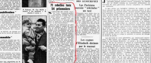

Barika Education Culture
Barika Education Culture
بِسۡمِ ٱللَّهِ ٱلرَّحۡمَٰنِ ٱلرَّحِيمِ
تَبَٰرَكَ ٱلَّذِي بِيَدِهِ ٱلۡمُلۡكُ وَهُوَ عَلَىٰ كُلِّ شَيۡءٖ قَدِيرٌ ﴿١﴾ ٱلَّذِي خَلَقَ ٱلۡمَوۡتَ وَٱلۡحَيَوٰةَ لِيَبۡلُوَكُمۡ أَيُّكُمۡ أَحۡسَنُ عَمَلٗاۚ وَهُوَ
ٱلۡعَزِيزُ ٱلۡغَفُورُ ﴿٢﴾ ٱلَّذِي خَلَقَ سَبۡعَ سَمَٰوَٰتٖ طِبَاقٗاۖ مَّا تَرَىٰ فِي خَلۡقِ ٱلرَّحۡمَٰنِ مِن تَفَٰوُتٖۖ فَٱرۡجِعِ ٱلۡبَصَرَ هَلۡ تَرَىٰ
مِن فُطُورٖ ﴿٣﴾ ثُمَّ ٱرۡجِعِ ٱلۡبَصَرَ كَرَّتَيۡنِ يَنقَلِبۡ إِلَيۡكَ ٱلۡبَصَرُ خَاسِئٗا وَهُوَ حَسِيرٞ ﴿٤﴾ وَلَقَدۡ زَيَّنَّا ٱلسَّمَآءَ ٱلدُّنۡيَا
بِمَصَٰبِيحَ وَجَعَلۡنَٰهَا رُجُومٗا لِّلشَّيَٰطِينِۖ وَأَعۡتَدۡنَا لَهُمۡ عَذَابَ ٱلسَّعِيرِ ﴿٥﴾ وَلِلَّذِينَ كَفَرُواْ بِرَبِّهِمۡ عَذَابُ جَهَنَّمَۖ وَبِئۡسَ
ٱلۡمَصِيرُ ﴿٦﴾ إِذَآ أُلۡقُواْ فِيهَا سَمِعُواْ لَهَا شَهِيقٗا وَهِيَ تَفُورُ ﴿٧﴾ تَكَادُ تَمَيَّزُ مِنَ ٱلۡغَيۡظِۖ كُلَّمَآ أُلۡقِيَ فِيهَا فَوۡجٞ سَأَلَهُمۡ
خَزَنَتُهَآ أَلَمۡ يَأۡتِكُمۡ نَذِيرٞ ﴿٨﴾ قَالُواْ بَلَىٰ قَدۡ جَآءَنَا نَذِيرٞ فَكَذَّبۡنَا وَقُلۡنَا مَا نَزَّلَ ٱللَّهُ مِن شَيۡءٍ إِنۡ أَنتُمۡ إِلَّا فِي ضَلَٰلٖ
كَبِيرٖ ﴿٩﴾ وَقَالُواْ لَوۡ كُنَّا نَسۡمَعُ أَوۡ نَعۡقِلُ مَا كُنَّا فِيٓ أَصۡحَٰبِ ٱلسَّعِيرِ ﴿١٠﴾ فَٱعۡتَرَفُواْ بِذَنۢبِهِمۡ فَسُحۡقٗا لِّأَصۡحَٰبِ
ٱلسَّعِيرِ ﴿١١﴾ إِنَّ ٱلَّذِينَ يَخۡشَوۡنَ رَبَّهُم بِٱلۡغَيۡبِ لَهُم مَّغۡفِرَةٞ وَأَجۡرٞ كَبِيرٞ ﴿١٢﴾ وَأَسِرُّواْ قَوۡلَكُمۡ أَوِ ٱجۡهَرُواْ بِهِۦٓۖ إِنَّهُۥ
عَلِيمُۢ بِذَاتِ ٱلصُّدُورِ ﴿١٣﴾ أَلَا يَعۡلَمُ مَنۡ خَلَقَ وَهُوَ ٱللَّطِيفُ ٱلۡخَبِيرُ ﴿١٤﴾ هُوَ ٱلَّذِي جَعَلَ لَكُمُ ٱلۡأَرۡضَ ذَلُولٗا
فَٱمۡشُواْ فِي مَنَاكِبِهَا وَكُلُواْ مِن رِّزۡقِهِۦۖ وَإِلَيۡهِ ٱلنُّشُورُ ﴿١٥﴾ ءَأَمِنتُم مَّن فِي ٱلسَّمَآءِ أَن يَخۡسِفَ بِكُمُ ٱلۡأَرۡضَ فَإِذَا
هِيَ تَمُورُ ﴿١٦﴾ أَمۡ أَمِنتُم مَّن فِي ٱلسَّمَآءِ أَن يُرۡسِلَ عَلَيۡكُمۡ حَاصِبٗاۖ فَسَتَعۡلَمُونَ كَيۡفَ نَذِيرِ ﴿١٧﴾ وَلَقَدۡ كَذَّبَ ٱلَّذِينَ
مِن قَبۡلِهِمۡ فَكَيۡفَ كَانَ نَكِيرِ ﴿١٨﴾ أَوَلَمۡ يَرَوۡاْ إِلَى ٱلطَّيۡرِ فَوۡقَهُمۡ صَٰٓفَّٰتٖ وَيَقۡبِضۡنَۚ مَا يُمۡسِكُهُنَّ إِلَّا ٱلرَّحۡمَٰنُۚ إِنَّهُۥ بِكُلِّ
شَيۡءِۭ بَصِيرٌ ﴿١٩﴾ أَمَّنۡ هَٰذَا ٱلَّذِي هُوَ جُندٞ لَّكُمۡ يَنصُرُكُم مِّن دُونِ ٱلرَّحۡمَٰنِۚ إِنِ ٱلۡكَٰفِرُونَ إِلَّا فِي غُرُورٍ ﴿٢٠﴾ أَمَّنۡ
هَٰذَا ٱلَّذِي يَرۡزُقُكُمۡ إِنۡ أَمۡسَكَ رِزۡقَهُۥۚ بَل لَّجُّواْ فِي عُتُوّٖ وَنُفُورٍ ﴿٢١﴾ أَفَمَن يَمۡشِي مُكِبًّا عَلَىٰ وَجۡهِهِۦٓ أَهۡدَىٰٓ أَمَّن
يَمۡشِي سَوِيًّا عَلَىٰ صِرَٰطٖ مُّسۡتَقِيمٖ ﴿٢٢﴾ قُلۡ هُوَ ٱلَّذِيٓ أَنشَأَكُمۡ وَجَعَلَ لَكُمُ ٱلسَّمۡعَ وَٱلۡأَبۡصَٰرَ وَٱلۡأَفۡـِٔدَةَۚ قَلِيلٗا مَّا
تَشۡكُرُونَ ﴿٢٣﴾ قُلۡ هُوَ ٱلَّذِي ذَرَأَكُمۡ فِي ٱلۡأَرۡضِ وَإِلَيۡهِ تُحۡشَرُونَ ﴿٢٤﴾ وَيَقُولُونَ مَتَىٰ هَٰذَا ٱلۡوَعۡدُ إِن كُنتُمۡ
صَٰدِقِينَ ﴿٢٥﴾ قُلۡ إِنَّمَا ٱلۡعِلۡمُ عِندَ ٱللَّهِ وَإِنَّمَآ أَنَا۠ نَذِيرٞ مُّبِينٞ ﴿٢٦﴾ فَلَمَّا رَأَوۡهُ زُلۡفَةٗ سِيٓـَٔتۡ وُجُوهُ ٱلَّذِينَ كَفَرُواْ وَقِيلَ
هَٰذَا ٱلَّذِي كُنتُم بِهِۦ تَدَّعُونَ ﴿٢٧﴾ قُلۡ أَرَءَيۡتُمۡ إِنۡ أَهۡلَكَنِيَ ٱللَّهُ وَمَن مَّعِيَ أَوۡ رَحِمَنَا فَمَن يُجِيرُ ٱلۡكَٰفِرِينَ مِنۡ عَذَابٍ
أَلِيمٖ ﴿٢٨﴾ قُلۡ هُوَ ٱلرَّحۡمَٰنُ ءَامَنَّا بِهِۦ وَعَلَيۡهِ تَوَكَّلۡنَاۖ فَسَتَعۡلَمُونَ مَنۡ هُوَ فِي ضَلَٰلٖ مُّبِينٖ ﴿٢٩﴾ قُلۡ أَرَءَيۡتُمۡ إِنۡ أَصۡبَحَ
مَآؤُكُمۡ غَوۡرٗا فَمَن يَأۡتِيكُم بِمَآءٖ مَّعِينِۭ ﴿٣٠﴾
بِسۡمِ ٱللَّهِ ٱلرَّحۡمَٰنِ ٱلرَّحِيمِ
نٓۚ وَٱلۡقَلَمِ وَمَا يَسۡطُرُونَ ﴿١﴾ مَآ أَنتَ بِنِعۡمَةِ رَبِّكَ بِمَجۡنُونٖ ﴿٢﴾ وَإِنَّ لَكَ لَأَجۡرًا غَيۡرَ مَمۡنُونٖ ﴿٣﴾ وَإِنَّكَ لَعَلَىٰ خُلُقٍ
عَظِيمٖ ﴿٤﴾ فَسَتُبۡصِرُ وَيُبۡصِرُونَ ﴿٥﴾ بِأَييِّكُمُ ٱلۡمَفۡتُونُ ﴿٦﴾ إِنَّ رَبَّكَ هُوَ أَعۡلَمُ بِمَن ضَلَّ عَن سَبِيلِهِۦ وَهُوَ أَعۡلَمُ
بِٱلۡمُهۡتَدِينَ ﴿٧﴾ فَلَا تُطِعِ ٱلۡمُكَذِّبِينَ ﴿٨﴾ وَدُّواْ لَوۡ تُدۡهِنُ فَيُدۡهِنُونَ ﴿٩﴾ وَلَا تُطِعۡ كُلَّ حَلَّافٖ مَّهِينٍ ﴿١٠﴾ هَمَّازٖ مَّشَّآءِۭ
بِنَمِيمٖ ﴿١١﴾ مَّنَّاعٖ لِّلۡخَيۡرِ مُعۡتَدٍ أَثِيمٍ ﴿١٢﴾ عُتُلِّۭ بَعۡدَ ذَٰلِكَ زَنِيمٍ ﴿١٣﴾ أَن كَانَ ذَا مَالٖ وَبَنِينَ ﴿١٤﴾ إِذَا تُتۡلَىٰ عَلَيۡهِ
ءَايَٰتُنَا قَالَ أَسَٰطِيرُ ٱلۡأَوَّلِينَ ﴿١٥﴾ سَنَسِمُهُۥ عَلَى ٱلۡخُرۡطُومِ ﴿١٦﴾ إِنَّا بَلَوۡنَٰهُمۡ كَمَا بَلَوۡنَآ أَصۡحَٰبَ ٱلۡجَنَّةِ إِذۡ أَقۡسَمُواْ
لَيَصۡرِمُنَّهَا مُصۡبِحِينَ ﴿١٧﴾ وَلَا يَسۡتَثۡنُونَ ﴿١٨﴾ فَطَافَ عَلَيۡهَا طَآئِفٞ مِّن رَّبِّكَ وَهُمۡ نَآئِمُونَ ﴿١٩﴾ فَأَصۡبَحَتۡ
كَٱلصَّرِيمِ ﴿٢٠﴾ فَتَنَادَوۡاْ مُصۡبِحِينَ ﴿٢١﴾ أَنِ ٱغۡدُواْ عَلَىٰ حَرۡثِكُمۡ إِن كُنتُمۡ صَٰرِمِينَ ﴿٢٢﴾ فَٱنطَلَقُواْ وَهُمۡ يَتَخَٰفَتُونَ
﴿٢٣﴾ أَن لَّا يَدۡخُلَنَّهَا ٱلۡيَوۡمَ عَلَيۡكُم مِّسۡكِينٞ ﴿٢٤﴾ وَغَدَوۡاْ عَلَىٰ حَرۡدٖ قَٰدِرِينَ ﴿٢٥﴾ فَلَمَّا رَأَوۡهَا قَالُوٓاْ إِنَّا لَضَآلُّونَ
﴿٢٦﴾ بَلۡ نَحۡنُ مَحۡرُومُونَ ﴿٢٧﴾ قَالَ أَوۡسَطُهُمۡ أَلَمۡ أَقُل لَّكُمۡ لَوۡلَا تُسَبِّحُونَ ﴿٢٨﴾ قَالُواْ سُبۡحَٰنَ رَبِّنَآ إِنَّا كُنَّا ظَٰلِمِينَ
﴿٢٩﴾ فَأَقۡبَلَ بَعۡضُهُمۡ عَلَىٰ بَعۡضٖ يَتَلَٰوَمُونَ ﴿٣٠﴾ قَالُواْ يَٰوَيۡلَنَآ إِنَّا كُنَّا طَٰغِينَ ﴿٣١﴾ عَسَىٰ رَبُّنَآ أَن يُبۡدِلَنَا خَيۡرٗا مِّنۡهَآ
إِنَّآ إِلَىٰ رَبِّنَا رَٰغِبُونَ ﴿٣٢﴾ كَذَٰلِكَ ٱلۡعَذَابُۖ وَلَعَذَابُ ٱلۡأٓخِرَةِ أَكۡبَرُۚ لَوۡ كَانُواْ يَعۡلَمُونَ ﴿٣٣﴾ إِنَّ لِلۡمُتَّقِينَ عِندَ رَبِّهِمۡ
جَنَّٰتِ ٱلنَّعِيمِ ﴿٣٤﴾ أَفَنَجۡعَلُ ٱلۡمُسۡلِمِينَ كَٱلۡمُجۡرِمِينَ ﴿٣٥﴾ مَا لَكُمۡ كَيۡفَ تَحۡكُمُونَ ﴿٣٦﴾ أَمۡ لَكُمۡ كِتَٰبٞ فِيهِ تَدۡرُسُونَ
﴿٣٧﴾ إِنَّ لَكُمۡ فِيهِ لَمَا تَخَيَّرُونَ ﴿٣٨﴾ أَمۡ لَكُمۡ أَيۡمَٰنٌ عَلَيۡنَا بَٰلِغَةٌ إِلَىٰ يَوۡمِ ٱلۡقِيَٰمَةِ إِنَّ لَكُمۡ لَمَا تَحۡكُمُونَ ﴿٣٩﴾ سَلۡهُمۡ أَيُّهُم
بِذَٰلِكَ زَعِيمٌ ﴿٤٠﴾ أَمۡ لَهُمۡ شُرَكَآءُ فَلۡيَأۡتُواْ بِشُرَكَآئِهِمۡ إِن كَانُواْ صَٰدِقِينَ ﴿٤١﴾ يَوۡمَ يُكۡشَفُ عَن سَاقٖ وَيُدۡعَوۡنَ إِلَى
ٱلسُّجُودِ فَلَا يَسۡتَطِيعُونَ ﴿٤٢﴾ خَٰشِعَةً أَبۡصَٰرُهُمۡ تَرۡهَقُهُمۡ ذِلَّةٞۖ وَقَدۡ كَانُواْ يُدۡعَوۡنَ إِلَى ٱلسُّجُودِ وَهُمۡ سَٰلِمُونَ ﴿٤٣﴾
فَذَرۡنِي وَمَن يُكَذِّبُ بِهَٰذَا ٱلۡحَدِيثِۖ سَنَسۡتَدۡرِجُهُم مِّنۡ حَيۡثُ لَا يَعۡلَمُونَ ﴿٤٤﴾ وَأُمۡلِي لَهُمۡۚ إِنَّ كَيۡدِي مَتِينٌ ﴿٤٥﴾ أَمۡ
تَسۡـَٔلُهُمۡ أَجۡرٗا فَهُم مِّن مَّغۡرَمٖ مُّثۡقَلُونَ ﴿٤٦﴾ أَمۡ عِندَهُمُ ٱلۡغَيۡبُ فَهُمۡ يَكۡتُبُونَ ﴿٤٧﴾ فَٱصۡبِرۡ لِحُكۡمِ رَبِّكَ وَلَا تَكُن
كَصَاحِبِ ٱلۡحُوتِ إِذۡ نَادَىٰ وَهُوَ مَكۡظُومٞ ﴿٤٨﴾ لَّوۡلَآ أَن تَدَٰرَكَهُۥ نِعۡمَةٞ مِّن رَّبِّهِۦ لَنُبِذَ بِٱلۡعَرَآءِ وَهُوَ مَذۡمُومٞ ﴿٤٩﴾
فَٱجۡتَبَٰهُ رَبُّهُۥ فَجَعَلَهُۥ مِنَ ٱلصَّٰلِحِينَ ﴿٥٠﴾ وَإِن يَكَادُ ٱلَّذِينَ كَفَرُواْ لَيُزۡلِقُونَكَ بِأَبۡصَٰرِهِمۡ لَمَّا سَمِعُواْ ٱلذِّكۡرَ وَيَقُولُونَ
إِنَّهُۥ لَمَجۡنُونٞ ﴿٥١﴾ وَمَا هُوَ إِلَّا ذِكۡرٞ لِّلۡعَٰلَمِينَ ﴿٥٢﴾
بِسۡمِ ٱللَّهِ ٱلرَّحۡمَٰنِ ٱلرَّحِيمِ
ٱلۡحَآقَّةُ ﴿١﴾ مَا ٱلۡحَآقَّةُ ﴿٢﴾ وَمَآ أَدۡرَىٰكَ مَا ٱلۡحَآقَّةُ ﴿٣﴾ كَذَّبَتۡ ثَمُودُ وَعَادُۢ بِٱلۡقَارِعَةِ ﴿٤﴾ فَأَمَّا ثَمُودُ فَأُهۡلِكُواْ
بِٱلطَّاغِيَةِ ﴿٥﴾ وَأَمَّا عَادٞ فَأُهۡلِكُواْ بِرِيحٖ صَرۡصَرٍ عَاتِيَةٖ ﴿٦﴾ سَخَّرَهَا عَلَيۡهِمۡ سَبۡعَ لَيَالٖ وَثَمَٰنِيَةَ أَيَّامٍ حُسُومٗاۖ فَتَرَى
ٱلۡقَوۡمَ فِيهَا صَرۡعَىٰ كَأَنَّهُمۡ أَعۡجَازُ نَخۡلٍ خَاوِيَةٖ ﴿٧﴾ فَهَلۡ تَرَىٰ لَهُم مِّنۢ بَاقِيَةٖ ﴿٨﴾ وَجَآءَ فِرۡعَوۡنُ وَمَن قَبۡلَهُۥ
وَٱلۡمُؤۡتَفِكَٰتُ بِٱلۡخَاطِئَةِ ﴿٩﴾ فَعَصَوۡاْ رَسُولَ رَبِّهِمۡ فَأَخَذَهُمۡ أَخۡذَةٗ رَّابِيَةً ﴿١٠﴾ إِنَّا لَمَّا طَغَا ٱلۡمَآءُ حَمَلۡنَٰكُمۡ فِي
ٱلۡجَارِيَةِ ﴿١١﴾ لِنَجۡعَلَهَا لَكُمۡ تَذۡكِرَةٗ وَتَعِيَهَآ أُذُنٞ وَٰعِيَةٞ ﴿١٢﴾ فَإِذَا نُفِخَ فِي ٱلصُّورِ نَفۡخَةٞ وَٰحِدَةٞ ﴿١٣﴾ وَحُمِلَتِ
ٱلۡأَرۡضُ وَٱلۡجِبَالُ فَدُكَّتَا دَكَّةٗ وَٰحِدَةٗ ﴿١٤﴾ فَيَوۡمَئِذٖ وَقَعَتِ ٱلۡوَاقِعَةُ ﴿١٥﴾ وَٱنشَقَّتِ ٱلسَّمَآءُ فَهِيَ يَوۡمَئِذٖ وَاهِيَةٞ ﴿١٦﴾
وَٱلۡمَلَكُ عَلَىٰٓ أَرۡجَآئِهَاۚ وَيَحۡمِلُ عَرۡشَ رَبِّكَ فَوۡقَهُمۡ يَوۡمَئِذٖ ثَمَٰنِيَةٞ ﴿١٧﴾ يَوۡمَئِذٖ تُعۡرَضُونَ لَا تَخۡفَىٰ مِنكُمۡ خَافِيَةٞ ﴿١٨﴾
فَأَمَّا مَنۡ أُوتِيَ كِتَٰبَهُۥ بِيَمِينِهِۦ فَيَقُولُ هَآؤُمُ ٱقۡرَءُواْ كِتَٰبِيَهۡ ﴿١٩﴾ إِنِّي ظَنَنتُ أَنِّي مُلَٰقٍ حِسَابِيَهۡ ﴿٢٠﴾ فَهُوَ فِي عِيشَةٖ
رَّاضِيَةٖ ﴿٢١﴾ فِي جَنَّةٍ عَالِيَةٖ ﴿٢٢﴾ قُطُوفُهَا دَانِيَةٞ ﴿٢٣﴾ كُلُواْ وَٱشۡرَبُواْ هَنِيٓـَٔۢا بِمَآ أَسۡلَفۡتُمۡ فِي ٱلۡأَيَّامِ ٱلۡخَالِيَةِ
﴿٢٤﴾ وَأَمَّا مَنۡ أُوتِيَ كِتَٰبَهُۥ بِشِمَالِهِۦ فَيَقُولُ يَٰلَيۡتَنِي لَمۡ أُوتَ كِتَٰبِيَهۡ ﴿٢٥﴾ وَلَمۡ أَدۡرِ مَا حِسَابِيَهۡ ﴿٢٦﴾ يَٰلَيۡتَهَا كَانَتِ
ٱلۡقَاضِيَةَ ﴿٢٧﴾ مَآ أَغۡنَىٰ عَنِّي مَالِيَهۡۜ ﴿٢٨﴾ هَلَكَ عَنِّي سُلۡطَٰنِيَهۡ ﴿٢٩﴾ خُذُوهُ فَغُلُّوهُ ﴿٣٠﴾ ثُمَّ ٱلۡجَحِيمَ صَلُّوهُ ﴿٣١﴾
ثُمَّ فِي سِلۡسِلَةٖ ذَرۡعُهَا سَبۡعُونَ ذِرَاعٗا فَٱسۡلُكُوهُ ﴿٣٢﴾ إِنَّهُۥ كَانَ لَا يُؤۡمِنُ بِٱللَّهِ ٱلۡعَظِيمِ ﴿٣٣﴾ وَلَا يَحُضُّ عَلَىٰ طَعَامِ
ٱلۡمِسۡكِينِ ﴿٣٤﴾ فَلَيۡسَ لَهُ ٱلۡيَوۡمَ هَٰهُنَا حَمِيمٞ ﴿٣٥﴾ وَلَا طَعَامٌ إِلَّا مِنۡ غِسۡلِينٖ ﴿٣٦﴾ لَّا يَأۡكُلُهُۥٓ إِلَّا ٱلۡخَٰطِـُٔونَ ﴿٣٧﴾ فَلَآ
أُقۡسِمُ بِمَا تُبۡصِرُونَ ﴿٣٨﴾ وَمَا لَا تُبۡصِرُونَ ﴿٣٩﴾ إِنَّهُۥ لَقَوۡلُ رَسُولٖ كَرِيمٖ ﴿٤٠﴾ وَمَا هُوَ بِقَوۡلِ شَاعِرٖۚ قَلِيلٗا مَّا
تُؤۡمِنُونَ ﴿٤١﴾ وَلَا بِقَوۡلِ كَاهِنٖۚ قَلِيلٗا مَّا تَذَكَّرُونَ ﴿٤٢﴾ تَنزِيلٞ مِّن رَّبِّ ٱلۡعَٰلَمِينَ ﴿٤٣﴾ وَلَوۡ تَقَوَّلَ عَلَيۡنَا بَعۡضَ
ٱلۡأَقَاوِيلِ ﴿٤٤﴾ لَأَخَذۡنَا مِنۡهُ بِٱلۡيَمِينِ ﴿٤٥﴾ ثُمَّ لَقَطَعۡنَا مِنۡهُ ٱلۡوَتِينَ ﴿٤٦﴾ فَمَا مِنكُم مِّنۡ أَحَدٍ عَنۡهُ حَٰجِزِينَ ﴿٤٧﴾ وَإِنَّهُۥ
لَتَذۡكِرَةٞ لِّلۡمُتَّقِينَ ﴿٤٨﴾ وَإِنَّا لَنَعۡلَمُ أَنَّ مِنكُم مُّكَذِّبِينَ ﴿٤٩﴾ وَإِنَّهُۥ لَحَسۡرَةٌ عَلَى ٱلۡكَٰفِرِينَ ﴿٥٠﴾ وَإِنَّهُۥ لَحَقُّ ٱلۡيَقِينِ ﴿٥١﴾
فَسَبِّحۡ بِٱسۡمِ رَبِّكَ ٱلۡعَظِيمِ ﴿٥٢﴾
بِسۡمِ ٱللَّهِ ٱلرَّحۡمَٰنِ ٱلرَّحِيمِ
سَأَلَ سَآئِلُۢ بِعَذَابٖ وَاقِعٖ ﴿١﴾ لِّلۡكَٰفِرِينَ لَيۡسَ لَهُۥ دَافِعٞ ﴿٢﴾ مِّنَ ٱللَّهِ ذِي ٱلۡمَعَارِجِ ﴿٣﴾ تَعۡرُجُ ٱلۡمَلَٰٓئِكَةُ وَٱلرُّوحُ إِلَيۡهِ
فِي يَوۡمٖ كَانَ مِقۡدَارُهُۥ خَمۡسِينَ أَلۡفَ سَنَةٖ ﴿٤﴾ فَٱصۡبِرۡ صَبۡرٗا جَمِيلًا ﴿٥﴾ إِنَّهُمۡ يَرَوۡنَهُۥ بَعِيدٗا ﴿٦﴾ وَنَرَىٰهُ قَرِيبٗا ﴿٧﴾
يَوۡمَ تَكُونُ ٱلسَّمَآءُ كَٱلۡمُهۡلِ ﴿٨﴾ وَتَكُونُ ٱلۡجِبَالُ كَٱلۡعِهۡنِ ﴿٩﴾ وَلَا يَسۡـَٔلُ حَمِيمٌ حَمِيمٗا ﴿١٠﴾ يُبَصَّرُونَهُمۡۚ يَوَدُّ ٱلۡمُجۡرِمُ
لَوۡ يَفۡتَدِي مِنۡ عَذَابِ يَوۡمِئِذِۭ بِبَنِيهِ ﴿١١﴾ وَصَٰحِبَتِهِۦ وَأَخِيهِ ﴿١٢﴾ وَفَصِيلَتِهِ ٱلَّتِي تُـٔۡوِيهِ ﴿١٣﴾ وَمَن فِي ٱلۡأَرۡضِ
جَمِيعٗا ثُمَّ يُنجِيهِ ﴿١٤﴾ كَلَّآۖ إِنَّهَا لَظَىٰ ﴿١٥﴾ نَزَّاعَةٗ لِّلشَّوَىٰ ﴿١٦﴾ تَدۡعُواْ مَنۡ أَدۡبَرَ وَتَوَلَّىٰ ﴿١٧﴾ وَجَمَعَ فَأَوۡعَىٰٓ
﴿١٨﴾ ۞ إِنَّ ٱلۡإِنسَٰنَ خُلِقَ هَلُوعًا ﴿١٩﴾ إِذَا مَسَّهُ ٱلشَّرُّ جَزُوعٗا ﴿٢٠﴾ وَإِذَا مَسَّهُ ٱلۡخَيۡرُ مَنُوعًا ﴿٢١﴾ إِلَّا
ٱلۡمُصَلِّينَ ﴿٢٢﴾ ٱلَّذِينَ هُمۡ عَلَىٰ صَلَاتِهِمۡ دَآئِمُونَ ﴿٢٣﴾ وَٱلَّذِينَ فِيٓ أَمۡوَٰلِهِمۡ حَقّٞ مَّعۡلُومٞ ﴿٢٤﴾ لِّلسَّآئِلِ وَٱلۡمَحۡرُومِ
﴿٢٥﴾ وَٱلَّذِينَ يُصَدِّقُونَ بِيَوۡمِ ٱلدِّينِ ﴿٢٦﴾ وَٱلَّذِينَ هُم مِّنۡ عَذَابِ رَبِّهِم مُّشۡفِقُونَ ﴿٢٧﴾ إِنَّ عَذَابَ رَبِّهِمۡ غَيۡرُ مَأۡمُونٖ
﴿٢٨﴾ وَٱلَّذِينَ هُمۡ لِفُرُوجِهِمۡ حَٰفِظُونَ ﴿٢٩﴾ إِلَّا عَلَىٰٓ أَزۡوَٰجِهِمۡ أَوۡ مَا مَلَكَتۡ أَيۡمَٰنُهُمۡ فَإِنَّهُمۡ غَيۡرُ مَلُومِينَ ﴿٣٠﴾ فَمَنِ
ٱبۡتَغَىٰ وَرَآءَ ذَٰلِكَ فَأُوْلَٰٓئِكَ هُمُ ٱلۡعَادُونَ ﴿٣١﴾ وَٱلَّذِينَ هُمۡ لِأَمَٰنَٰتِهِمۡ وَعَهۡدِهِمۡ رَٰعُونَ ﴿٣٢﴾ وَٱلَّذِينَ هُم بِشَهَٰدَٰتِهِمۡ
قَآئِمُونَ ﴿٣٣﴾ وَٱلَّذِينَ هُمۡ عَلَىٰ صَلَاتِهِمۡ يُحَافِظُونَ ﴿٣٤﴾ أُوْلَٰٓئِكَ فِي جَنَّٰتٖ مُّكۡرَمُونَ ﴿٣٥﴾ فَمَالِ ٱلَّذِينَ كَفَرُواْ قِبَلَكَ
مُهۡطِعِينَ ﴿٣٦﴾ عَنِ ٱلۡيَمِينِ وَعَنِ ٱلشِّمَالِ عِزِينَ ﴿٣٧﴾ أَيَطۡمَعُ كُلُّ ٱمۡرِيٕٖ مِّنۡهُمۡ أَن يُدۡخَلَ جَنَّةَ نَعِيمٖ ﴿٣٨﴾ كَلَّآۖ إِنَّا
خَلَقۡنَٰهُم مِّمَّا يَعۡلَمُونَ ﴿٣٩﴾ فَلَآ أُقۡسِمُ بِرَبِّ ٱلۡمَشَٰرِقِ وَٱلۡمَغَٰرِبِ إِنَّا لَقَٰدِرُونَ ﴿٤٠﴾ عَلَىٰٓ أَن نُّبَدِّلَ خَيۡرٗا مِّنۡهُمۡ وَمَا
نَحۡنُ بِمَسۡبُوقِينَ ﴿٤١﴾ فَذَرۡهُمۡ يَخُوضُواْ وَيَلۡعَبُواْ حَتَّىٰ يُلَٰقُواْ يَوۡمَهُمُ ٱلَّذِي يُوعَدُونَ ﴿٤٢﴾ يَوۡمَ يَخۡرُجُونَ مِنَ
ٱلۡأَجۡدَاثِ سِرَاعٗا كَأَنَّهُمۡ إِلَىٰ نُصُبٖ يُوفِضُونَ ﴿٤٣﴾ خَٰشِعَةً أَبۡصَٰرُهُمۡ تَرۡهَقُهُمۡ ذِلَّةٞۚ ذَٰلِكَ ٱلۡيَوۡمُ ٱلَّذِي كَانُواْ
يُوعَدُونَ ﴿٤٤﴾
بِسۡمِ ٱللَّهِ ٱلرَّحۡمَٰنِ ٱلرَّحِيمِ
إِنَّآ أَرۡسَلۡنَا نُوحًا إِلَىٰ قَوۡمِهِۦٓ أَنۡ أَنذِرۡ قَوۡمَكَ مِن قَبۡلِ أَن يَأۡتِيَهُمۡ عَذَابٌ أَلِيمٞ ﴿١﴾ قَالَ يَٰقَوۡمِ إِنِّي لَكُمۡ نَذِيرٞ مُّبِينٌ ﴿٢﴾
أَنِ ٱعۡبُدُواْ ٱللَّهَ وَٱتَّقُوهُ وَأَطِيعُونِ ﴿٣﴾ يَغۡفِرۡ لَكُم مِّن ذُنُوبِكُمۡ وَيُؤَخِّرۡكُمۡ إِلَىٰٓ أَجَلٖ مُّسَمًّىۚ إِنَّ أَجَلَ ٱللَّهِ إِذَا جَآءَ لَا
يُؤَخَّرُۚ لَوۡ كُنتُمۡ تَعۡلَمُونَ ﴿٤﴾ قَالَ رَبِّ إِنِّي دَعَوۡتُ قَوۡمِي لَيۡلٗا وَنَهَارٗا ﴿٥﴾ فَلَمۡ يَزِدۡهُمۡ دُعَآءِيٓ إِلَّا فِرَارٗا ﴿٦﴾ وَإِنِّي
كُلَّمَا دَعَوۡتُهُمۡ لِتَغۡفِرَ لَهُمۡ جَعَلُوٓاْ أَصَٰبِعَهُمۡ فِيٓ ءَاذَانِهِمۡ وَٱسۡتَغۡشَوۡاْ ثِيَابَهُمۡ وَأَصَرُّواْ وَٱسۡتَكۡبَرُواْ ٱسۡتِكۡبَارٗا ﴿٧﴾ ثُمَّ
إِنِّي دَعَوۡتُهُمۡ جِهَارٗا ﴿٨﴾ ثُمَّ إِنِّيٓ أَعۡلَنتُ لَهُمۡ وَأَسۡرَرۡتُ لَهُمۡ إِسۡرَارٗا ﴿٩﴾ فَقُلۡتُ ٱسۡتَغۡفِرُواْ رَبَّكُمۡ إِنَّهُۥ كَانَ غَفَّارٗا
﴿١٠﴾ يُرۡسِلِ ٱلسَّمَآءَ عَلَيۡكُم مِّدۡرَارٗا ﴿١١﴾ وَيُمۡدِدۡكُم بِأَمۡوَٰلٖ وَبَنِينَ وَيَجۡعَل لَّكُمۡ جَنَّٰتٖ وَيَجۡعَل لَّكُمۡ أَنۡهَٰرٗا ﴿١٢﴾ مَّا
لَكُمۡ لَا تَرۡجُونَ لِلَّهِ وَقَارٗا ﴿١٣﴾ وَقَدۡ خَلَقَكُمۡ أَطۡوَارًا ﴿١٤﴾ أَلَمۡ تَرَوۡاْ كَيۡفَ خَلَقَ ٱللَّهُ سَبۡعَ سَمَٰوَٰتٖ طِبَاقٗا ﴿١٥﴾
وَجَعَلَ ٱلۡقَمَرَ فِيهِنَّ نُورٗا وَجَعَلَ ٱلشَّمۡسَ سِرَاجٗا ﴿١٦﴾ وَٱللَّهُ أَنۢبَتَكُم مِّنَ ٱلۡأَرۡضِ نَبَاتٗا ﴿١٧﴾ ثُمَّ يُعِيدُكُمۡ فِيهَا
وَيُخۡرِجُكُمۡ إِخۡرَاجٗا ﴿١٨﴾ وَٱللَّهُ جَعَلَ لَكُمُ ٱلۡأَرۡضَ بِسَاطٗا ﴿١٩﴾ لِّتَسۡلُكُواْ مِنۡهَا سُبُلٗا فِجَاجٗا ﴿٢٠﴾ قَالَ نُوحٞ رَّبِّ
إِنَّهُمۡ عَصَوۡنِي وَٱتَّبَعُواْ مَن لَّمۡ يَزِدۡهُ مَالُهُۥ وَوَلَدُهُۥٓ إِلَّا خَسَارٗا ﴿٢١﴾ وَمَكَرُواْ مَكۡرٗا كُبَّارٗا ﴿٢٢﴾ وَقَالُواْ لَا تَذَرُنَّ
ءَالِهَتَكُمۡ وَلَا تَذَرُنَّ وَدّٗا وَلَا سُوَاعٗا وَلَا يَغُوثَ وَيَعُوقَ وَنَسۡرٗا ﴿٢٣﴾ وَقَدۡ أَضَلُّواْ كَثِيرٗاۖ وَلَا تَزِدِ ٱلظَّٰلِمِينَ إِلَّا
ضَلَٰلٗا ﴿٢٤﴾ مِّمَّا خَطِيٓـَٰٔتِهِمۡ أُغۡرِقُواْ فَأُدۡخِلُواْ نَارٗا فَلَمۡ يَجِدُواْ لَهُم مِّن دُونِ ٱللَّهِ أَنصَارٗا ﴿٢٥﴾ وَقَالَ نُوحٞ رَّبِّ لَا
تَذَرۡ عَلَى ٱلۡأَرۡضِ مِنَ ٱلۡكَٰفِرِينَ دَيَّارًا ﴿٢٦﴾ إِنَّكَ إِن تَذَرۡهُمۡ يُضِلُّواْ عِبَادَكَ وَلَا يَلِدُوٓاْ إِلَّا فَاجِرٗا كَفَّارٗا ﴿٢٧﴾
رَّبِّ ٱغۡفِرۡ لِي وَلِوَٰلِدَيَّ وَلِمَن دَخَلَ بَيۡتِيَ مُؤۡمِنٗا وَلِلۡمُؤۡمِنِينَ وَٱلۡمُؤۡمِنَٰتِۖ وَلَا تَزِدِ ٱلظَّٰلِمِينَ إِلَّا تَبَارَۢا ﴿٢٨﴾
بِسۡمِ ٱللَّهِ ٱلرَّحۡمَٰنِ ٱلرَّحِيمِ
قُلۡ أُوحِيَ إِلَيَّ أَنَّهُ ٱسۡتَمَعَ نَفَرٞ مِّنَ ٱلۡجِنِّ فَقَالُوٓاْ إِنَّا سَمِعۡنَا قُرۡءَانًا عَجَبٗا ﴿١﴾ يَهۡدِيٓ إِلَى ٱلرُّشۡدِ فَـَٔامَنَّا بِهِۦۖ وَلَن
نُّشۡرِكَ بِرَبِّنَآ أَحَدٗا ﴿٢﴾ وَأَنَّهُۥ تَعَٰلَىٰ جَدُّ رَبِّنَا مَا ٱتَّخَذَ صَٰحِبَةٗ وَلَا وَلَدٗا ﴿٣﴾ وَأَنَّهُۥ كَانَ يَقُولُ سَفِيهُنَا عَلَى ٱللَّهِ
شَطَطٗا ﴿٤﴾ وَأَنَّا ظَنَنَّآ أَن لَّن تَقُولَ ٱلۡإِنسُ وَٱلۡجِنُّ عَلَى ٱللَّهِ كَذِبٗا ﴿٥﴾ وَأَنَّهُۥ كَانَ رِجَالٞ مِّنَ ٱلۡإِنسِ يَعُوذُونَ
بِرِجَالٖ مِّنَ ٱلۡجِنِّ فَزَادُوهُمۡ رَهَقٗا ﴿٦﴾ وَأَنَّهُمۡ ظَنُّواْ كَمَا ظَنَنتُمۡ أَن لَّن يَبۡعَثَ ٱللَّهُ أَحَدٗا ﴿٧﴾ وَأَنَّا لَمَسۡنَا ٱلسَّمَآءَ
فَوَجَدۡنَٰهَا مُلِئَتۡ حَرَسٗا شَدِيدٗا وَشُهُبٗا ﴿٨﴾ وَأَنَّا كُنَّا نَقۡعُدُ مِنۡهَا مَقَٰعِدَ لِلسَّمۡعِۖ فَمَن يَسۡتَمِعِ ٱلۡأٓنَ يَجِدۡ لَهُۥ شِهَابٗا رَّصَدٗا
﴿٩﴾ وَأَنَّا لَا نَدۡرِيٓ أَشَرٌّ أُرِيدَ بِمَن فِي ٱلۡأَرۡضِ أَمۡ أَرَادَ بِهِمۡ رَبُّهُمۡ رَشَدٗا ﴿١٠﴾ وَأَنَّا مِنَّا ٱلصَّٰلِحُونَ وَمِنَّا دُونَ ذَٰلِكَۖ
كُنَّا طَرَآئِقَ قِدَدٗا ﴿١١﴾ وَأَنَّا ظَنَنَّآ أَن لَّن نُّعۡجِزَ ٱللَّهَ فِي ٱلۡأَرۡضِ وَلَن نُّعۡجِزَهُۥ هَرَبٗا ﴿١٢﴾ وَأَنَّا لَمَّا سَمِعۡنَا ٱلۡهُدَىٰٓ
ءَامَنَّا بِهِۦۖ فَمَن يُؤۡمِنۢ بِرَبِّهِۦ فَلَا يَخَافُ بَخۡسٗا وَلَا رَهَقٗا ﴿١٣﴾ وَأَنَّا مِنَّا ٱلۡمُسۡلِمُونَ وَمِنَّا ٱلۡقَٰسِطُونَۖ فَمَنۡ أَسۡلَمَ فَأُوْلَٰٓئِكَ
تَحَرَّوۡاْ رَشَدٗا ﴿١٤﴾ وَأَمَّا ٱلۡقَٰسِطُونَ فَكَانُواْ لِجَهَنَّمَ حَطَبٗا ﴿١٥﴾ وَأَلَّوِ ٱسۡتَقَٰمُواْ عَلَى ٱلطَّرِيقَةِ لَأَسۡقَيۡنَٰهُم مَّآءً غَدَقٗا
﴿١٦﴾ لِّنَفۡتِنَهُمۡ فِيهِۚ وَمَن يُعۡرِضۡ عَن ذِكۡرِ رَبِّهِۦ يَسۡلُكۡهُ عَذَابٗا صَعَدٗا ﴿١٧﴾ وَأَنَّ ٱلۡمَسَٰجِدَ لِلَّهِ فَلَا تَدۡعُواْ مَعَ ٱللَّهِ
أَحَدٗا ﴿١٨﴾ وَأَنَّهُۥ لَمَّا قَامَ عَبۡدُ ٱللَّهِ يَدۡعُوهُ كَادُواْ يَكُونُونَ عَلَيۡهِ لِبَدٗا ﴿١٩﴾ قُلۡ إِنَّمَآ أَدۡعُواْ رَبِّي وَلَآ أُشۡرِكُ بِهِۦٓ أَحَدٗا
﴿٢٠﴾ قُلۡ إِنِّي لَآ أَمۡلِكُ لَكُمۡ ضَرّٗا وَلَا رَشَدٗا ﴿٢١﴾ قُلۡ إِنِّي لَن يُجِيرَنِي مِنَ ٱللَّهِ أَحَدٞ وَلَنۡ أَجِدَ مِن دُونِهِۦ مُلۡتَحَدًا
﴿٢٢﴾ إِلَّا بَلَٰغٗا مِّنَ ٱللَّهِ وَرِسَٰلَٰتِهِۦۚ وَمَن يَعۡصِ ٱللَّهَ وَرَسُولَهُۥ فَإِنَّ لَهُۥ نَارَ جَهَنَّمَ خَٰلِدِينَ فِيهَآ أَبَدًا ﴿٢٣﴾ حَتَّىٰٓ إِذَا رَأَوۡاْ
مَا يُوعَدُونَ فَسَيَعۡلَمُونَ مَنۡ أَضۡعَفُ نَاصِرٗا وَأَقَلُّ عَدَدٗا ﴿٢٤﴾ قُلۡ إِنۡ أَدۡرِيٓ أَقَرِيبٞ مَّا تُوعَدُونَ أَمۡ يَجۡعَلُ لَهُۥ رَبِّيٓ
أَمَدًا ﴿٢٥﴾ عَٰلِمُ ٱلۡغَيۡبِ فَلَا يُظۡهِرُ عَلَىٰ غَيۡبِهِۦٓ أَحَدًا ﴿٢٦﴾ إِلَّا مَنِ ٱرۡتَضَىٰ مِن رَّسُولٖ فَإِنَّهُۥ يَسۡلُكُ مِنۢ بَيۡنِ يَدَيۡهِ
وَمِنۡ خَلۡفِهِۦ رَصَدٗا ﴿٢٧﴾ لِّيَعۡلَمَ أَن قَدۡ أَبۡلَغُواْ رِسَٰلَٰتِ رَبِّهِمۡ وَأَحَاطَ بِمَا لَدَيۡهِمۡ وَأَحۡصَىٰ كُلَّ شَيۡءٍ عَدَدَۢا ﴿٢٨﴾
بِسۡمِ ٱللَّهِ ٱلرَّحۡمَٰنِ ٱلرَّحِيمِ
يَٰٓأَيُّهَا ٱلۡمُزَّمِّلُ ﴿١﴾ قُمِ ٱلَّيۡلَ إِلَّا قَلِيلٗا ﴿٢﴾ نِّصۡفَهُۥٓ أَوِ ٱنقُصۡ مِنۡهُ قَلِيلًا ﴿٣﴾ أَوۡ زِدۡ عَلَيۡهِ وَرَتِّلِ ٱلۡقُرۡءَانَ تَرۡتِيلًا ﴿٤﴾
إِنَّا سَنُلۡقِي عَلَيۡكَ قَوۡلٗا ثَقِيلًا ﴿٥﴾ إِنَّ نَاشِئَةَ ٱلَّيۡلِ هِيَ أَشَدُّ وَطۡـٔٗا وَأَقۡوَمُ قِيلًا ﴿٦﴾ إِنَّ لَكَ فِي ٱلنَّهَارِ سَبۡحٗا طَوِيلٗا
﴿٧﴾ وَٱذۡكُرِ ٱسۡمَ رَبِّكَ وَتَبَتَّلۡ إِلَيۡهِ تَبۡتِيلٗا ﴿٨﴾ رَّبُّ ٱلۡمَشۡرِقِ وَٱلۡمَغۡرِبِ لَآ إِلَٰهَ إِلَّا هُوَ فَٱتَّخِذۡهُ وَكِيلٗا ﴿٩﴾ وَٱصۡبِرۡ
عَلَىٰ مَا يَقُولُونَ وَٱهۡجُرۡهُمۡ هَجۡرٗا جَمِيلٗا ﴿١٠﴾ وَذَرۡنِي وَٱلۡمُكَذِّبِينَ أُوْلِي ٱلنَّعۡمَةِ وَمَهِّلۡهُمۡ قَلِيلًا ﴿١١﴾ إِنَّ لَدَيۡنَآ أَنكَالٗا
وَجَحِيمٗا ﴿١٢﴾ وَطَعَامٗا ذَا غُصَّةٖ وَعَذَابًا أَلِيمٗا ﴿١٣﴾ يَوۡمَ تَرۡجُفُ ٱلۡأَرۡضُ وَٱلۡجِبَالُ وَكَانَتِ ٱلۡجِبَالُ كَثِيبٗا مَّهِيلًا
﴿١٤﴾ إِنَّآ أَرۡسَلۡنَآ إِلَيۡكُمۡ رَسُولٗا شَٰهِدًا عَلَيۡكُمۡ كَمَآ أَرۡسَلۡنَآ إِلَىٰ فِرۡعَوۡنَ رَسُولٗا ﴿١٥﴾ فَعَصَىٰ فِرۡعَوۡنُ ٱلرَّسُولَ
فَأَخَذۡنَٰهُ أَخۡذٗا وَبِيلٗا ﴿١٦﴾ فَكَيۡفَ تَتَّقُونَ إِن كَفَرۡتُمۡ يَوۡمٗا يَجۡعَلُ ٱلۡوِلۡدَٰنَ شِيبًا ﴿١٧﴾ ٱلسَّمَآءُ مُنفَطِرُۢ بِهِۦۚ كَانَ وَعۡدُهُۥ
مَفۡعُولًا ﴿١٨﴾ إِنَّ هَٰذِهِۦ تَذۡكِرَةٞۖ فَمَن شَآءَ ٱتَّخَذَ إِلَىٰ رَبِّهِۦ سَبِيلًا ﴿١٩﴾ ۞ إِنَّ رَبَّكَ يَعۡلَمُ أَنَّكَ تَقُومُ أَدۡنَىٰ مِن ثُلُثَيِ
ٱلَّيۡلِ وَنِصۡفَهُۥ وَثُلُثَهُۥ وَطَآئِفَةٞ مِّنَ ٱلَّذِينَ مَعَكَۚ وَٱللَّهُ يُقَدِّرُ ٱلَّيۡلَ وَٱلنَّهَارَۚ عَلِمَ أَن لَّن تُحۡصُوهُ فَتَابَ عَلَيۡكُمۡۖ فَٱقۡرَءُواْ مَا
تَيَسَّرَ مِنَ ٱلۡقُرۡءَانِۚ عَلِمَ أَن سَيَكُونُ مِنكُم مَّرۡضَىٰ وَءَاخَرُونَ يَضۡرِبُونَ فِي ٱلۡأَرۡضِ يَبۡتَغُونَ مِن فَضۡلِ ٱللَّهِ
وَءَاخَرُونَ يُقَٰتِلُونَ فِي سَبِيلِ ٱللَّهِۖ فَٱقۡرَءُواْ مَا تَيَسَّرَ مِنۡهُۚ وَأَقِيمُواْ ٱلصَّلَوٰةَ وَءَاتُواْ ٱلزَّكَوٰةَ وَأَقۡرِضُواْ ٱللَّهَ قَرۡضًا
حَسَنٗاۚ وَمَا تُقَدِّمُواْ لِأَنفُسِكُم مِّنۡ خَيۡرٖ تَجِدُوهُ عِندَ ٱللَّهِ هُوَ خَيۡرٗا وَأَعۡظَمَ أَجۡرٗاۚ وَٱسۡتَغۡفِرُواْ ٱللَّهَۖ إِنَّ ٱللَّهَ غَفُورٞ
رَّحِيمُۢ ﴿٢٠﴾
بِسۡمِ ٱللَّهِ ٱلرَّحۡمَٰنِ ٱلرَّحِيمِ
يَٰٓأَيُّهَا ٱلۡمُدَّثِّرُ ﴿١﴾ قُمۡ فَأَنذِرۡ ﴿٢﴾ وَرَبَّكَ فَكَبِّرۡ ﴿٣﴾ وَثِيَابَكَ فَطَهِّرۡ ﴿٤﴾ وَٱلرُّجۡزَ فَٱهۡجُرۡ ﴿٥﴾ وَلَا تَمۡنُن تَسۡتَكۡثِرُ ﴿٦﴾
وَلِرَبِّكَ فَٱصۡبِرۡ ﴿٧﴾ فَإِذَا نُقِرَ فِي ٱلنَّاقُورِ ﴿٨﴾ فَذَٰلِكَ يَوۡمَئِذٖ يَوۡمٌ عَسِيرٌ ﴿٩﴾ عَلَى ٱلۡكَٰفِرِينَ غَيۡرُ يَسِيرٖ ﴿١٠﴾ ذَرۡنِي
وَمَنۡ خَلَقۡتُ وَحِيدٗا ﴿١١﴾ وَجَعَلۡتُ لَهُۥ مَالٗا مَّمۡدُودٗا ﴿١٢﴾ وَبَنِينَ شُهُودٗا ﴿١٣﴾ وَمَهَّدتُّ لَهُۥ تَمۡهِيدٗا ﴿١٤﴾ ثُمَّ يَطۡمَعُ أَنۡ
أَزِيدَ ﴿١٥﴾ كَلَّآۖ إِنَّهُۥ كَانَ لِأٓيَٰتِنَا عَنِيدٗا ﴿١٦﴾ سَأُرۡهِقُهُۥ صَعُودًا ﴿١٧﴾ إِنَّهُۥ فَكَّرَ وَقَدَّرَ ﴿١٨﴾ فَقُتِلَ كَيۡفَ قَدَّرَ ﴿١٩﴾
ثُمَّ قُتِلَ كَيۡفَ قَدَّرَ ﴿٢٠﴾ ثُمَّ نَظَرَ ﴿٢١﴾ ثُمَّ عَبَسَ وَبَسَرَ ﴿٢٢﴾ ثُمَّ أَدۡبَرَ وَٱسۡتَكۡبَرَ ﴿٢٣﴾ فَقَالَ إِنۡ هَٰذَآ إِلَّا سِحۡرٞ
يُؤۡثَرُ ﴿٢٤﴾ إِنۡ هَٰذَآ إِلَّا قَوۡلُ ٱلۡبَشَرِ ﴿٢٥﴾ سَأُصۡلِيهِ سَقَرَ ﴿٢٦﴾ وَمَآ أَدۡرَىٰكَ مَا سَقَرُ ﴿٢٧﴾ لَا تُبۡقِي وَلَا تَذَرُ
﴿٢٨﴾ لَوَّاحَةٞ لِّلۡبَشَرِ ﴿٢٩﴾ عَلَيۡهَا تِسۡعَةَ عَشَرَ ﴿٣٠﴾ وَمَا جَعَلۡنَآ أَصۡحَٰبَ ٱلنَّارِ إِلَّا مَلَٰٓئِكَةٗۖ وَمَا جَعَلۡنَا عِدَّتَهُمۡ إِلَّا فِتۡنَةٗ
لِّلَّذِينَ كَفَرُواْ لِيَسۡتَيۡقِنَ ٱلَّذِينَ أُوتُواْ ٱلۡكِتَٰبَ وَيَزۡدَادَ ٱلَّذِينَ ءَامَنُوٓاْ إِيمَٰنٗا وَلَا يَرۡتَابَ ٱلَّذِينَ أُوتُواْ ٱلۡكِتَٰبَ وَٱلۡمُؤۡمِنُونَ
وَلِيَقُولَ ٱلَّذِينَ فِي قُلُوبِهِم مَّرَضٞ وَٱلۡكَٰفِرُونَ مَاذَآ أَرَادَ ٱللَّهُ بِهَٰذَا مَثَلٗاۚ كَذَٰلِكَ يُضِلُّ ٱللَّهُ مَن يَشَآءُ وَيَهۡدِي مَن يَشَآءُۚ
وَمَا يَعۡلَمُ جُنُودَ رَبِّكَ إِلَّا هُوَۚ وَمَا هِيَ إِلَّا ذِكۡرَىٰ لِلۡبَشَرِ ﴿٣١﴾ كَلَّا وَٱلۡقَمَرِ ﴿٣٢﴾ وَٱلَّيۡلِ إِذۡ أَدۡبَرَ ﴿٣٣﴾ وَٱلصُّبۡحِ
إِذَآ أَسۡفَرَ ﴿٣٤﴾ إِنَّهَا لَإِحۡدَى ٱلۡكُبَرِ ﴿٣٥﴾ نَذِيرٗا لِّلۡبَشَرِ ﴿٣٦﴾ لِمَن شَآءَ مِنكُمۡ أَن يَتَقَدَّمَ أَوۡ يَتَأَخَّرَ ﴿٣٧﴾ كُلُّ نَفۡسِۭ
بِمَا كَسَبَتۡ رَهِينَةٌ ﴿٣٨﴾ إِلَّآ أَصۡحَٰبَ ٱلۡيَمِينِ ﴿٣٩﴾ فِي جَنَّٰتٖ يَتَسَآءَلُونَ ﴿٤٠﴾ عَنِ ٱلۡمُجۡرِمِينَ ﴿٤١﴾ مَا سَلَكَكُمۡ فِي
سَقَرَ ﴿٤٢﴾ قَالُواْ لَمۡ نَكُ مِنَ ٱلۡمُصَلِّينَ ﴿٤٣﴾ وَلَمۡ نَكُ نُطۡعِمُ ٱلۡمِسۡكِينَ ﴿٤٤﴾ وَكُنَّا نَخُوضُ مَعَ ٱلۡخَآئِضِينَ ﴿٤٥﴾
وَكُنَّا نُكَذِّبُ بِيَوۡمِ ٱلدِّينِ ﴿٤٦﴾ حَتَّىٰٓ أَتَىٰنَا ٱلۡيَقِينُ ﴿٤٧﴾ فَمَا تَنفَعُهُمۡ شَفَٰعَةُ ٱلشَّٰفِعِينَ ﴿٤٨﴾ فَمَا لَهُمۡ عَنِ ٱلتَّذۡكِرَةِ
مُعۡرِضِينَ ﴿٤٩﴾ كَأَنَّهُمۡ حُمُرٞ مُّسۡتَنفِرَةٞ ﴿٥٠﴾ فَرَّتۡ مِن قَسۡوَرَةِۭ ﴿٥١﴾ بَلۡ يُرِيدُ كُلُّ ٱمۡرِيٕٖ مِّنۡهُمۡ أَن يُؤۡتَىٰ صُحُفٗا
مُّنَشَّرَةٗ ﴿٥٢﴾ كَلَّاۖ بَل لَّا يَخَافُونَ ٱلۡأٓخِرَةَ ﴿٥٣﴾ كَلَّآ إِنَّهُۥ تَذۡكِرَةٞ ﴿٥٤﴾ فَمَن شَآءَ ذَكَرَهُۥ ﴿٥٥﴾ وَمَا يَذۡكُرُونَ إِلَّآ أَن
يَشَآءَ ٱللَّهُۚ هُوَ أَهۡلُ ٱلتَّقۡوَىٰ وَأَهۡلُ ٱلۡمَغۡفِرَةِ ﴿٥٦﴾
بِسۡمِ ٱللَّهِ ٱلرَّحۡمَٰنِ ٱلرَّحِيمِ
لَآ أُقۡسِمُ بِيَوۡمِ ٱلۡقِيَٰمَةِ ﴿١﴾ وَلَآ أُقۡسِمُ بِٱلنَّفۡسِ ٱللَّوَّامَةِ ﴿٢﴾ أَيَحۡسَبُ ٱلۡإِنسَٰنُ أَلَّن نَّجۡمَعَ عِظَامَهُۥ ﴿٣﴾ بَلَىٰ قَٰدِرِينَ عَلَىٰٓ
أَن نُّسَوِّيَ بَنَانَهُۥ ﴿٤﴾ بَلۡ يُرِيدُ ٱلۡإِنسَٰنُ لِيَفۡجُرَ أَمَامَهُۥ ﴿٥﴾ يَسۡـَٔلُ أَيَّانَ يَوۡمُ ٱلۡقِيَٰمَةِ ﴿٦﴾ فَإِذَا بَرِقَ ٱلۡبَصَرُ ﴿٧﴾
وَخَسَفَ ٱلۡقَمَرُ ﴿٨﴾ وَجُمِعَ ٱلشَّمۡسُ وَٱلۡقَمَرُ ﴿٩﴾ يَقُولُ ٱلۡإِنسَٰنُ يَوۡمَئِذٍ أَيۡنَ ٱلۡمَفَرُّ ﴿١٠﴾ كَلَّا لَا وَزَرَ ﴿١١﴾ إِلَىٰ
رَبِّكَ يَوۡمَئِذٍ ٱلۡمُسۡتَقَرُّ ﴿١٢﴾ يُنَبَّؤُاْ ٱلۡإِنسَٰنُ يَوۡمَئِذِۭ بِمَا قَدَّمَ وَأَخَّرَ ﴿١٣﴾ بَلِ ٱلۡإِنسَٰنُ عَلَىٰ نَفۡسِهِۦ بَصِيرَةٞ ﴿١٤﴾ وَلَوۡ
أَلۡقَىٰ مَعَاذِيرَهُۥ ﴿١٥﴾ لَا تُحَرِّكۡ بِهِۦ لِسَانَكَ لِتَعۡجَلَ بِهِۦٓ ﴿١٦﴾ إِنَّ عَلَيۡنَا جَمۡعَهُۥ وَقُرۡءَانَهُۥ ﴿١٧﴾ فَإِذَا قَرَأۡنَٰهُ فَٱتَّبِعۡ
قُرۡءَانَهُۥ ﴿١٨﴾ ثُمَّ إِنَّ عَلَيۡنَا بَيَانَهُۥ ﴿١٩﴾ كَلَّا بَلۡ تُحِبُّونَ ٱلۡعَاجِلَةَ ﴿٢٠﴾ وَتَذَرُونَ ٱلۡأٓخِرَةَ ﴿٢١﴾ وُجُوهٞ يَوۡمَئِذٖ
نَّاضِرَةٌ ﴿٢٢﴾ إِلَىٰ رَبِّهَا نَاظِرَةٞ ﴿٢٣﴾ وَوُجُوهٞ يَوۡمَئِذِۭ بَاسِرَةٞ ﴿٢٤﴾ تَظُنُّ أَن يُفۡعَلَ بِهَا فَاقِرَةٞ ﴿٢٥﴾ كَلَّآ إِذَا بَلَغَتِ
ٱلتَّرَاقِيَ ﴿٢٦﴾ وَقِيلَ مَنۡۜ رَاقٖ ﴿٢٧﴾ وَظَنَّ أَنَّهُ ٱلۡفِرَاقُ ﴿٢٨﴾ وَٱلۡتَفَّتِ ٱلسَّاقُ بِٱلسَّاقِ ﴿٢٩﴾ إِلَىٰ رَبِّكَ يَوۡمَئِذٍ
ٱلۡمَسَاقُ ﴿٣٠﴾ فَلَا صَدَّقَ وَلَا صَلَّىٰ ﴿٣١﴾ وَلَٰكِن كَذَّبَ وَتَوَلَّىٰ ﴿٣٢﴾ ثُمَّ ذَهَبَ إِلَىٰٓ أَهۡلِهِۦ يَتَمَطَّىٰٓ ﴿٣٣﴾ أَوۡلَىٰ لَكَ
فَأَوۡلَىٰ ﴿٣٤﴾ ثُمَّ أَوۡلَىٰ لَكَ فَأَوۡلَىٰٓ ﴿٣٥﴾ أَيَحۡسَبُ ٱلۡإِنسَٰنُ أَن يُتۡرَكَ سُدًى ﴿٣٦﴾ أَلَمۡ يَكُ نُطۡفَةٗ مِّن مَّنِيّٖ يُمۡنَىٰ ﴿٣٧﴾
ثُمَّ كَانَ عَلَقَةٗ فَخَلَقَ فَسَوَّىٰ ﴿٣٨﴾ فَجَعَلَ مِنۡهُ ٱلزَّوۡجَيۡنِ ٱلذَّكَرَ وَٱلۡأُنثَىٰٓ ﴿٣٩﴾ أَلَيۡسَ ذَٰلِكَ بِقَٰدِرٍ عَلَىٰٓ أَن يُحۡـِۧيَ
ٱلۡمَوۡتَىٰ ﴿٤٠﴾
بِسۡمِ ٱللَّهِ ٱلرَّحۡمَٰنِ ٱلرَّحِيمِ
هَلۡ أَتَىٰ عَلَى ٱلۡإِنسَٰنِ حِينٞ مِّنَ ٱلدَّهۡرِ لَمۡ يَكُن شَيۡـٔٗا مَّذۡكُورًا ﴿١﴾ إِنَّا خَلَقۡنَا ٱلۡإِنسَٰنَ مِن نُّطۡفَةٍ أَمۡشَاجٖ نَّبۡتَلِيهِ فَجَعَلۡنَٰهُ
سَمِيعَۢا بَصِيرًا ﴿٢﴾ إِنَّا هَدَيۡنَٰهُ ٱلسَّبِيلَ إِمَّا شَاكِرٗا وَإِمَّا كَفُورًا ﴿٣﴾ إِنَّآ أَعۡتَدۡنَا لِلۡكَٰفِرِينَ سَلَٰسِلَاْ وَأَغۡلَٰلٗا وَسَعِيرًا
﴿٤﴾ إِنَّ ٱلۡأَبۡرَارَ يَشۡرَبُونَ مِن كَأۡسٖ كَانَ مِزَاجُهَا كَافُورًا ﴿٥﴾ عَيۡنٗا يَشۡرَبُ بِهَا عِبَادُ ٱللَّهِ يُفَجِّرُونَهَا تَفۡجِيرٗا ﴿٦﴾
يُوفُونَ بِٱلنَّذۡرِ وَيَخَافُونَ يَوۡمٗا كَانَ شَرُّهُۥ مُسۡتَطِيرٗا ﴿٧﴾ وَيُطۡعِمُونَ ٱلطَّعَامَ عَلَىٰ حُبِّهِۦ مِسۡكِينٗا وَيَتِيمٗا وَأَسِيرًا ﴿٨﴾
إِنَّمَا نُطۡعِمُكُمۡ لِوَجۡهِ ٱللَّهِ لَا نُرِيدُ مِنكُمۡ جَزَآءٗ وَلَا شُكُورًا ﴿٩﴾ إِنَّا نَخَافُ مِن رَّبِّنَا يَوۡمًا عَبُوسٗا قَمۡطَرِيرٗا ﴿١٠﴾
فَوَقَىٰهُمُ ٱللَّهُ شَرَّ ذَٰلِكَ ٱلۡيَوۡمِ وَلَقَّىٰهُمۡ نَضۡرَةٗ وَسُرُورٗا ﴿١١﴾ وَجَزَىٰهُم بِمَا صَبَرُواْ جَنَّةٗ وَحَرِيرٗا ﴿١٢﴾ مُّتَّكِـِٔينَ فِيهَا
عَلَى ٱلۡأَرَآئِكِۖ لَا يَرَوۡنَ فِيهَا شَمۡسٗا وَلَا زَمۡهَرِيرٗا ﴿١٣﴾ وَدَانِيَةً عَلَيۡهِمۡ ظِلَٰلُهَا وَذُلِّلَتۡ قُطُوفُهَا تَذۡلِيلٗا ﴿١٤﴾
وَيُطَافُ عَلَيۡهِم بِـَٔانِيَةٖ مِّن فِضَّةٖ وَأَكۡوَابٖ كَانَتۡ قَوَارِيرَا۠ ﴿١٥﴾ قَوَارِيرَاْ مِن فِضَّةٖ قَدَّرُوهَا تَقۡدِيرٗا ﴿١٦﴾
وَيُسۡقَوۡنَ فِيهَا كَأۡسٗا كَانَ مِزَاجُهَا زَنجَبِيلًا ﴿١٧﴾ عَيۡنٗا فِيهَا تُسَمَّىٰ سَلۡسَبِيلٗا ﴿١٨﴾ ۞ وَيَطُوفُ عَلَيۡهِمۡ وِلۡدَٰنٞ
مُّخَلَّدُونَ إِذَا رَأَيۡتَهُمۡ حَسِبۡتَهُمۡ لُؤۡلُؤٗا مَّنثُورٗا ﴿١٩﴾ وَإِذَا رَأَيۡتَ ثَمَّ رَأَيۡتَ نَعِيمٗا وَمُلۡكٗا كَبِيرًا ﴿٢٠﴾ عَٰلِيَهُمۡ ثِيَابُ
سُندُسٍ خُضۡرٞ وَإِسۡتَبۡرَقٞۖ وَحُلُّوٓاْ أَسَاوِرَ مِن فِضَّةٖ وَسَقَىٰهُمۡ رَبُّهُمۡ شَرَابٗا طَهُورًا ﴿٢١﴾ إِنَّ هَٰذَا كَانَ لَكُمۡ جَزَآءٗ
وَكَانَ سَعۡيُكُم مَّشۡكُورًا ﴿٢٢﴾ إِنَّا نَحۡنُ نَزَّلۡنَا عَلَيۡكَ ٱلۡقُرۡءَانَ تَنزِيلٗا ﴿٢٣﴾ فَٱصۡبِرۡ لِحُكۡمِ رَبِّكَ وَلَا تُطِعۡ مِنۡهُمۡ ءَاثِمًا
أَوۡ كَفُورٗا ﴿٢٤﴾ وَٱذۡكُرِ ٱسۡمَ رَبِّكَ بُكۡرَةٗ وَأَصِيلٗا ﴿٢٥﴾ وَمِنَ ٱلَّيۡلِ فَٱسۡجُدۡ لَهُۥ وَسَبِّحۡهُ لَيۡلٗا طَوِيلًا ﴿٢٦﴾ إِنَّ
هَٰٓؤُلَآءِ يُحِبُّونَ ٱلۡعَاجِلَةَ وَيَذَرُونَ وَرَآءَهُمۡ يَوۡمٗا ثَقِيلٗا ﴿٢٧﴾ نَّحۡنُ خَلَقۡنَٰهُمۡ وَشَدَدۡنَآ أَسۡرَهُمۡۖ وَإِذَا شِئۡنَا بَدَّلۡنَآ أَمۡثَٰلَهُمۡ
تَبۡدِيلًا ﴿٢٨﴾ إِنَّ هَٰذِهِۦ تَذۡكِرَةٞۖ فَمَن شَآءَ ٱتَّخَذَ إِلَىٰ رَبِّهِۦ سَبِيلٗا ﴿٢٩﴾ وَمَا تَشَآءُونَ إِلَّآ أَن يَشَآءَ ٱللَّهُۚ إِنَّ ٱللَّهَ كَانَ
عَلِيمًا حَكِيمٗا ﴿٣٠﴾ يُدۡخِلُ مَن يَشَآءُ فِي رَحۡمَتِهِۦۚ وَٱلظَّٰلِمِينَ أَعَدَّ لَهُمۡ عَذَابًا أَلِيمَۢا ﴿٣١﴾
بِسۡمِ ٱللَّهِ ٱلرَّحۡمَٰنِ ٱلرَّحِيمِ
وَٱلۡمُرۡسَلَٰتِ عُرۡفٗا ﴿١﴾ فَٱلۡعَٰصِفَٰتِ عَصۡفٗا ﴿٢﴾ وَٱلنَّٰشِرَٰتِ نَشۡرٗا ﴿٣﴾ فَٱلۡفَٰرِقَٰتِ فَرۡقٗا ﴿٤﴾ فَٱلۡمُلۡقِيَٰتِ ذِكۡرًا ﴿٥﴾ عُذۡرًا
أَوۡ نُذۡرًا ﴿٦﴾ إِنَّمَا تُوعَدُونَ لَوَٰقِعٞ ﴿٧﴾ فَإِذَا ٱلنُّجُومُ طُمِسَتۡ ﴿٨﴾ وَإِذَا ٱلسَّمَآءُ فُرِجَتۡ ﴿٩﴾ وَإِذَا ٱلۡجِبَالُ نُسِفَتۡ
﴿١٠﴾ وَإِذَا ٱلرُّسُلُ أُقِّتَتۡ ﴿١١﴾ لِأَيِّ يَوۡمٍ أُجِّلَتۡ ﴿١٢﴾ لِيَوۡمِ ٱلۡفَصۡلِ ﴿١٣﴾ وَمَآ أَدۡرَىٰكَ مَا يَوۡمُ ٱلۡفَصۡلِ ﴿١٤﴾ وَيۡلٞ
يَوۡمَئِذٖ لِّلۡمُكَذِّبِينَ ﴿١٥﴾ أَلَمۡ نُهۡلِكِ ٱلۡأَوَّلِينَ ﴿١٦﴾ ثُمَّ نُتۡبِعُهُمُ ٱلۡأٓخِرِينَ ﴿١٧﴾ كَذَٰلِكَ نَفۡعَلُ بِٱلۡمُجۡرِمِينَ ﴿١٨﴾ وَيۡلٞ يَوۡمَئِذٖ
لِّلۡمُكَذِّبِينَ ﴿١٩﴾ أَلَمۡ نَخۡلُقكُّم مِّن مَّآءٖ مَّهِينٖ ﴿٢٠﴾ فَجَعَلۡنَٰهُ فِي قَرَارٖ مَّكِينٍ ﴿٢١﴾ إِلَىٰ قَدَرٖ مَّعۡلُومٖ ﴿٢٢﴾ فَقَدَرۡنَا فَنِعۡمَ
ٱلۡقَٰدِرُونَ ﴿٢٣﴾ وَيۡلٞ يَوۡمَئِذٖ لِّلۡمُكَذِّبِينَ ﴿٢٤﴾ أَلَمۡ نَجۡعَلِ ٱلۡأَرۡضَ كِفَاتًا ﴿٢٥﴾ أَحۡيَآءٗ وَأَمۡوَٰتٗا ﴿٢٦﴾ وَجَعَلۡنَا فِيهَا
رَوَٰسِيَ شَٰمِخَٰتٖ وَأَسۡقَيۡنَٰكُم مَّآءٗ فُرَاتٗا ﴿٢٧﴾ وَيۡلٞ يَوۡمَئِذٖ لِّلۡمُكَذِّبِينَ ﴿٢٨﴾ ٱنطَلِقُوٓاْ إِلَىٰ مَا كُنتُم بِهِۦ تُكَذِّبُونَ ﴿٢٩﴾
ٱنطَلِقُوٓاْ إِلَىٰ ظِلّٖ ذِي ثَلَٰثِ شُعَبٖ ﴿٣٠﴾ لَّا ظَلِيلٖ وَلَا يُغۡنِي مِنَ ٱللَّهَبِ ﴿٣١﴾ إِنَّهَا تَرۡمِي بِشَرَرٖ كَٱلۡقَصۡرِ ﴿٣٢﴾
كَأَنَّهُۥ جِمَٰلَتٞ صُفۡرٞ ﴿٣٣﴾ وَيۡلٞ يَوۡمَئِذٖ لِّلۡمُكَذِّبِينَ ﴿٣٤﴾ هَٰذَا يَوۡمُ لَا يَنطِقُونَ ﴿٣٥﴾ وَلَا يُؤۡذَنُ لَهُمۡ فَيَعۡتَذِرُونَ ﴿٣٦﴾
وَيۡلٞ يَوۡمَئِذٖ لِّلۡمُكَذِّبِينَ ﴿٣٧﴾ هَٰذَا يَوۡمُ ٱلۡفَصۡلِۖ جَمَعۡنَٰكُمۡ وَٱلۡأَوَّلِينَ ﴿٣٨﴾ فَإِن كَانَ لَكُمۡ كَيۡدٞ فَكِيدُونِ ﴿٣٩﴾ وَيۡلٞ يَوۡمَئِذٖ
لِّلۡمُكَذِّبِينَ ﴿٤٠﴾ إِنَّ ٱلۡمُتَّقِينَ فِي ظِلَٰلٖ وَعُيُونٖ ﴿٤١﴾ وَفَوَٰكِهَ مِمَّا يَشۡتَهُونَ ﴿٤٢﴾ كُلُواْ وَٱشۡرَبُواْ هَنِيٓـَٔۢا بِمَا كُنتُمۡ
تَعۡمَلُونَ ﴿٤٣﴾ إِنَّا كَذَٰلِكَ نَجۡزِي ٱلۡمُحۡسِنِينَ ﴿٤٤﴾ وَيۡلٞ يَوۡمَئِذٖ لِّلۡمُكَذِّبِينَ ﴿٤٥﴾ كُلُواْ وَتَمَتَّعُواْ قَلِيلًا إِنَّكُم مُّجۡرِمُونَ
﴿٤٦﴾ وَيۡلٞ يَوۡمَئِذٖ لِّلۡمُكَذِّبِينَ ﴿٤٧﴾ وَإِذَا قِيلَ لَهُمُ ٱرۡكَعُواْ لَا يَرۡكَعُونَ ﴿٤٨﴾ وَيۡلٞ يَوۡمَئِذٖ لِّلۡمُكَذِّبِينَ ﴿٤٩﴾ فَبِأَيِّ حَدِيثِۭ
بَعۡدَهُۥ يُؤۡمِنُونَ ﴿٥٠﴾
بِسۡمِ ٱللَّهِ ٱلرَّحۡمَٰنِ ٱلرَّحِيمِ
عَمَّ يَتَسَآءَلُونَ ﴿١﴾ عَنِ ٱلنَّبَإِ ٱلۡعَظِيمِ ﴿٢﴾ ٱلَّذِي هُمۡ فِيهِ مُخۡتَلِفُونَ ﴿٣﴾ كَلَّا سَيَعۡلَمُونَ ﴿٤﴾ ثُمَّ كَلَّا سَيَعۡلَمُونَ ﴿٥﴾ أَلَمۡ
نَجۡعَلِ ٱلۡأَرۡضَ مِهَٰدٗا ﴿٦﴾ وَٱلۡجِبَالَ أَوۡتَادٗا ﴿٧﴾ وَخَلَقۡنَٰكُمۡ أَزۡوَٰجٗا ﴿٨﴾ وَجَعَلۡنَا نَوۡمَكُمۡ سُبَاتٗا ﴿٩﴾ وَجَعَلۡنَا ٱلَّيۡلَ لِبَاسٗا
﴿١٠﴾ وَجَعَلۡنَا ٱلنَّهَارَ مَعَاشٗا ﴿١١﴾ وَبَنَيۡنَا فَوۡقَكُمۡ سَبۡعٗا شِدَادٗا ﴿١٢﴾ وَجَعَلۡنَا سِرَاجٗا وَهَّاجٗا ﴿١٣﴾ وَأَنزَلۡنَا مِنَ
ٱلۡمُعۡصِرَٰتِ مَآءٗ ثَجَّاجٗا ﴿١٤﴾ لِّنُخۡرِجَ بِهِۦ حَبّٗا وَنَبَاتٗا ﴿١٥﴾ وَجَنَّٰتٍ أَلۡفَافًا ﴿١٦﴾ إِنَّ يَوۡمَ ٱلۡفَصۡلِ كَانَ مِيقَٰتٗا ﴿١٧﴾
يَوۡمَ يُنفَخُ فِي ٱلصُّورِ فَتَأۡتُونَ أَفۡوَاجٗا ﴿١٨﴾ وَفُتِحَتِ ٱلسَّمَآءُ فَكَانَتۡ أَبۡوَٰبٗا ﴿١٩﴾ وَسُيِّرَتِ ٱلۡجِبَالُ فَكَانَتۡ سَرَابًا
﴿٢٠﴾ إِنَّ جَهَنَّمَ كَانَتۡ مِرۡصَادٗا ﴿٢١﴾ لِّلطَّٰغِينَ مَـَٔابٗا ﴿٢٢﴾ لَّٰبِثِينَ فِيهَآ أَحۡقَابٗا ﴿٢٣﴾ لَّا يَذُوقُونَ فِيهَا بَرۡدٗا وَلَا
شَرَابًا ﴿٢٤﴾ إِلَّا حَمِيمٗا وَغَسَّاقٗا ﴿٢٥﴾ جَزَآءٗ وِفَاقًا ﴿٢٦﴾ إِنَّهُمۡ كَانُواْ لَا يَرۡجُونَ حِسَابٗا ﴿٢٧﴾ وَكَذَّبُواْ بِـَٔايَٰتِنَا
كِذَّابٗا ﴿٢٨﴾ وَكُلَّ شَيۡءٍ أَحۡصَيۡنَٰهُ كِتَٰبٗا ﴿٢٩﴾ فَذُوقُواْ فَلَن نَّزِيدَكُمۡ إِلَّا عَذَابًا ﴿٣٠﴾ إِنَّ لِلۡمُتَّقِينَ مَفَازًا ﴿٣١﴾ حَدَآئِقَ
وَأَعۡنَٰبٗا ﴿٣٢﴾ وَكَوَاعِبَ أَتۡرَابٗا ﴿٣٣﴾ وَكَأۡسٗا دِهَاقٗا ﴿٣٤﴾ لَّا يَسۡمَعُونَ فِيهَا لَغۡوٗا وَلَا كِذَّٰبٗا ﴿٣٥﴾ جَزَآءٗ مِّن رَّبِّكَ
عَطَآءً حِسَابٗا ﴿٣٦﴾ رَّبِّ ٱلسَّمَٰوَٰتِ وَٱلۡأَرۡضِ وَمَا بَيۡنَهُمَا ٱلرَّحۡمَٰنِۖ لَا يَمۡلِكُونَ مِنۡهُ خِطَابٗا ﴿٣٧﴾ يَوۡمَ يَقُومُ ٱلرُّوحُ
وَٱلۡمَلَٰٓئِكَةُ صَفّٗاۖ لَّا يَتَكَلَّمُونَ إِلَّا مَنۡ أَذِنَ لَهُ ٱلرَّحۡمَٰنُ وَقَالَ صَوَابٗا ﴿٣٨﴾ ذَٰلِكَ ٱلۡيَوۡمُ ٱلۡحَقُّۖ فَمَن شَآءَ ٱتَّخَذَ إِلَىٰ رَبِّهِۦ
مَـَٔابًا ﴿٣٩﴾ إِنَّآ أَنذَرۡنَٰكُمۡ عَذَابٗا قَرِيبٗا يَوۡمَ يَنظُرُ ٱلۡمَرۡءُ مَا قَدَّمَتۡ يَدَاهُ وَيَقُولُ ٱلۡكَافِرُ يَٰلَيۡتَنِي كُنتُ تُرَٰبَۢا ﴿٤٠﴾
بِسۡمِ ٱللَّهِ ٱلرَّحۡمَٰنِ ٱلرَّحِيمِ
وَٱلنَّٰزِعَٰتِ غَرۡقٗا ﴿١﴾ وَٱلنَّٰشِطَٰتِ نَشۡطٗا ﴿٢﴾ وَٱلسَّٰبِحَٰتِ سَبۡحٗا ﴿٣﴾ فَٱلسَّٰبِقَٰتِ سَبۡقٗا ﴿٤﴾ فَٱلۡمُدَبِّرَٰتِ أَمۡرٗا ﴿٥﴾ يَوۡمَ
تَرۡجُفُ ٱلرَّاجِفَةُ ﴿٦﴾ تَتۡبَعُهَا ٱلرَّادِفَةُ ﴿٧﴾ قُلُوبٞ يَوۡمَئِذٖ وَاجِفَةٌ ﴿٨﴾ أَبۡصَٰرُهَا خَٰشِعَةٞ ﴿٩﴾ يَقُولُونَ أَءِنَّا لَمَرۡدُودُونَ
فِي ٱلۡحَافِرَةِ ﴿١٠﴾ أَءِذَا كُنَّا عِظَٰمٗا نَّخِرَةٗ ﴿١١﴾ قَالُواْ تِلۡكَ إِذٗا كَرَّةٌ خَاسِرَةٞ ﴿١٢﴾ فَإِنَّمَا هِيَ زَجۡرَةٞ وَٰحِدَةٞ ﴿١٣﴾
فَإِذَا هُم بِٱلسَّاهِرَةِ ﴿١٤﴾ هَلۡ أَتَىٰكَ حَدِيثُ مُوسَىٰٓ ﴿١٥﴾ إِذۡ نَادَىٰهُ رَبُّهُۥ بِٱلۡوَادِ ٱلۡمُقَدَّسِ طُوًى ﴿١٦﴾ ٱذۡهَبۡ إِلَىٰ
فِرۡعَوۡنَ إِنَّهُۥ طَغَىٰ ﴿١٧﴾ فَقُلۡ هَل لَّكَ إِلَىٰٓ أَن تَزَكَّىٰ ﴿١٨﴾ وَأَهۡدِيَكَ إِلَىٰ رَبِّكَ فَتَخۡشَىٰ ﴿١٩﴾ فَأَرَىٰهُ ٱلۡأٓيَةَ ٱلۡكُبۡرَىٰ
﴿٢٠﴾ فَكَذَّبَ وَعَصَىٰ ﴿٢١﴾ ثُمَّ أَدۡبَرَ يَسۡعَىٰ ﴿٢٢﴾ فَحَشَرَ فَنَادَىٰ ﴿٢٣﴾ فَقَالَ أَنَا۠ رَبُّكُمُ ٱلۡأَعۡلَىٰ ﴿٢٤﴾ فَأَخَذَهُ ٱللَّهُ
نَكَالَ ٱلۡأٓخِرَةِ وَٱلۡأُولَىٰٓ ﴿٢٥﴾ إِنَّ فِي ذَٰلِكَ لَعِبۡرَةٗ لِّمَن يَخۡشَىٰٓ ﴿٢٦﴾ ءَأَنتُمۡ أَشَدُّ خَلۡقًا أَمِ ٱلسَّمَآءُۚ بَنَىٰهَا ﴿٢٧﴾ رَفَعَ
سَمۡكَهَا فَسَوَّىٰهَا ﴿٢٨﴾ وَأَغۡطَشَ لَيۡلَهَا وَأَخۡرَجَ ضُحَىٰهَا ﴿٢٩﴾ وَٱلۡأَرۡضَ بَعۡدَ ذَٰلِكَ دَحَىٰهَآ ﴿٣٠﴾ أَخۡرَجَ مِنۡهَا مَآءَهَا
وَمَرۡعَىٰهَا ﴿٣١﴾ وَٱلۡجِبَالَ أَرۡسَىٰهَا ﴿٣٢﴾ مَتَٰعٗا لَّكُمۡ وَلِأَنۡعَٰمِكُمۡ ﴿٣٣﴾ فَإِذَا جَآءَتِ ٱلطَّآمَّةُ ٱلۡكُبۡرَىٰ ﴿٣٤﴾ يَوۡمَ يَتَذَكَّرُ
ٱلۡإِنسَٰنُ مَا سَعَىٰ ﴿٣٥﴾ وَبُرِّزَتِ ٱلۡجَحِيمُ لِمَن يَرَىٰ ﴿٣٦﴾ فَأَمَّا مَن طَغَىٰ ﴿٣٧﴾ وَءَاثَرَ ٱلۡحَيَوٰةَ ٱلدُّنۡيَا ﴿٣٨﴾ فَإِنَّ
ٱلۡجَحِيمَ هِيَ ٱلۡمَأۡوَىٰ ﴿٣٩﴾ وَأَمَّا مَنۡ خَافَ مَقَامَ رَبِّهِۦ وَنَهَى ٱلنَّفۡسَ عَنِ ٱلۡهَوَىٰ ﴿٤٠﴾ فَإِنَّ ٱلۡجَنَّةَ هِيَ ٱلۡمَأۡوَىٰ ﴿٤١﴾
يَسۡـَٔلُونَكَ عَنِ ٱلسَّاعَةِ أَيَّانَ مُرۡسَىٰهَا ﴿٤٢﴾ فِيمَ أَنتَ مِن ذِكۡرَىٰهَآ ﴿٤٣﴾ إِلَىٰ رَبِّكَ مُنتَهَىٰهَآ ﴿٤٤﴾ إِنَّمَآ أَنتَ مُنذِرُ مَن
يَخۡشَىٰهَا ﴿٤٥﴾ كَأَنَّهُمۡ يَوۡمَ يَرَوۡنَهَا لَمۡ يَلۡبَثُوٓاْ إِلَّا عَشِيَّةً أَوۡ ضُحَىٰهَا ﴿٤٦﴾
بِسۡمِ ٱللَّهِ ٱلرَّحۡمَٰنِ ٱلرَّحِيمِ
عَبَسَ وَتَوَلَّىٰٓ ﴿١﴾ أَن جَآءَهُ ٱلۡأَعۡمَىٰ ﴿٢﴾ وَمَا يُدۡرِيكَ لَعَلَّهُۥ يَزَّكَّىٰٓ ﴿٣﴾ أَوۡ يَذَّكَّرُ فَتَنفَعَهُ ٱلذِّكۡرَىٰٓ ﴿٤﴾ أَمَّا مَنِ
ٱسۡتَغۡنَىٰ ﴿٥﴾ فَأَنتَ لَهُۥ تَصَدَّىٰ ﴿٦﴾ وَمَا عَلَيۡكَ أَلَّا يَزَّكَّىٰ ﴿٧﴾ وَأَمَّا مَن جَآءَكَ يَسۡعَىٰ ﴿٨﴾ وَهُوَ يَخۡشَىٰ ﴿٩﴾ فَأَنتَ
عَنۡهُ تَلَهَّىٰ ﴿١٠﴾ كَلَّآ إِنَّهَا تَذۡكِرَةٞ ﴿١١﴾ فَمَن شَآءَ ذَكَرَهُۥ ﴿١٢﴾ فِي صُحُفٖ مُّكَرَّمَةٖ ﴿١٣﴾ مَّرۡفُوعَةٖ مُّطَهَّرَةِۭ ﴿١٤﴾
بِأَيۡدِي سَفَرَةٖ ﴿١٥﴾ كِرَامِۭ بَرَرَةٖ ﴿١٦﴾ قُتِلَ ٱلۡإِنسَٰنُ مَآ أَكۡفَرَهُۥ ﴿١٧﴾ مِنۡ أَيِّ شَيۡءٍ خَلَقَهُۥ ﴿١٨﴾ مِن نُّطۡفَةٍ خَلَقَهُۥ
فَقَدَّرَهُۥ ﴿١٩﴾ ثُمَّ ٱلسَّبِيلَ يَسَّرَهُۥ ﴿٢٠﴾ ثُمَّ أَمَاتَهُۥ فَأَقۡبَرَهُۥ ﴿٢١﴾ ثُمَّ إِذَا شَآءَ أَنشَرَهُۥ ﴿٢٢﴾ كَلَّا لَمَّا يَقۡضِ مَآ أَمَرَهُۥ
﴿٢٣﴾ فَلۡيَنظُرِ ٱلۡإِنسَٰنُ إِلَىٰ طَعَامِهِۦٓ ﴿٢٤﴾ أَنَّا صَبَبۡنَا ٱلۡمَآءَ صَبّٗا ﴿٢٥﴾ ثُمَّ شَقَقۡنَا ٱلۡأَرۡضَ شَقّٗا ﴿٢٦﴾ فَأَنۢبَتۡنَا فِيهَا
حَبّٗا ﴿٢٧﴾ وَعِنَبٗا وَقَضۡبٗا ﴿٢٨﴾ وَزَيۡتُونٗا وَنَخۡلٗا ﴿٢٩﴾ وَحَدَآئِقَ غُلۡبٗا ﴿٣٠﴾ وَفَٰكِهَةٗ وَأَبّٗا ﴿٣١﴾ مَّتَٰعٗا لَّكُمۡ وَلِأَنۡعَٰمِكُمۡ
﴿٣٢﴾ فَإِذَا جَآءَتِ ٱلصَّآخَّةُ ﴿٣٣﴾ يَوۡمَ يَفِرُّ ٱلۡمَرۡءُ مِنۡ أَخِيهِ ﴿٣٤﴾ وَأُمِّهِۦ وَأَبِيهِ ﴿٣٥﴾ وَصَٰحِبَتِهِۦ وَبَنِيهِ ﴿٣٦﴾ لِكُلِّ
ٱمۡرِيٕٖ مِّنۡهُمۡ يَوۡمَئِذٖ شَأۡنٞ يُغۡنِيهِ ﴿٣٧﴾ وُجُوهٞ يَوۡمَئِذٖ مُّسۡفِرَةٞ ﴿٣٨﴾ ضَاحِكَةٞ مُّسۡتَبۡشِرَةٞ ﴿٣٩﴾ وَوُجُوهٞ يَوۡمَئِذٍ عَلَيۡهَا
غَبَرَةٞ ﴿٤٠﴾ تَرۡهَقُهَا قَتَرَةٌ ﴿٤١﴾ أُوْلَٰٓئِكَ هُمُ ٱلۡكَفَرَةُ ٱلۡفَجَرَةُ ﴿٤٢﴾
بِسۡمِ ٱللَّهِ ٱلرَّحۡمَٰنِ ٱلرَّحِيمِ
إِذَا ٱلشَّمۡسُ كُوِّرَتۡ ﴿١﴾ وَإِذَا ٱلنُّجُومُ ٱنكَدَرَتۡ ﴿٢﴾ وَإِذَا ٱلۡجِبَالُ سُيِّرَتۡ ﴿٣﴾ وَإِذَا ٱلۡعِشَارُ عُطِّلَتۡ ﴿٤﴾ وَإِذَا
ٱلۡوُحُوشُ حُشِرَتۡ ﴿٥﴾ وَإِذَا ٱلۡبِحَارُ سُجِّرَتۡ ﴿٦﴾ وَإِذَا ٱلنُّفُوسُ زُوِّجَتۡ ﴿٧﴾ وَإِذَا ٱلۡمَوۡءُۥدَةُ سُئِلَتۡ ﴿٨﴾ بِأَيِّ ذَنۢبٖ
قُتِلَتۡ ﴿٩﴾ وَإِذَا ٱلصُّحُفُ نُشِرَتۡ ﴿١٠﴾ وَإِذَا ٱلسَّمَآءُ كُشِطَتۡ ﴿١١﴾ وَإِذَا ٱلۡجَحِيمُ سُعِّرَتۡ ﴿١٢﴾ وَإِذَا ٱلۡجَنَّةُ
أُزۡلِفَتۡ ﴿١٣﴾ عَلِمَتۡ نَفۡسٞ مَّآ أَحۡضَرَتۡ ﴿١٤﴾ فَلَآ أُقۡسِمُ بِٱلۡخُنَّسِ ﴿١٥﴾ ٱلۡجَوَارِ ٱلۡكُنَّسِ ﴿١٦﴾ وَٱلَّيۡلِ إِذَا عَسۡعَسَ
﴿١٧﴾ وَٱلصُّبۡحِ إِذَا تَنَفَّسَ ﴿١٨﴾ إِنَّهُۥ لَقَوۡلُ رَسُولٖ كَرِيمٖ ﴿١٩﴾ ذِي قُوَّةٍ عِندَ ذِي ٱلۡعَرۡشِ مَكِينٖ ﴿٢٠﴾ مُّطَاعٖ ثَمَّ
أَمِينٖ ﴿٢١﴾ وَمَا صَاحِبُكُم بِمَجۡنُونٖ ﴿٢٢﴾ وَلَقَدۡ رَءَاهُ بِٱلۡأُفُقِ ٱلۡمُبِينِ ﴿٢٣﴾ وَمَا هُوَ عَلَى ٱلۡغَيۡبِ بِضَنِينٖ ﴿٢٤﴾ وَمَا
هُوَ بِقَوۡلِ شَيۡطَٰنٖ رَّجِيمٖ ﴿٢٥﴾ فَأَيۡنَ تَذۡهَبُونَ ﴿٢٦﴾ إِنۡ هُوَ إِلَّا ذِكۡرٞ لِّلۡعَٰلَمِينَ ﴿٢٧﴾ لِمَن شَآءَ مِنكُمۡ أَن يَسۡتَقِيمَ ﴿٢٨﴾
وَمَا تَشَآءُونَ إِلَّآ أَن يَشَآءَ ٱللَّهُ رَبُّ ٱلۡعَٰلَمِينَ ﴿٢٩﴾
بِسۡمِ ٱللَّهِ ٱلرَّحۡمَٰنِ ٱلرَّحِيمِ
إِذَا ٱلسَّمَآءُ ٱنفَطَرَتۡ ﴿١﴾ وَإِذَا ٱلۡكَوَاكِبُ ٱنتَثَرَتۡ ﴿٢﴾ وَإِذَا ٱلۡبِحَارُ فُجِّرَتۡ ﴿٣﴾ وَإِذَا ٱلۡقُبُورُ بُعۡثِرَتۡ ﴿٤﴾ عَلِمَتۡ
نَفۡسٞ مَّا قَدَّمَتۡ وَأَخَّرَتۡ ﴿٥﴾ يَٰٓأَيُّهَا ٱلۡإِنسَٰنُ مَا غَرَّكَ بِرَبِّكَ ٱلۡكَرِيمِ ﴿٦﴾ ٱلَّذِي خَلَقَكَ فَسَوَّىٰكَ فَعَدَلَكَ ﴿٧﴾ فِيٓ أَيِّ
صُورَةٖ مَّا شَآءَ رَكَّبَكَ ﴿٨﴾ كَلَّا بَلۡ تُكَذِّبُونَ بِٱلدِّينِ ﴿٩﴾ وَإِنَّ عَلَيۡكُمۡ لَحَٰفِظِينَ ﴿١٠﴾ كِرَامٗا كَٰتِبِينَ ﴿١١﴾ يَعۡلَمُونَ مَا
تَفۡعَلُونَ ﴿١٢﴾ إِنَّ ٱلۡأَبۡرَارَ لَفِي نَعِيمٖ ﴿١٣﴾ وَإِنَّ ٱلۡفُجَّارَ لَفِي جَحِيمٖ ﴿١٤﴾ يَصۡلَوۡنَهَا يَوۡمَ ٱلدِّينِ ﴿١٥﴾ وَمَا هُمۡ عَنۡهَا
بِغَآئِبِينَ ﴿١٦﴾ وَمَآ أَدۡرَىٰكَ مَا يَوۡمُ ٱلدِّينِ ﴿١٧﴾ ثُمَّ مَآ أَدۡرَىٰكَ مَا يَوۡمُ ٱلدِّينِ ﴿١٨﴾ يَوۡمَ لَا تَمۡلِكُ نَفۡسٞ لِّنَفۡسٖ شَيۡـٔٗاۖ
وَٱلۡأَمۡرُ يَوۡمَئِذٖ لِّلَّهِ ﴿١٩﴾
بِسۡمِ ٱللَّهِ ٱلرَّحۡمَٰنِ ٱلرَّحِيمِ
وَيۡلٞ لِّلۡمُطَفِّفِينَ ﴿١﴾ ٱلَّذِينَ إِذَا ٱكۡتَالُواْ عَلَى ٱلنَّاسِ يَسۡتَوۡفُونَ ﴿٢﴾ وَإِذَا كَالُوهُمۡ أَو وَّزَنُوهُمۡ يُخۡسِرُونَ ﴿٣﴾ أَلَا يَظُنُّ
أُوْلَٰٓئِكَ أَنَّهُم مَّبۡعُوثُونَ ﴿٤﴾ لِيَوۡمٍ عَظِيمٖ ﴿٥﴾ يَوۡمَ يَقُومُ ٱلنَّاسُ لِرَبِّ ٱلۡعَٰلَمِينَ ﴿٦﴾ كَلَّآ إِنَّ كِتَٰبَ ٱلۡفُجَّارِ لَفِي سِجِّينٖ
﴿٧﴾ وَمَآ أَدۡرَىٰكَ مَا سِجِّينٞ ﴿٨﴾ كِتَٰبٞ مَّرۡقُومٞ ﴿٩﴾ وَيۡلٞ يَوۡمَئِذٖ لِّلۡمُكَذِّبِينَ ﴿١٠﴾ ٱلَّذِينَ يُكَذِّبُونَ بِيَوۡمِ ٱلدِّينِ ﴿١١﴾ وَمَا
يُكَذِّبُ بِهِۦٓ إِلَّا كُلُّ مُعۡتَدٍ أَثِيمٍ ﴿١٢﴾ إِذَا تُتۡلَىٰ عَلَيۡهِ ءَايَٰتُنَا قَالَ أَسَٰطِيرُ ٱلۡأَوَّلِينَ ﴿١٣﴾ كَلَّاۖ بَلۡۜ رَانَ عَلَىٰ قُلُوبِهِم مَّا
كَانُواْ يَكۡسِبُونَ ﴿١٤﴾ كَلَّآ إِنَّهُمۡ عَن رَّبِّهِمۡ يَوۡمَئِذٖ لَّمَحۡجُوبُونَ ﴿١٥﴾ ثُمَّ إِنَّهُمۡ لَصَالُواْ ٱلۡجَحِيمِ ﴿١٦﴾ ثُمَّ يُقَالُ هَٰذَا
ٱلَّذِي كُنتُم بِهِۦ تُكَذِّبُونَ ﴿١٧﴾ كَلَّآ إِنَّ كِتَٰبَ ٱلۡأَبۡرَارِ لَفِي عِلِّيِّينَ ﴿١٨﴾ وَمَآ أَدۡرَىٰكَ مَا عِلِّيُّونَ ﴿١٩﴾ كِتَٰبٞ مَّرۡقُومٞ
﴿٢٠﴾ يَشۡهَدُهُ ٱلۡمُقَرَّبُونَ ﴿٢١﴾ إِنَّ ٱلۡأَبۡرَارَ لَفِي نَعِيمٍ ﴿٢٢﴾ عَلَى ٱلۡأَرَآئِكِ يَنظُرُونَ ﴿٢٣﴾ تَعۡرِفُ فِي وُجُوهِهِمۡ
نَضۡرَةَ ٱلنَّعِيمِ ﴿٢٤﴾ يُسۡقَوۡنَ مِن رَّحِيقٖ مَّخۡتُومٍ ﴿٢٥﴾ خِتَٰمُهُۥ مِسۡكٞۚ وَفِي ذَٰلِكَ فَلۡيَتَنَافَسِ ٱلۡمُتَنَٰفِسُونَ ﴿٢٦﴾ وَمِزَاجُهُۥ
مِن تَسۡنِيمٍ ﴿٢٧﴾ عَيۡنٗا يَشۡرَبُ بِهَا ٱلۡمُقَرَّبُونَ ﴿٢٨﴾ إِنَّ ٱلَّذِينَ أَجۡرَمُواْ كَانُواْ مِنَ ٱلَّذِينَ ءَامَنُواْ يَضۡحَكُونَ ﴿٢٩﴾
وَإِذَا مَرُّواْ بِهِمۡ يَتَغَامَزُونَ ﴿٣٠﴾ وَإِذَا ٱنقَلَبُوٓاْ إِلَىٰٓ أَهۡلِهِمُ ٱنقَلَبُواْ فَكِهِينَ ﴿٣١﴾ وَإِذَا رَأَوۡهُمۡ قَالُوٓاْ إِنَّ هَٰٓؤُلَآءِ
لَضَآلُّونَ ﴿٣٢﴾ وَمَآ أُرۡسِلُواْ عَلَيۡهِمۡ حَٰفِظِينَ ﴿٣٣﴾ فَٱلۡيَوۡمَ ٱلَّذِينَ ءَامَنُواْ مِنَ ٱلۡكُفَّارِ يَضۡحَكُونَ ﴿٣٤﴾ عَلَى ٱلۡأَرَآئِكِ
يَنظُرُونَ ﴿٣٥﴾ هَلۡ ثُوِّبَ ٱلۡكُفَّارُ مَا كَانُواْ يَفۡعَلُونَ ﴿٣٦﴾
بِسۡمِ ٱللَّهِ ٱلرَّحۡمَٰنِ ٱلرَّحِيمِ
إِذَا ٱلسَّمَآءُ ٱنشَقَّتۡ ﴿١﴾ وَأَذِنَتۡ لِرَبِّهَا وَحُقَّتۡ ﴿٢﴾ وَإِذَا ٱلۡأَرۡضُ مُدَّتۡ ﴿٣﴾ وَأَلۡقَتۡ مَا فِيهَا وَتَخَلَّتۡ ﴿٤﴾ وَأَذِنَتۡ
لِرَبِّهَا وَحُقَّتۡ ﴿٥﴾ يَٰٓأَيُّهَا ٱلۡإِنسَٰنُ إِنَّكَ كَادِحٌ إِلَىٰ رَبِّكَ كَدۡحٗا فَمُلَٰقِيهِ ﴿٦﴾ فَأَمَّا مَنۡ أُوتِيَ كِتَٰبَهُۥ بِيَمِينِهِۦ ﴿٧﴾ فَسَوۡفَ
يُحَاسَبُ حِسَابٗا يَسِيرٗا ﴿٨﴾ وَيَنقَلِبُ إِلَىٰٓ أَهۡلِهِۦ مَسۡرُورٗا ﴿٩﴾ وَأَمَّا مَنۡ أُوتِيَ كِتَٰبَهُۥ وَرَآءَ ظَهۡرِهِۦ ﴿١٠﴾ فَسَوۡفَ
يَدۡعُواْ ثُبُورٗا ﴿١١﴾ وَيَصۡلَىٰ سَعِيرًا ﴿١٢﴾ إِنَّهُۥ كَانَ فِيٓ أَهۡلِهِۦ مَسۡرُورًا ﴿١٣﴾ إِنَّهُۥ ظَنَّ أَن لَّن يَحُورَ ﴿١٤﴾ بَلَىٰٓۚ إِنَّ
رَبَّهُۥ كَانَ بِهِۦ بَصِيرٗا ﴿١٥﴾ فَلَآ أُقۡسِمُ بِٱلشَّفَقِ ﴿١٦﴾ وَٱلَّيۡلِ وَمَا وَسَقَ ﴿١٧﴾ وَٱلۡقَمَرِ إِذَا ٱتَّسَقَ ﴿١٨﴾ لَتَرۡكَبُنَّ طَبَقًا
عَن طَبَقٖ ﴿١٩﴾ فَمَا لَهُمۡ لَا يُؤۡمِنُونَ ﴿٢٠﴾ وَإِذَا قُرِئَ عَلَيۡهِمُ ٱلۡقُرۡءَانُ لَا يَسۡجُدُونَۤ۩ ﴿٢١﴾ بَلِ ٱلَّذِينَ كَفَرُواْ
يُكَذِّبُونَ ﴿٢٢﴾ وَٱللَّهُ أَعۡلَمُ بِمَا يُوعُونَ ﴿٢٣﴾ فَبَشِّرۡهُم بِعَذَابٍ أَلِيمٍ ﴿٢٤﴾ إِلَّا ٱلَّذِينَ ءَامَنُواْ وَعَمِلُواْ ٱلصَّٰلِحَٰتِ لَهُمۡ
أَجۡرٌ غَيۡرُ مَمۡنُونِۭ ﴿٢٥﴾
بِسۡمِ ٱللَّهِ ٱلرَّحۡمَٰنِ ٱلرَّحِيمِ
وَٱلسَّمَآءِ ذَاتِ ٱلۡبُرُوجِ ﴿١﴾ وَٱلۡيَوۡمِ ٱلۡمَوۡعُودِ ﴿٢﴾ وَشَاهِدٖ وَمَشۡهُودٖ ﴿٣﴾ قُتِلَ أَصۡحَٰبُ ٱلۡأُخۡدُودِ ﴿٤﴾ ٱلنَّارِ ذَاتِ
ٱلۡوَقُودِ ﴿٥﴾ إِذۡ هُمۡ عَلَيۡهَا قُعُودٞ ﴿٦﴾ وَهُمۡ عَلَىٰ مَا يَفۡعَلُونَ بِٱلۡمُؤۡمِنِينَ شُهُودٞ ﴿٧﴾ وَمَا نَقَمُواْ مِنۡهُمۡ إِلَّآ أَن يُؤۡمِنُواْ بِٱللَّهِ
ٱلۡعَزِيزِ ٱلۡحَمِيدِ ﴿٨﴾ ٱلَّذِي لَهُۥ مُلۡكُ ٱلسَّمَٰوَٰتِ وَٱلۡأَرۡضِۚ وَٱللَّهُ عَلَىٰ كُلِّ شَيۡءٖ شَهِيدٌ ﴿٩﴾ إِنَّ ٱلَّذِينَ فَتَنُواْ ٱلۡمُؤۡمِنِينَ
وَٱلۡمُؤۡمِنَٰتِ ثُمَّ لَمۡ يَتُوبُواْ فَلَهُمۡ عَذَابُ جَهَنَّمَ وَلَهُمۡ عَذَابُ ٱلۡحَرِيقِ ﴿١٠﴾ إِنَّ ٱلَّذِينَ ءَامَنُواْ وَعَمِلُواْ ٱلصَّٰلِحَٰتِ لَهُمۡ جَنَّٰتٞ
تَجۡرِي مِن تَحۡتِهَا ٱلۡأَنۡهَٰرُۚ ذَٰلِكَ ٱلۡفَوۡزُ ٱلۡكَبِيرُ ﴿١١﴾ إِنَّ بَطۡشَ رَبِّكَ لَشَدِيدٌ ﴿١٢﴾ إِنَّهُۥ هُوَ يُبۡدِئُ وَيُعِيدُ ﴿١٣﴾ وَهُوَ
ٱلۡغَفُورُ ٱلۡوَدُودُ ﴿١٤﴾ ذُو ٱلۡعَرۡشِ ٱلۡمَجِيدُ ﴿١٥﴾ فَعَّالٞ لِّمَا يُرِيدُ ﴿١٦﴾ هَلۡ أَتَىٰكَ حَدِيثُ ٱلۡجُنُودِ ﴿١٧﴾ فِرۡعَوۡنَ
وَثَمُودَ ﴿١٨﴾ بَلِ ٱلَّذِينَ كَفَرُواْ فِي تَكۡذِيبٖ ﴿١٩﴾ وَٱللَّهُ مِن وَرَآئِهِم مُّحِيطُۢ ﴿٢٠﴾ بَلۡ هُوَ قُرۡءَانٞ مَّجِيدٞ ﴿٢١﴾ فِي
لَوۡحٖ مَّحۡفُوظِۭ ﴿٢٢﴾
بِسۡمِ ٱللَّهِ ٱلرَّحۡمَٰنِ ٱلرَّحِيمِ
وَٱلسَّمَآءِ وَٱلطَّارِقِ ﴿١﴾ وَمَآ أَدۡرَىٰكَ مَا ٱلطَّارِقُ ﴿٢﴾ ٱلنَّجۡمُ ٱلثَّاقِبُ ﴿٣﴾ إِن كُلُّ نَفۡسٖ لَّمَّا عَلَيۡهَا حَافِظٞ ﴿٤﴾ فَلۡيَنظُرِ
ٱلۡإِنسَٰنُ مِمَّ خُلِقَ ﴿٥﴾ خُلِقَ مِن مَّآءٖ دَافِقٖ ﴿٦﴾ يَخۡرُجُ مِنۢ بَيۡنِ ٱلصُّلۡبِ وَٱلتَّرَآئِبِ ﴿٧﴾ إِنَّهُۥ عَلَىٰ رَجۡعِهِۦ لَقَادِرٞ ﴿٨﴾
يَوۡمَ تُبۡلَى ٱلسَّرَآئِرُ ﴿٩﴾ فَمَا لَهُۥ مِن قُوَّةٖ وَلَا نَاصِرٖ ﴿١٠﴾ وَٱلسَّمَآءِ ذَاتِ ٱلرَّجۡعِ ﴿١١﴾ وَٱلۡأَرۡضِ ذَاتِ ٱلصَّدۡعِ
﴿١٢﴾ إِنَّهُۥ لَقَوۡلٞ فَصۡلٞ ﴿١٣﴾ وَمَا هُوَ بِٱلۡهَزۡلِ ﴿١٤﴾ إِنَّهُمۡ يَكِيدُونَ كَيۡدٗا ﴿١٥﴾ وَأَكِيدُ كَيۡدٗا ﴿١٦﴾ فَمَهِّلِ ٱلۡكَٰفِرِينَ
أَمۡهِلۡهُمۡ رُوَيۡدَۢا ﴿١٧﴾
بِسۡمِ ٱللَّهِ ٱلرَّحۡمَٰنِ ٱلرَّحِيمِ
سَبِّحِ ٱسۡمَ رَبِّكَ ٱلۡأَعۡلَى ﴿١﴾ ٱلَّذِي خَلَقَ فَسَوَّىٰ ﴿٢﴾ وَٱلَّذِي قَدَّرَ فَهَدَىٰ ﴿٣﴾ وَٱلَّذِيٓ أَخۡرَجَ ٱلۡمَرۡعَىٰ ﴿٤﴾ فَجَعَلَهُۥ
غُثَآءً أَحۡوَىٰ ﴿٥﴾ سَنُقۡرِئُكَ فَلَا تَنسَىٰٓ ﴿٦﴾ إِلَّا مَا شَآءَ ٱللَّهُۚ إِنَّهُۥ يَعۡلَمُ ٱلۡجَهۡرَ وَمَا يَخۡفَىٰ ﴿٧﴾ وَنُيَسِّرُكَ لِلۡيُسۡرَىٰ ﴿٨﴾
فَذَكِّرۡ إِن نَّفَعَتِ ٱلذِّكۡرَىٰ ﴿٩﴾ سَيَذَّكَّرُ مَن يَخۡشَىٰ ﴿١٠﴾ وَيَتَجَنَّبُهَا ٱلۡأَشۡقَى ﴿١١﴾ ٱلَّذِي يَصۡلَى ٱلنَّارَ ٱلۡكُبۡرَىٰ ﴿١٢﴾
ثُمَّ لَا يَمُوتُ فِيهَا وَلَا يَحۡيَىٰ ﴿١٣﴾ قَدۡ أَفۡلَحَ مَن تَزَكَّىٰ ﴿١٤﴾ وَذَكَرَ ٱسۡمَ رَبِّهِۦ فَصَلَّىٰ ﴿١٥﴾ بَلۡ تُؤۡثِرُونَ ٱلۡحَيَوٰةَ
ٱلدُّنۡيَا ﴿١٦﴾ وَٱلۡأٓخِرَةُ خَيۡرٞ وَأَبۡقَىٰٓ ﴿١٧﴾ إِنَّ هَٰذَا لَفِي ٱلصُّحُفِ ٱلۡأُولَىٰ ﴿١٨﴾ صُحُفِ إِبۡرَٰهِيمَ وَمُوسَىٰ ﴿١٩﴾
بِسۡمِ ٱللَّهِ ٱلرَّحۡمَٰنِ ٱلرَّحِيمِ
هَلۡ أَتَىٰكَ حَدِيثُ ٱلۡغَٰشِيَةِ ﴿١﴾ وُجُوهٞ يَوۡمَئِذٍ خَٰشِعَةٌ ﴿٢﴾ عَامِلَةٞ نَّاصِبَةٞ ﴿٣﴾ تَصۡلَىٰ نَارًا حَامِيَةٗ ﴿٤﴾ تُسۡقَىٰ مِنۡ عَيۡنٍ
ءَانِيَةٖ ﴿٥﴾ لَّيۡسَ لَهُمۡ طَعَامٌ إِلَّا مِن ضَرِيعٖ ﴿٦﴾ لَّا يُسۡمِنُ وَلَا يُغۡنِي مِن جُوعٖ ﴿٧﴾ وُجُوهٞ يَوۡمَئِذٖ نَّاعِمَةٞ ﴿٨﴾ لِّسَعۡيِهَا
رَاضِيَةٞ ﴿٩﴾ فِي جَنَّةٍ عَالِيَةٖ ﴿١٠﴾ لَّا تَسۡمَعُ فِيهَا لَٰغِيَةٗ ﴿١١﴾ فِيهَا عَيۡنٞ جَارِيَةٞ ﴿١٢﴾ فِيهَا سُرُرٞ مَّرۡفُوعَةٞ ﴿١٣﴾
وَأَكۡوَابٞ مَّوۡضُوعَةٞ ﴿١٤﴾ وَنَمَارِقُ مَصۡفُوفَةٞ ﴿١٥﴾ وَزَرَابِيُّ مَبۡثُوثَةٌ ﴿١٦﴾ أَفَلَا يَنظُرُونَ إِلَى ٱلۡإِبِلِ كَيۡفَ خُلِقَتۡ
﴿١٧﴾ وَإِلَى ٱلسَّمَآءِ كَيۡفَ رُفِعَتۡ ﴿١٨﴾ وَإِلَى ٱلۡجِبَالِ كَيۡفَ نُصِبَتۡ ﴿١٩﴾ وَإِلَى ٱلۡأَرۡضِ كَيۡفَ سُطِحَتۡ ﴿٢٠﴾
فَذَكِّرۡ إِنَّمَآ أَنتَ مُذَكِّرٞ ﴿٢١﴾ لَّسۡتَ عَلَيۡهِم بِمُصَيۡطِرٍ ﴿٢٢﴾ إِلَّا مَن تَوَلَّىٰ وَكَفَرَ ﴿٢٣﴾ فَيُعَذِّبُهُ ٱللَّهُ ٱلۡعَذَابَ ٱلۡأَكۡبَرَ
﴿٢٤﴾ إِنَّ إِلَيۡنَآ إِيَابَهُمۡ ﴿٢٥﴾ ثُمَّ إِنَّ عَلَيۡنَا حِسَابَهُم ﴿٢٦﴾
بِسۡمِ ٱللَّهِ ٱلرَّحۡمَٰنِ ٱلرَّحِيمِ
وَٱلۡفَجۡرِ ﴿١﴾ وَلَيَالٍ عَشۡرٖ ﴿٢﴾ وَٱلشَّفۡعِ وَٱلۡوَتۡرِ ﴿٣﴾ وَٱلَّيۡلِ إِذَا يَسۡرِ ﴿٤﴾ هَلۡ فِي ذَٰلِكَ قَسَمٞ لِّذِي حِجۡرٍ ﴿٥﴾ أَلَمۡ تَرَ
كَيۡفَ فَعَلَ رَبُّكَ بِعَادٍ ﴿٦﴾ إِرَمَ ذَاتِ ٱلۡعِمَادِ ﴿٧﴾ ٱلَّتِي لَمۡ يُخۡلَقۡ مِثۡلُهَا فِي ٱلۡبِلَٰدِ ﴿٨﴾ وَثَمُودَ ٱلَّذِينَ جَابُواْ ٱلصَّخۡرَ
بِٱلۡوَادِ ﴿٩﴾ وَفِرۡعَوۡنَ ذِي ٱلۡأَوۡتَادِ ﴿١٠﴾ ٱلَّذِينَ طَغَوۡاْ فِي ٱلۡبِلَٰدِ ﴿١١﴾ فَأَكۡثَرُواْ فِيهَا ٱلۡفَسَادَ ﴿١٢﴾ فَصَبَّ عَلَيۡهِمۡ
رَبُّكَ سَوۡطَ عَذَابٍ ﴿١٣﴾ إِنَّ رَبَّكَ لَبِٱلۡمِرۡصَادِ ﴿١٤﴾ فَأَمَّا ٱلۡإِنسَٰنُ إِذَا مَا ٱبۡتَلَىٰهُ رَبُّهُۥ فَأَكۡرَمَهُۥ وَنَعَّمَهُۥ فَيَقُولُ رَبِّيٓ
أَكۡرَمَنِ ﴿١٥﴾ وَأَمَّآ إِذَا مَا ٱبۡتَلَىٰهُ فَقَدَرَ عَلَيۡهِ رِزۡقَهُۥ فَيَقُولُ رَبِّيٓ أَهَٰنَنِ ﴿١٦﴾ كَلَّاۖ بَل لَّا تُكۡرِمُونَ ٱلۡيَتِيمَ ﴿١٧﴾ وَلَا
تَحَٰٓضُّونَ عَلَىٰ طَعَامِ ٱلۡمِسۡكِينِ ﴿١٨﴾ وَتَأۡكُلُونَ ٱلتُّرَاثَ أَكۡلٗا لَّمّٗا ﴿١٩﴾ وَتُحِبُّونَ ٱلۡمَالَ حُبّٗا جَمّٗا ﴿٢٠﴾ كَلَّآۖ إِذَا دُكَّتِ
ٱلۡأَرۡضُ دَكّٗا دَكّٗا ﴿٢١﴾ وَجَآءَ رَبُّكَ وَٱلۡمَلَكُ صَفّٗا صَفّٗا ﴿٢٢﴾ وَجِاْيٓءَ يَوۡمَئِذِۭ بِجَهَنَّمَۚ يَوۡمَئِذٖ يَتَذَكَّرُ ٱلۡإِنسَٰنُ وَأَنَّىٰ لَهُ
ٱلذِّكۡرَىٰ ﴿٢٣﴾ يَقُولُ يَٰلَيۡتَنِي قَدَّمۡتُ لِحَيَاتِي ﴿٢٤﴾ فَيَوۡمَئِذٖ لَّا يُعَذِّبُ عَذَابَهُۥٓ أَحَدٞ ﴿٢٥﴾ وَلَا يُوثِقُ وَثَاقَهُۥٓ أَحَدٞ ﴿٢٦﴾
يَٰٓأَيَّتُهَا ٱلنَّفۡسُ ٱلۡمُطۡمَئِنَّةُ ﴿٢٧﴾ ٱرۡجِعِيٓ إِلَىٰ رَبِّكِ رَاضِيَةٗ مَّرۡضِيَّةٗ ﴿٢٨﴾ فَٱدۡخُلِي فِي عِبَٰدِي ﴿٢٩﴾ وَٱدۡخُلِي جَنَّتِي
﴿٣٠﴾
بِسۡمِ ٱللَّهِ ٱلرَّحۡمَٰنِ ٱلرَّحِيمِ
لَآ أُقۡسِمُ بِهَٰذَا ٱلۡبَلَدِ ﴿١﴾ وَأَنتَ حِلُّۢ بِهَٰذَا ٱلۡبَلَدِ ﴿٢﴾ وَوَالِدٖ وَمَا وَلَدَ ﴿٣﴾ لَقَدۡ خَلَقۡنَا ٱلۡإِنسَٰنَ فِي كَبَدٍ ﴿٤﴾ أَيَحۡسَبُ أَن
لَّن يَقۡدِرَ عَلَيۡهِ أَحَدٞ ﴿٥﴾ يَقُولُ أَهۡلَكۡتُ مَالٗا لُّبَدًا ﴿٦﴾ أَيَحۡسَبُ أَن لَّمۡ يَرَهُۥٓ أَحَدٌ ﴿٧﴾ أَلَمۡ نَجۡعَل لَّهُۥ عَيۡنَيۡنِ ﴿٨﴾ وَلِسَانٗا
وَشَفَتَيۡنِ ﴿٩﴾ وَهَدَيۡنَٰهُ ٱلنَّجۡدَيۡنِ ﴿١٠﴾ فَلَا ٱقۡتَحَمَ ٱلۡعَقَبَةَ ﴿١١﴾ وَمَآ أَدۡرَىٰكَ مَا ٱلۡعَقَبَةُ ﴿١٢﴾ فَكُّ رَقَبَةٍ ﴿١٣﴾ أَوۡ
إِطۡعَٰمٞ فِي يَوۡمٖ ذِي مَسۡغَبَةٖ ﴿١٤﴾ يَتِيمٗا ذَا مَقۡرَبَةٍ ﴿١٥﴾ أَوۡ مِسۡكِينٗا ذَا مَتۡرَبَةٖ ﴿١٦﴾ ثُمَّ كَانَ مِنَ ٱلَّذِينَ ءَامَنُواْ
وَتَوَاصَوۡاْ بِٱلصَّبۡرِ وَتَوَاصَوۡاْ بِٱلۡمَرۡحَمَةِ ﴿١٧﴾ أُوْلَٰٓئِكَ أَصۡحَٰبُ ٱلۡمَيۡمَنَةِ ﴿١٨﴾ وَٱلَّذِينَ كَفَرُواْ بِـَٔايَٰتِنَا هُمۡ أَصۡحَٰبُ
ٱلۡمَشۡـَٔمَةِ ﴿١٩﴾ عَلَيۡهِمۡ نَارٞ مُّؤۡصَدَةُۢ ﴿٢٠﴾
بِسۡمِ ٱللَّهِ ٱلرَّحۡمَٰنِ ٱلرَّحِيمِ
وَٱلشَّمۡسِ وَضُحَىٰهَا ﴿١﴾ وَٱلۡقَمَرِ إِذَا تَلَىٰهَا ﴿٢﴾ وَٱلنَّهَارِ إِذَا جَلَّىٰهَا ﴿٣﴾ وَٱلَّيۡلِ إِذَا يَغۡشَىٰهَا ﴿٤﴾ وَٱلسَّمَآءِ وَمَا بَنَىٰهَا
﴿٥﴾ وَٱلۡأَرۡضِ وَمَا طَحَىٰهَا ﴿٦﴾ وَنَفۡسٖ وَمَا سَوَّىٰهَا ﴿٧﴾ فَأَلۡهَمَهَا فُجُورَهَا وَتَقۡوَىٰهَا ﴿٨﴾ قَدۡ أَفۡلَحَ مَن زَكَّىٰهَا ﴿٩﴾ وَقَدۡ
خَابَ مَن دَسَّىٰهَا ﴿١٠﴾ كَذَّبَتۡ ثَمُودُ بِطَغۡوَىٰهَآ ﴿١١﴾ إِذِ ٱنۢبَعَثَ أَشۡقَىٰهَا ﴿١٢﴾ فَقَالَ لَهُمۡ رَسُولُ ٱللَّهِ نَاقَةَ ٱللَّهِ
وَسُقۡيَٰهَا ﴿١٣﴾ فَكَذَّبُوهُ فَعَقَرُوهَا فَدَمۡدَمَ عَلَيۡهِمۡ رَبُّهُم بِذَنۢبِهِمۡ فَسَوَّىٰهَا ﴿١٤﴾ وَلَا يَخَافُ عُقۡبَٰهَا ﴿١٥﴾
بِسۡمِ ٱللَّهِ ٱلرَّحۡمَٰنِ ٱلرَّحِيمِ
وَٱلَّيۡلِ إِذَا يَغۡشَىٰ ﴿١﴾ وَٱلنَّهَارِ إِذَا تَجَلَّىٰ ﴿٢﴾ وَمَا خَلَقَ ٱلذَّكَرَ وَٱلۡأُنثَىٰٓ ﴿٣﴾ إِنَّ سَعۡيَكُمۡ لَشَتَّىٰ ﴿٤﴾ فَأَمَّا مَنۡ أَعۡطَىٰ
وَٱتَّقَىٰ ﴿٥﴾ وَصَدَّقَ بِٱلۡحُسۡنَىٰ ﴿٦﴾ فَسَنُيَسِّرُهُۥ لِلۡيُسۡرَىٰ ﴿٧﴾ وَأَمَّا مَنۢ بَخِلَ وَٱسۡتَغۡنَىٰ ﴿٨﴾ وَكَذَّبَ بِٱلۡحُسۡنَىٰ ﴿٩﴾
فَسَنُيَسِّرُهُۥ لِلۡعُسۡرَىٰ ﴿١٠﴾ وَمَا يُغۡنِي عَنۡهُ مَالُهُۥٓ إِذَا تَرَدَّىٰٓ ﴿١١﴾ إِنَّ عَلَيۡنَا لَلۡهُدَىٰ ﴿١٢﴾ وَإِنَّ لَنَا لَلۡأٓخِرَةَ وَٱلۡأُولَىٰ
﴿١٣﴾ فَأَنذَرۡتُكُمۡ نَارٗا تَلَظَّىٰ ﴿١٤﴾ لَا يَصۡلَىٰهَآ إِلَّا ٱلۡأَشۡقَى ﴿١٥﴾ ٱلَّذِي كَذَّبَ وَتَوَلَّىٰ ﴿١٦﴾ وَسَيُجَنَّبُهَا ٱلۡأَتۡقَى
﴿١٧﴾ ٱلَّذِي يُؤۡتِي مَالَهُۥ يَتَزَكَّىٰ ﴿١٨﴾ وَمَا لِأَحَدٍ عِندَهُۥ مِن نِّعۡمَةٖ تُجۡزَىٰٓ ﴿١٩﴾ إِلَّا ٱبۡتِغَآءَ وَجۡهِ رَبِّهِ ٱلۡأَعۡلَىٰ ﴿٢٠﴾
وَلَسَوۡفَ يَرۡضَىٰ ﴿٢١﴾
بِسۡمِ ٱللَّهِ ٱلرَّحۡمَٰنِ ٱلرَّحِيمِ
وَٱلضُّحَىٰ ﴿١﴾ وَٱلَّيۡلِ إِذَا سَجَىٰ ﴿٢﴾ مَا وَدَّعَكَ رَبُّكَ وَمَا قَلَىٰ ﴿٣﴾ وَلَلۡأٓخِرَةُ خَيۡرٞ لَّكَ مِنَ ٱلۡأُولَىٰ ﴿٤﴾ وَلَسَوۡفَ
يُعۡطِيكَ رَبُّكَ فَتَرۡضَىٰٓ ﴿٥﴾ أَلَمۡ يَجِدۡكَ يَتِيمٗا فَـَٔاوَىٰ ﴿٦﴾ وَوَجَدَكَ ضَآلّٗا فَهَدَىٰ ﴿٧﴾ وَوَجَدَكَ عَآئِلٗا فَأَغۡنَىٰ ﴿٨﴾ فَأَمَّا
ٱلۡيَتِيمَ فَلَا تَقۡهَرۡ ﴿٩﴾ وَأَمَّا ٱلسَّآئِلَ فَلَا تَنۡهَرۡ ﴿١٠﴾ وَأَمَّا بِنِعۡمَةِ رَبِّكَ فَحَدِّثۡ ﴿١١﴾
بِسۡمِ ٱللَّهِ ٱلرَّحۡمَٰنِ ٱلرَّحِيمِ
أَلَمۡ نَشۡرَحۡ لَكَ صَدۡرَكَ ﴿١﴾ وَوَضَعۡنَا عَنكَ وِزۡرَكَ ﴿٢﴾ ٱلَّذِيٓ أَنقَضَ ظَهۡرَكَ ﴿٣﴾ وَرَفَعۡنَا لَكَ ذِكۡرَكَ ﴿٤﴾ فَإِنَّ مَعَ
ٱلۡعُسۡرِ يُسۡرًا ﴿٥﴾ إِنَّ مَعَ ٱلۡعُسۡرِ يُسۡرٗا ﴿٦﴾ فَإِذَا فَرَغۡتَ فَٱنصَبۡ ﴿٧﴾ وَإِلَىٰ رَبِّكَ فَٱرۡغَب ﴿٨﴾
بِسۡمِ ٱللَّهِ ٱلرَّحۡمَٰنِ ٱلرَّحِيمِ
وَٱلتِّينِ وَٱلزَّيۡتُونِ ﴿١﴾ وَطُورِ سِينِينَ ﴿٢﴾ وَهَٰذَا ٱلۡبَلَدِ ٱلۡأَمِينِ ﴿٣﴾ لَقَدۡ خَلَقۡنَا ٱلۡإِنسَٰنَ فِيٓ أَحۡسَنِ تَقۡوِيمٖ ﴿٤﴾ ثُمَّ
رَدَدۡنَٰهُ أَسۡفَلَ سَٰفِلِينَ ﴿٥﴾ إِلَّا ٱلَّذِينَ ءَامَنُواْ وَعَمِلُواْ ٱلصَّٰلِحَٰتِ فَلَهُمۡ أَجۡرٌ غَيۡرُ مَمۡنُونٖ ﴿٦﴾ فَمَا يُكَذِّبُكَ بَعۡدُ بِٱلدِّينِ
﴿٧﴾ أَلَيۡسَ ٱللَّهُ بِأَحۡكَمِ ٱلۡحَٰكِمِينَ ﴿٨﴾
بِسۡمِ ٱللَّهِ ٱلرَّحۡمَٰنِ ٱلرَّحِيمِ
ٱقۡرَأۡ بِٱسۡمِ رَبِّكَ ٱلَّذِي خَلَقَ ﴿١﴾ خَلَقَ ٱلۡإِنسَٰنَ مِنۡ عَلَقٍ ﴿٢﴾ ٱقۡرَأۡ وَرَبُّكَ ٱلۡأَكۡرَمُ ﴿٣﴾ ٱلَّذِي عَلَّمَ بِٱلۡقَلَمِ ﴿٤﴾ عَلَّمَ
ٱلۡإِنسَٰنَ مَا لَمۡ يَعۡلَمۡ ﴿٥﴾ كَلَّآ إِنَّ ٱلۡإِنسَٰنَ لَيَطۡغَىٰٓ ﴿٦﴾ أَن رَّءَاهُ ٱسۡتَغۡنَىٰٓ ﴿٧﴾ إِنَّ إِلَىٰ رَبِّكَ ٱلرُّجۡعَىٰٓ ﴿٨﴾ أَرَءَيۡتَ
ٱلَّذِي يَنۡهَىٰ ﴿٩﴾ عَبۡدًا إِذَا صَلَّىٰٓ ﴿١٠﴾ أَرَءَيۡتَ إِن كَانَ عَلَى ٱلۡهُدَىٰٓ ﴿١١﴾ أَوۡ أَمَرَ بِٱلتَّقۡوَىٰٓ ﴿١٢﴾ أَرَءَيۡتَ إِن كَذَّبَ
وَتَوَلَّىٰٓ ﴿١٣﴾ أَلَمۡ يَعۡلَم بِأَنَّ ٱللَّهَ يَرَىٰ ﴿١٤﴾ كَلَّا لَئِن لَّمۡ يَنتَهِ لَنَسۡفَعَۢا بِٱلنَّاصِيَةِ ﴿١٥﴾ نَاصِيَةٖ كَٰذِبَةٍ خَاطِئَةٖ ﴿١٦﴾
فَلۡيَدۡعُ نَادِيَهُۥ ﴿١٧﴾ سَنَدۡعُ ٱلزَّبَانِيَةَ ﴿١٨﴾ كَلَّا لَا تُطِعۡهُ وَٱسۡجُدۡۤ وَٱقۡتَرِب۩ ﴿١٩﴾
بِسۡمِ ٱللَّهِ ٱلرَّحۡمَٰنِ ٱلرَّحِيمِ
إِنَّآ أَنزَلۡنَٰهُ فِي لَيۡلَةِ ٱلۡقَدۡرِ ﴿١﴾ وَمَآ أَدۡرَىٰكَ مَا لَيۡلَةُ ٱلۡقَدۡرِ ﴿٢﴾ لَيۡلَةُ ٱلۡقَدۡرِ خَيۡرٞ مِّنۡ أَلۡفِ شَهۡرٖ ﴿٣﴾ تَنَزَّلُ ٱلۡمَلَٰٓئِكَةُ
وَٱلرُّوحُ فِيهَا بِإِذۡنِ رَبِّهِم مِّن كُلِّ أَمۡرٖ ﴿٤﴾ سَلَٰمٌ هِيَ حَتَّىٰ مَطۡلَعِ ٱلۡفَجۡرِ ﴿٥﴾
بِسۡمِ ٱللَّهِ ٱلرَّحۡمَٰنِ ٱلرَّحِيمِ
لَمۡ يَكُنِ ٱلَّذِينَ كَفَرُواْ مِنۡ أَهۡلِ ٱلۡكِتَٰبِ وَٱلۡمُشۡرِكِينَ مُنفَكِّينَ حَتَّىٰ تَأۡتِيَهُمُ ٱلۡبَيِّنَةُ ﴿١﴾ رَسُولٞ مِّنَ ٱللَّهِ يَتۡلُواْ صُحُفٗا
مُّطَهَّرَةٗ ﴿٢﴾ فِيهَا كُتُبٞ قَيِّمَةٞ ﴿٣﴾ وَمَا تَفَرَّقَ ٱلَّذِينَ أُوتُواْ ٱلۡكِتَٰبَ إِلَّا مِنۢ بَعۡدِ مَا جَآءَتۡهُمُ ٱلۡبَيِّنَةُ ﴿٤﴾ وَمَآ أُمِرُوٓاْ إِلَّا
لِيَعۡبُدُواْ ٱللَّهَ مُخۡلِصِينَ لَهُ ٱلدِّينَ حُنَفَآءَ وَيُقِيمُواْ ٱلصَّلَوٰةَ وَيُؤۡتُواْ ٱلزَّكَوٰةَۚ وَذَٰلِكَ دِينُ ٱلۡقَيِّمَةِ ﴿٥﴾ إِنَّ ٱلَّذِينَ كَفَرُواْ
مِنۡ أَهۡلِ ٱلۡكِتَٰبِ وَٱلۡمُشۡرِكِينَ فِي نَارِ جَهَنَّمَ خَٰلِدِينَ فِيهَآۚ أُوْلَٰٓئِكَ هُمۡ شَرُّ ٱلۡبَرِيَّةِ ﴿٦﴾ إِنَّ ٱلَّذِينَ ءَامَنُواْ وَعَمِلُواْ
ٱلصَّٰلِحَٰتِ أُوْلَٰٓئِكَ هُمۡ خَيۡرُ ٱلۡبَرِيَّةِ ﴿٧﴾ جَزَآؤُهُمۡ عِندَ رَبِّهِمۡ جَنَّٰتُ عَدۡنٖ تَجۡرِي مِن تَحۡتِهَا ٱلۡأَنۡهَٰرُ خَٰلِدِينَ فِيهَآ أَبَدٗاۖ
رَّضِيَ ٱللَّهُ عَنۡهُمۡ وَرَضُواْ عَنۡهُۚ ذَٰلِكَ لِمَنۡ خَشِيَ رَبَّهُۥ ﴿٨﴾
بِسۡمِ ٱللَّهِ ٱلرَّحۡمَٰنِ ٱلرَّحِيمِ
إِذَا زُلۡزِلَتِ ٱلۡأَرۡضُ زِلۡزَالَهَا ﴿١﴾ وَأَخۡرَجَتِ ٱلۡأَرۡضُ أَثۡقَالَهَا ﴿٢﴾ وَقَالَ ٱلۡإِنسَٰنُ مَا لَهَا ﴿٣﴾ يَوۡمَئِذٖ تُحَدِّثُ
أَخۡبَارَهَا ﴿٤﴾ بِأَنَّ رَبَّكَ أَوۡحَىٰ لَهَا ﴿٥﴾ يَوۡمَئِذٖ يَصۡدُرُ ٱلنَّاسُ أَشۡتَاتٗا لِّيُرَوۡاْ أَعۡمَٰلَهُمۡ ﴿٦﴾ فَمَن يَعۡمَلۡ مِثۡقَالَ ذَرَّةٍ خَيۡرٗا
يَرَهُۥ ﴿٧﴾ وَمَن يَعۡمَلۡ مِثۡقَالَ ذَرَّةٖ شَرّٗا يَرَهُۥ ﴿٨﴾
بِسۡمِ ٱللَّهِ ٱلرَّحۡمَٰنِ ٱلرَّحِيمِ
وَٱلۡعَٰدِيَٰتِ ضَبۡحٗا ﴿١﴾ فَٱلۡمُورِيَٰتِ قَدۡحٗا ﴿٢﴾ فَٱلۡمُغِيرَٰتِ صُبۡحٗا ﴿٣﴾ فَأَثَرۡنَ بِهِۦ نَقۡعٗا ﴿٤﴾ فَوَسَطۡنَ بِهِۦ جَمۡعًا ﴿٥﴾ إِنَّ
ٱلۡإِنسَٰنَ لِرَبِّهِۦ لَكَنُودٞ ﴿٦﴾ وَإِنَّهُۥ عَلَىٰ ذَٰلِكَ لَشَهِيدٞ ﴿٧﴾ وَإِنَّهُۥ لِحُبِّ ٱلۡخَيۡرِ لَشَدِيدٌ ﴿٨﴾ ۞ أَفَلَا يَعۡلَمُ إِذَا بُعۡثِرَ مَا فِي
ٱلۡقُبُورِ ﴿٩﴾ وَحُصِّلَ مَا فِي ٱلصُّدُورِ ﴿١٠﴾ إِنَّ رَبَّهُم بِهِمۡ يَوۡمَئِذٖ لَّخَبِيرُۢ ﴿١١﴾
بِسۡمِ ٱللَّهِ ٱلرَّحۡمَٰنِ ٱلرَّحِيمِ
ٱلۡقَارِعَةُ ﴿١﴾ مَا ٱلۡقَارِعَةُ ﴿٢﴾ وَمَآ أَدۡرَىٰكَ مَا ٱلۡقَارِعَةُ ﴿٣﴾ يَوۡمَ يَكُونُ ٱلنَّاسُ كَٱلۡفَرَاشِ ٱلۡمَبۡثُوثِ ﴿٤﴾ وَتَكُونُ
ٱلۡجِبَالُ كَٱلۡعِهۡنِ ٱلۡمَنفُوشِ ﴿٥﴾ فَأَمَّا مَن ثَقُلَتۡ مَوَٰزِينُهُۥ ﴿٦﴾ فَهُوَ فِي عِيشَةٖ رَّاضِيَةٖ ﴿٧﴾ وَأَمَّا مَنۡ خَفَّتۡ مَوَٰزِينُهُۥ
﴿٨﴾ فَأُمُّهُۥ هَاوِيَةٞ ﴿٩﴾ وَمَآ أَدۡرَىٰكَ مَا هِيَهۡ ﴿١٠﴾ نَارٌ حَامِيَةُۢ ﴿١١﴾
بِسۡمِ ٱللَّهِ ٱلرَّحۡمَٰنِ ٱلرَّحِيمِ
أَلۡهَىٰكُمُ ٱلتَّكَاثُرُ ﴿١﴾ حَتَّىٰ زُرۡتُمُ ٱلۡمَقَابِرَ ﴿٢﴾ كَلَّا سَوۡفَ تَعۡلَمُونَ ﴿٣﴾ ثُمَّ كَلَّا سَوۡفَ تَعۡلَمُونَ ﴿٤﴾ كَلَّا لَوۡ تَعۡلَمُونَ
عِلۡمَ ٱلۡيَقِينِ ﴿٥﴾ لَتَرَوُنَّ ٱلۡجَحِيمَ ﴿٦﴾ ثُمَّ لَتَرَوُنَّهَا عَيۡنَ ٱلۡيَقِينِ ﴿٧﴾ ثُمَّ لَتُسۡـَٔلُنَّ يَوۡمَئِذٍ عَنِ ٱلنَّعِيمِ ﴿٨﴾
بِسۡمِ ٱللَّهِ ٱلرَّحۡمَٰنِ ٱلرَّحِيمِ
وَٱلۡعَصۡرِ ﴿١﴾ إِنَّ ٱلۡإِنسَٰنَ لَفِي خُسۡرٍ ﴿٢﴾ إِلَّا ٱلَّذِينَ ءَامَنُواْ وَعَمِلُواْ ٱلصَّٰلِحَٰتِ وَتَوَاصَوۡاْ بِٱلۡحَقِّ وَتَوَاصَوۡاْ
بِٱلصَّبۡرِ ﴿٣﴾
بِسۡمِ ٱللَّهِ ٱلرَّحۡمَٰنِ ٱلرَّحِيمِ
وَيۡلٞ لِّكُلِّ هُمَزَةٖ لُّمَزَةٍ ﴿١﴾ ٱلَّذِي جَمَعَ مَالٗا وَعَدَّدَهُۥ ﴿٢﴾ يَحۡسَبُ أَنَّ مَالَهُۥٓ أَخۡلَدَهُۥ ﴿٣﴾ كَلَّاۖ لَيُنۢبَذَنَّ فِي ٱلۡحُطَمَةِ ﴿٤﴾ وَمَآ
أَدۡرَىٰكَ مَا ٱلۡحُطَمَةُ ﴿٥﴾ نَارُ ٱللَّهِ ٱلۡمُوقَدَةُ ﴿٦﴾ ٱلَّتِي تَطَّلِعُ عَلَى ٱلۡأَفۡـِٔدَةِ ﴿٧﴾ إِنَّهَا عَلَيۡهِم مُّؤۡصَدَةٞ ﴿٨﴾ فِي عَمَدٖ مُّمَدَّدَةِۭ
﴿٩﴾
بِسۡمِ ٱللَّهِ ٱلرَّحۡمَٰنِ ٱلرَّحِيمِ
أَلَمۡ تَرَ كَيۡفَ فَعَلَ رَبُّكَ بِأَصۡحَٰبِ ٱلۡفِيلِ ﴿١﴾ أَلَمۡ يَجۡعَلۡ كَيۡدَهُمۡ فِي تَضۡلِيلٖ ﴿٢﴾ وَأَرۡسَلَ عَلَيۡهِمۡ طَيۡرًا أَبَابِيلَ ﴿٣﴾
تَرۡمِيهِم بِحِجَارَةٖ مِّن سِجِّيلٖ ﴿٤﴾ فَجَعَلَهُمۡ كَعَصۡفٖ مَّأۡكُولِۭ ﴿٥﴾
بِسۡمِ ٱللَّهِ ٱلرَّحۡمَٰنِ ٱلرَّحِيمِ
لِإِيلَٰفِ قُرَيۡشٍ ﴿١﴾ إِۦلَٰفِهِمۡ رِحۡلَةَ ٱلشِّتَآءِ وَٱلصَّيۡفِ ﴿٢﴾ فَلۡيَعۡبُدُواْ رَبَّ هَٰذَا ٱلۡبَيۡتِ ﴿٣﴾ ٱلَّذِيٓ أَطۡعَمَهُم مِّن جُوعٖ
وَءَامَنَهُم مِّنۡ خَوۡفِۭ ﴿٤﴾
بِسۡمِ ٱللَّهِ ٱلرَّحۡمَٰنِ ٱلرَّحِيمِ
أَرَءَيۡتَ ٱلَّذِي يُكَذِّبُ بِٱلدِّينِ ﴿١﴾ فَذَٰلِكَ ٱلَّذِي يَدُعُّ ٱلۡيَتِيمَ ﴿٢﴾ وَلَا يَحُضُّ عَلَىٰ طَعَامِ ٱلۡمِسۡكِينِ ﴿٣﴾ فَوَيۡلٞ لِّلۡمُصَلِّينَ
﴿٤﴾ ٱلَّذِينَ هُمۡ عَن صَلَاتِهِمۡ سَاهُونَ ﴿٥﴾ ٱلَّذِينَ هُمۡ يُرَآءُونَ ﴿٦﴾ وَيَمۡنَعُونَ ٱلۡمَاعُونَ ﴿٧﴾
بِسۡمِ ٱللَّهِ ٱلرَّحۡمَٰنِ ٱلرَّحِيمِ
إِنَّآ أَعۡطَيۡنَٰكَ ٱلۡكَوۡثَرَ ﴿١﴾ فَصَلِّ لِرَبِّكَ وَٱنۡحَرۡ ﴿٢﴾ إِنَّ شَانِئَكَ هُوَ ٱلۡأَبۡتَرُ ﴿٣﴾
بِسۡمِ ٱللَّهِ ٱلرَّحۡمَٰنِ ٱلرَّحِيمِ
قُلۡ يَٰٓأَيُّهَا ٱلۡكَٰفِرُونَ ﴿١﴾ لَآ أَعۡبُدُ مَا تَعۡبُدُونَ ﴿٢﴾ وَلَآ أَنتُمۡ عَٰبِدُونَ مَآ أَعۡبُدُ ﴿٣﴾ وَلَآ أَنَا۠ عَابِدٞ مَّا عَبَدتُّمۡ ﴿٤﴾ وَلَآ أَنتُمۡ
عَٰبِدُونَ مَآ أَعۡبُدُ ﴿٥﴾ لَكُمۡ دِينُكُمۡ وَلِيَ دِينِ ﴿٦﴾
بِسۡمِ ٱللَّهِ ٱلرَّحۡمَٰنِ ٱلرَّحِيمِ
إِذَا جَآءَ نَصۡرُ ٱللَّهِ وَٱلۡفَتۡحُ ﴿١﴾ وَرَأَيۡتَ ٱلنَّاسَ يَدۡخُلُونَ فِي دِينِ ٱللَّهِ أَفۡوَاجٗا ﴿٢﴾ فَسَبِّحۡ بِحَمۡدِ رَبِّكَ وَٱسۡتَغۡفِرۡهُۚ
إِنَّهُۥ كَانَ تَوَّابَۢا ﴿٣﴾
بِسۡمِ ٱللَّهِ ٱلرَّحۡمَٰنِ ٱلرَّحِيمِ
تَبَّتۡ يَدَآ أَبِي لَهَبٖ وَتَبَّ ﴿١﴾ مَآ أَغۡنَىٰ عَنۡهُ مَالُهُۥ وَمَا كَسَبَ ﴿٢﴾ سَيَصۡلَىٰ نَارٗا ذَاتَ لَهَبٖ ﴿٣﴾ وَٱمۡرَأَتُهُۥ حَمَّالَةَ
ٱلۡحَطَبِ ﴿٤﴾ فِي جِيدِهَا حَبۡلٞ مِّن مَّسَدِۭ ﴿٥﴾
بِسۡمِ ٱللَّهِ ٱلرَّحۡمَٰنِ ٱلرَّحِيمِ
قُلۡ هُوَ ٱللَّهُ أَحَدٌ ﴿١﴾ ٱللَّهُ ٱلصَّمَدُ ﴿٢﴾ لَمۡ يَلِدۡ وَلَمۡ يُولَدۡ ﴿٣﴾ وَلَمۡ يَكُن لَّهُۥ كُفُوًا أَحَدُۢ ﴿٤﴾
بِسۡمِ ٱللَّهِ ٱلرَّحۡمَٰنِ ٱلرَّحِيمِ
قُلۡ أَعُوذُ بِرَبِّ ٱلۡفَلَقِ ﴿١﴾ مِن شَرِّ مَا خَلَقَ ﴿٢﴾ وَمِن شَرِّ غَاسِقٍ إِذَا وَقَبَ ﴿٣﴾ وَمِن شَرِّ ٱلنَّفَّٰثَٰتِ فِي ٱلۡعُقَدِ ﴿٤﴾
وَمِن شَرِّ حَاسِدٍ إِذَا حَسَدَ ﴿٥﴾
بِسۡمِ ٱللَّهِ ٱلرَّحۡمَٰنِ ٱلرَّحِيمِ
قُلۡ أَعُوذُ بِرَبِّ ٱلنَّاسِ ﴿١﴾ مَلِكِ ٱلنَّاسِ ﴿٢﴾ إِلَٰهِ ٱلنَّاسِ ﴿٣﴾ مِن شَرِّ ٱلۡوَسۡوَاسِ ٱلۡخَنَّاسِ ﴿٤﴾ ٱلَّذِي يُوَسۡوِسُ فِي
صُدُورِ ٱلنَّاسِ ﴿٥﴾ مِنَ ٱلۡجِنَّةِ وَٱلنَّاسِ ﴿٦﴾
بِسۡمِ ٱللَّهِ ٱلرَّحۡمَٰنِ ٱلرَّحِيمِ
تَبَارَكَ الَّذِي بِيَدِهِ الْمُلْكُ وَهُوَ عَلَىٰ كُلِّ شَيْءٍ قَدِيرٌ(1) Blessed is He in whose hand is dominion, and He is over all things competent - الَّذِي خَلَقَ الْمَوْتَ وَالْحَيَاةَ لِيَبْلُوَكُمْ أَيُّكُمْ أَحْسَنُ عَمَلًا ۚ وَهُوَ الْعَزِيزُ الْغَفُورُ(2) [He] who created death and life to test you [as to] which of you is best in deed - and He is the Exalted in Might, the Forgiving - الَّذِي خَلَقَ سَبْعَ سَمَاوَاتٍ طِبَاقًا ۖ مَّا تَرَىٰ فِي خَلْقِ الرَّحْمَٰنِ مِن تَفَاوُتٍ ۖ فَارْجِعِ الْبَصَرَ هَلْ تَرَىٰ مِن فُطُورٍ(3) [And] who created seven heavens in layers. You do not see in the creation of the Most Merciful any inconsistency. So return [your] vision [to the sky]; do you see any breaks? ثُمَّ ارْجِعِ الْبَصَرَ كَرَّتَيْنِ يَنقَلِبْ إِلَيْكَ الْبَصَرُ خَاسِئًا وَهُوَ حَسِيرٌ(4) Then return [your] vision twice again. [Your] vision will return to you humbled while it is fatigued. وَلَقَدْ زَيَّنَّا السَّمَاءَ الدُّنْيَا بِمَصَابِيحَ وَجَعَلْنَاهَا رُجُومًا لِّلشَّيَاطِينِ ۖ وَأَعْتَدْنَا لَهُمْ عَذَابَ السَّعِيرِ(5) And We have certainly beautified the nearest heaven with stars and have made [from] them what is thrown at the devils and have prepared for them the punishment of the Blaze. وَلِلَّذِينَ كَفَرُوا بِرَبِّهِمْ عَذَابُ جَهَنَّمَ ۖ وَبِئْسَ الْمَصِيرُ(6) And for those who disbelieved in their Lord is the punishment of Hell, and wretched is the destination. إِذَا أُلْقُوا فِيهَا سَمِعُوا لَهَا شَهِيقًا وَهِيَ تَفُورُ(7) When they are thrown into it, they hear from it a [dreadful] inhaling while it boils up. تَكَادُ تَمَيَّزُ مِنَ الْغَيْظِ ۖ كُلَّمَا أُلْقِيَ فِيهَا فَوْجٌ سَأَلَهُمْ خَزَنَتُهَا أَلَمْ يَأْتِكُمْ نَذِيرٌ(8) It almost bursts with rage. Every time a company is thrown into it, its keepers ask them, "Did there not come to you a warner?" قَالُوا بَلَىٰ قَدْ جَاءَنَا نَذِيرٌ فَكَذَّبْنَا وَقُلْنَا مَا نَزَّلَ اللَّهُ مِن شَيْءٍ إِنْ أَنتُمْ إِلَّا فِي ضَلَالٍ كَبِيرٍ(9) They will say," Yes, a warner had come to us, but we denied and said, 'Allah has not sent down anything. You are not but in great error.'" وَقَالُوا لَوْ كُنَّا نَسْمَعُ أَوْ نَعْقِلُ مَا كُنَّا فِي أَصْحَابِ السَّعِيرِ(10) And they will say, "If only we had been listening or reasoning, we would not be among the companions of the Blaze." فَاعْتَرَفُوا بِذَنبِهِمْ فَسُحْقًا لِّأَصْحَابِ السَّعِيرِ(11) And they will admit their sin, so [it is] alienation for the companions of the Blaze. إِنَّ الَّذِينَ يَخْشَوْنَ رَبَّهُم بِالْغَيْبِ لَهُم مَّغْفِرَةٌ وَأَجْرٌ كَبِيرٌ(12) Indeed, those who fear their Lord unseen will have forgiveness and great reward. وَأَسِرُّوا قَوْلَكُمْ أَوِ اجْهَرُوا بِهِ ۖ إِنَّهُ عَلِيمٌ بِذَاتِ الصُّدُورِ(13) And conceal your speech or publicize it; indeed, He is Knowing of that within the breasts. أَلَا يَعْلَمُ مَنْ خَلَقَ وَهُوَ اللَّطِيفُ الْخَبِيرُ(14) Does He who created not know, while He is the Subtle, the Acquainted? هُوَ الَّذِي جَعَلَ لَكُمُ الْأَرْضَ ذَلُولًا فَامْشُوا فِي مَنَاكِبِهَا وَكُلُوا مِن رِّزْقِهِ ۖ وَإِلَيْهِ النُّشُورُ(15) It is He who made the earth tame for you - so walk among its slopes and eat of His provision - and to Him is the resurrection. أَأَمِنتُم مَّن فِي السَّمَاءِ أَن يَخْسِفَ بِكُمُ الْأَرْضَ فَإِذَا هِيَ تَمُورُ(16) Do you feel secure that He who [holds authority] in the heaven would not cause the earth to swallow you and suddenly it would sway? أَمْ أَمِنتُم مَّن فِي السَّمَاءِ أَن يُرْسِلَ عَلَيْكُمْ حَاصِبًا ۖ فَسَتَعْلَمُونَ كَيْفَ نَذِيرِ(17) Or do you feel secure that He who [holds authority] in the heaven would not send against you a storm of stones? Then you would know how [severe] was My warning. وَلَقَدْ كَذَّبَ الَّذِينَ مِن قَبْلِهِمْ فَكَيْفَ كَانَ نَكِيرِ(18) And already had those before them denied, and how [terrible] was My reproach. أَوَلَمْ يَرَوْا إِلَى الطَّيْرِ فَوْقَهُمْ صَافَّاتٍ وَيَقْبِضْنَ ۚ مَا يُمْسِكُهُنَّ إِلَّا الرَّحْمَٰنُ ۚ إِنَّهُ بِكُلِّ شَيْءٍ بَصِيرٌ(19) Do they not see the birds above them with wings outspread and [sometimes] folded in? None holds them [aloft] except the Most Merciful. Indeed He is, of all things, Seeing. أَمَّنْ هَٰذَا الَّذِي هُوَ جُندٌ لَّكُمْ يَنصُرُكُم مِّن دُونِ الرَّحْمَٰنِ ۚ إِنِ الْكَافِرُونَ إِلَّا فِي غُرُورٍ(20) Or who is it that could be an army for you to aid you other than the Most Merciful? The disbelievers are not but in delusion. أَمَّنْ هَٰذَا الَّذِي يَرْزُقُكُمْ إِنْ أَمْسَكَ رِزْقَهُ ۚ بَل لَّجُّوا فِي عُتُوٍّ وَنُفُورٍ(21) Or who is it that could provide for you if He withheld His provision? But they have persisted in insolence and aversion. أَفَمَن يَمْشِي مُكِبًّا عَلَىٰ وَجْهِهِ أَهْدَىٰ أَمَّن يَمْشِي سَوِيًّا عَلَىٰ صِرَاطٍ مُّسْتَقِيمٍ(22) Then is one who walks fallen on his face better guided or one who walks erect on a straight path? قُلْ هُوَ الَّذِي أَنشَأَكُمْ وَجَعَلَ لَكُمُ السَّمْعَ وَالْأَبْصَارَ وَالْأَفْئِدَةَ ۖ قَلِيلًا مَّا تَشْكُرُونَ(23) Say, "It is He who has produced you and made for you hearing and vision and hearts; little are you grateful." قُلْ هُوَ الَّذِي ذَرَأَكُمْ فِي الْأَرْضِ وَإِلَيْهِ تُحْشَرُونَ(24) Say, "It is He who has multiplied you throughout the earth, and to Him you will be gathered." وَيَقُولُونَ مَتَىٰ هَٰذَا الْوَعْدُ إِن كُنتُمْ صَادِقِينَ(25) And they say, "When is this promise, if you should be truthful?" قُلْ إِنَّمَا الْعِلْمُ عِندَ اللَّهِ وَإِنَّمَا أَنَا نَذِيرٌ مُّبِينٌ(26) Say, "The knowledge is only with Allah, and I am only a clear warner." فَلَمَّا رَأَوْهُ زُلْفَةً سِيئَتْ وُجُوهُ الَّذِينَ كَفَرُوا وَقِيلَ هَٰذَا الَّذِي كُنتُم بِهِ تَدَّعُونَ(27) But when they see it approaching, the faces of those who disbelieve will be distressed, and it will be said, "This is that for which you used to call." قُلْ أَرَأَيْتُمْ إِنْ أَهْلَكَنِيَ اللَّهُ وَمَن مَّعِيَ أَوْ رَحِمَنَا فَمَن يُجِيرُ الْكَافِرِينَ مِنْ عَذَابٍ أَلِيمٍ(28) Say, [O Muhammad], "Have you considered: whether Allah should cause my death and those with me or have mercy upon us, who can protect the disbelievers from a painful punishment?" قُلْ هُوَ الرَّحْمَٰنُ آمَنَّا بِهِ وَعَلَيْهِ تَوَكَّلْنَا ۖ فَسَتَعْلَمُونَ مَنْ هُوَ فِي ضَلَالٍ مُّبِينٍ(29) Say, "He is the Most Merciful; we have believed in Him, and upon Him we have relied. And you will [come to] know who it is that is in clear error." قُلْ أَرَأَيْتُمْ إِنْ أَصْبَحَ مَاؤُكُمْ غَوْرًا فَمَن يَأْتِيكُم بِمَاءٍ مَّعِينٍ(30) Say, "Have you considered: if your water was to become sunken [into the earth], then who could bring you flowing water?"
بِسۡمِ ٱللَّهِ ٱلرَّحۡمَٰنِ ٱلرَّحِيمِ
ن ۚ وَالْقَلَمِ وَمَا يَسْطُرُونَ(1) Nun. By the pen and what they inscribe, مَا أَنتَ بِنِعْمَةِ رَبِّكَ بِمَجْنُونٍ(2) You are not, [O Muhammad], by the favor of your Lord, a madman. وَإِنَّ لَكَ لَأَجْرًا غَيْرَ مَمْنُونٍ(3) And indeed, for you is a reward uninterrupted. وَإِنَّكَ لَعَلَىٰ خُلُقٍ عَظِيمٍ(4) And indeed, you are of a great moral character. فَسَتُبْصِرُ وَيُبْصِرُونَ(5) So you will see and they will see بِأَييِّكُمُ الْمَفْتُونُ(6) Which of you is the afflicted [by a devil]. إِنَّ رَبَّكَ هُوَ أَعْلَمُ بِمَن ضَلَّ عَن سَبِيلِهِ وَهُوَ أَعْلَمُ بِالْمُهْتَدِينَ(7) Indeed, your Lord is most knowing of who has gone astray from His way, and He is most knowing of the [rightly] guided. فَلَا تُطِعِ الْمُكَذِّبِينَ(8) Then do not obey the deniers. وَدُّوا لَوْ تُدْهِنُ فَيُدْهِنُونَ(9) They wish that you would soften [in your position], so they would soften [toward you]. وَلَا تُطِعْ كُلَّ حَلَّافٍ مَّهِينٍ(10) And do not obey every worthless habitual swearer هَمَّازٍ مَّشَّاءٍ بِنَمِيمٍ(11) [And] scorner, going about with malicious gossip - مَّنَّاعٍ لِّلْخَيْرِ مُعْتَدٍ أَثِيمٍ(12) A preventer of good, transgressing and sinful, عُتُلٍّ بَعْدَ ذَٰلِكَ زَنِيمٍ(13) Cruel, moreover, and an illegitimate pretender. أَن كَانَ ذَا مَالٍ وَبَنِينَ(14) Because he is a possessor of wealth and children, إِذَا تُتْلَىٰ عَلَيْهِ آيَاتُنَا قَالَ أَسَاطِيرُ الْأَوَّلِينَ(15) When Our verses are recited to him, he says, "Legends of the former peoples." سَنَسِمُهُ عَلَى الْخُرْطُومِ(16) We will brand him upon the snout. إِنَّا بَلَوْنَاهُمْ كَمَا بَلَوْنَا أَصْحَابَ الْجَنَّةِ إِذْ أَقْسَمُوا لَيَصْرِمُنَّهَا مُصْبِحِينَ(17) Indeed, We have tried them as We tried the companions of the garden, when they swore to cut its fruit in the [early] morning وَلَا يَسْتَثْنُونَ(18) Without making exception. فَطَافَ عَلَيْهَا طَائِفٌ مِّن رَّبِّكَ وَهُمْ نَائِمُونَ(19) So there came upon the garden an affliction from your Lord while they were asleep. فَأَصْبَحَتْ كَالصَّرِيمِ(20) And it became as though reaped. فَتَنَادَوْا مُصْبِحِينَ(21) And they called one another at morning, أَنِ اغْدُوا عَلَىٰ حَرْثِكُمْ إِن كُنتُمْ صَارِمِينَ(22) [Saying], "Go early to your crop if you would cut the fruit." فَانطَلَقُوا وَهُمْ يَتَخَافَتُونَ(23) So they set out, while lowering their voices, أَن لَّا يَدْخُلَنَّهَا الْيَوْمَ عَلَيْكُم مِّسْكِينٌ(24) [Saying], "There will surely not enter it today upon you [any] poor person." وَغَدَوْا عَلَىٰ حَرْدٍ قَادِرِينَ(25) And they went early in determination, [assuming themselves] able. فَلَمَّا رَأَوْهَا قَالُوا إِنَّا لَضَالُّونَ(26) But when they saw it, they said, "Indeed, we are lost; بَلْ نَحْنُ مَحْرُومُونَ(27) Rather, we have been deprived." قَالَ أَوْسَطُهُمْ أَلَمْ أَقُل لَّكُمْ لَوْلَا تُسَبِّحُونَ(28) The most moderate of them said, "Did I not say to you, 'Why do you not exalt [Allah]?' " قَالُوا سُبْحَانَ رَبِّنَا إِنَّا كُنَّا ظَالِمِينَ(29) They said, "Exalted is our Lord! Indeed, we were wrongdoers." فَأَقْبَلَ بَعْضُهُمْ عَلَىٰ بَعْضٍ يَتَلَاوَمُونَ(30) Then they approached one another, blaming each other. قَالُوا يَا وَيْلَنَا إِنَّا كُنَّا طَاغِينَ(31) They said, "O woe to us; indeed we were transgressors. عَسَىٰ رَبُّنَا أَن يُبْدِلَنَا خَيْرًا مِّنْهَا إِنَّا إِلَىٰ رَبِّنَا رَاغِبُونَ(32) Perhaps our Lord will substitute for us [one] better than it. Indeed, we are toward our Lord desirous." كَذَٰلِكَ الْعَذَابُ ۖ وَلَعَذَابُ الْآخِرَةِ أَكْبَرُ ۚ لَوْ كَانُوا يَعْلَمُونَ(33) Such is the punishment [of this world]. And the punishment of the Hereafter is greater, if they only knew. إِنَّ لِلْمُتَّقِينَ عِندَ رَبِّهِمْ جَنَّاتِ النَّعِيمِ(34) Indeed, for the righteous with their Lord are the Gardens of Pleasure. أَفَنَجْعَلُ الْمُسْلِمِينَ كَالْمُجْرِمِينَ(35) Then will We treat the Muslims like the criminals? مَا لَكُمْ كَيْفَ تَحْكُمُونَ(36) What is [the matter] with you? How do you judge? أَمْ لَكُمْ كِتَابٌ فِيهِ تَدْرُسُونَ(37) Or do you have a scripture in which you learn إِنَّ لَكُمْ فِيهِ لَمَا تَخَيَّرُونَ(38) That indeed for you is whatever you choose? أَمْ لَكُمْ أَيْمَانٌ عَلَيْنَا بَالِغَةٌ إِلَىٰ يَوْمِ الْقِيَامَةِ ۙ إِنَّ لَكُمْ لَمَا تَحْكُمُونَ(39) Or do you have oaths [binding] upon Us, extending until the Day of Resurrection, that indeed for you is whatever you judge? سَلْهُمْ أَيُّهُم بِذَٰلِكَ زَعِيمٌ(40) Ask them which of them, for that [claim], is responsible. أَمْ لَهُمْ شُرَكَاءُ فَلْيَأْتُوا بِشُرَكَائِهِمْ إِن كَانُوا صَادِقِينَ(41) Or do they have partners? Then let them bring their partners, if they should be truthful. يَوْمَ يُكْشَفُ عَن سَاقٍ وَيُدْعَوْنَ إِلَى السُّجُودِ فَلَا يَسْتَطِيعُونَ(42) The Day the shin will be uncovered and they are invited to prostration but the disbelievers will not be able, خَاشِعَةً أَبْصَارُهُمْ تَرْهَقُهُمْ ذِلَّةٌ ۖ وَقَدْ كَانُوا يُدْعَوْنَ إِلَى السُّجُودِ وَهُمْ سَالِمُونَ(43) Their eyes humbled, humiliation will cover them. And they used to be invited to prostration while they were sound. فَذَرْنِي وَمَن يُكَذِّبُ بِهَٰذَا الْحَدِيثِ ۖ سَنَسْتَدْرِجُهُم مِّنْ حَيْثُ لَا يَعْلَمُونَ(44) So leave Me, [O Muhammad], with [the matter of] whoever denies the Qur'an. We will progressively lead them [to punishment] from where they do not know. وَأُمْلِي لَهُمْ ۚ إِنَّ كَيْدِي مَتِينٌ(45) And I will give them time. Indeed, My plan is firm. أَمْ تَسْأَلُهُمْ أَجْرًا فَهُم مِّن مَّغْرَمٍ مُّثْقَلُونَ(46) Or do you ask of them a payment, so they are by debt burdened down? أَمْ عِندَهُمُ الْغَيْبُ فَهُمْ يَكْتُبُونَ(47) Or have they [knowledge of] the unseen, so they write [it] down? فَاصْبِرْ لِحُكْمِ رَبِّكَ وَلَا تَكُن كَصَاحِبِ الْحُوتِ إِذْ نَادَىٰ وَهُوَ مَكْظُومٌ(48) Then be patient for the decision of your Lord, [O Muhammad], and be not like the companion of the fish when he called out while he was distressed. لَّوْلَا أَن تَدَارَكَهُ نِعْمَةٌ مِّن رَّبِّهِ لَنُبِذَ بِالْعَرَاءِ وَهُوَ مَذْمُومٌ(49) If not that a favor from his Lord overtook him, he would have been thrown onto the naked shore while he was censured. فَاجْتَبَاهُ رَبُّهُ فَجَعَلَهُ مِنَ الصَّالِحِينَ(50) And his Lord chose him and made him of the righteous. وَإِن يَكَادُ الَّذِينَ كَفَرُوا لَيُزْلِقُونَكَ بِأَبْصَارِهِمْ لَمَّا سَمِعُوا الذِّكْرَ وَيَقُولُونَ إِنَّهُ لَمَجْنُونٌ(51) And indeed, those who disbelieve would almost make you slip with their eyes when they hear the message, and they say, "Indeed, he is mad." وَمَا هُوَ إِلَّا ذِكْرٌ لِّلْعَالَمِينَ(52) But it is not except a reminder to the worlds.
بِسۡمِ ٱللَّهِ ٱلرَّحۡمَٰنِ ٱلرَّحِيمِ
الْحَاقَّةُ(1) The Inevitable Reality - مَا الْحَاقَّةُ(2) What is the Inevitable Reality? وَمَا أَدْرَاكَ مَا الْحَاقَّةُ(3) And what can make you know what is the Inevitable Reality? كَذَّبَتْ ثَمُودُ وَعَادٌ بِالْقَارِعَةِ(4) Thamud and 'Aad denied the Striking Calamity. فَأَمَّا ثَمُودُ فَأُهْلِكُوا بِالطَّاغِيَةِ(5) So as for Thamud, they were destroyed by the overpowering [blast]. وَأَمَّا عَادٌ فَأُهْلِكُوا بِرِيحٍ صَرْصَرٍ عَاتِيَةٍ(6) And as for 'Aad, they were destroyed by a screaming, violent wind سَخَّرَهَا عَلَيْهِمْ سَبْعَ لَيَالٍ وَثَمَانِيَةَ أَيَّامٍ حُسُومًا فَتَرَى الْقَوْمَ فِيهَا صَرْعَىٰ كَأَنَّهُمْ أَعْجَازُ نَخْلٍ خَاوِيَةٍ(7) Which Allah imposed upon them for seven nights and eight days in succession, so you would see the people therein fallen as if they were hollow trunks of palm trees. فَهَلْ تَرَىٰ لَهُم مِّن بَاقِيَةٍ(8) Then do you see of them any remains? وَجَاءَ فِرْعَوْنُ وَمَن قَبْلَهُ وَالْمُؤْتَفِكَاتُ بِالْخَاطِئَةِ(9) And there came Pharaoh and those before him and the overturned cities with sin. فَعَصَوْا رَسُولَ رَبِّهِمْ فَأَخَذَهُمْ أَخْذَةً رَّابِيَةً(10) And they disobeyed the messenger of their Lord, so He seized them with a seizure exceeding [in severity]. إِنَّا لَمَّا طَغَى الْمَاءُ حَمَلْنَاكُمْ فِي الْجَارِيَةِ(11) Indeed, when the water overflowed, We carried your ancestors in the sailing ship لِنَجْعَلَهَا لَكُمْ تَذْكِرَةً وَتَعِيَهَا أُذُنٌ وَاعِيَةٌ(12) That We might make it for you a reminder and [that] a conscious ear would be conscious of it. فَإِذَا نُفِخَ فِي الصُّورِ نَفْخَةٌ وَاحِدَةٌ(13) Then when the Horn is blown with one blast وَحُمِلَتِ الْأَرْضُ وَالْجِبَالُ فَدُكَّتَا دَكَّةً وَاحِدَةً(14) And the earth and the mountains are lifted and leveled with one blow - فَيَوْمَئِذٍ وَقَعَتِ الْوَاقِعَةُ(15) Then on that Day, the Resurrection will occur, وَانشَقَّتِ السَّمَاءُ فَهِيَ يَوْمَئِذٍ وَاهِيَةٌ(16) And the heaven will split [open], for that Day it is infirm. وَالْمَلَكُ عَلَىٰ أَرْجَائِهَا ۚ وَيَحْمِلُ عَرْشَ رَبِّكَ فَوْقَهُمْ يَوْمَئِذٍ ثَمَانِيَةٌ(17) And the angels are at its edges. And there will bear the Throne of your Lord above them, that Day, eight [of them]. يَوْمَئِذٍ تُعْرَضُونَ لَا تَخْفَىٰ مِنكُمْ خَافِيَةٌ(18) That Day, you will be exhibited [for judgement]; not hidden among you is anything concealed. فَأَمَّا مَنْ أُوتِيَ كِتَابَهُ بِيَمِينِهِ فَيَقُولُ هَاؤُمُ اقْرَءُوا كِتَابِيَهْ(19) So as for he who is given his record in his right hand, he will say, "Here, read my record! إِنِّي ظَنَنتُ أَنِّي مُلَاقٍ حِسَابِيَهْ(20) Indeed, I was certain that I would be meeting my account." فَهُوَ فِي عِيشَةٍ رَّاضِيَةٍ(21) So he will be in a pleasant life - فِي جَنَّةٍ عَالِيَةٍ(22) In an elevated garden, قُطُوفُهَا دَانِيَةٌ(23) Its [fruit] to be picked hanging near. كُلُوا وَاشْرَبُوا هَنِيئًا بِمَا أَسْلَفْتُمْ فِي الْأَيَّامِ الْخَالِيَةِ(24) [They will be told], "Eat and drink in satisfaction for what you put forth in the days past." وَأَمَّا مَنْ أُوتِيَ كِتَابَهُ بِشِمَالِهِ فَيَقُولُ يَا لَيْتَنِي لَمْ أُوتَ كِتَابِيَهْ(25) But as for he who is given his record in his left hand, he will say, "Oh, I wish I had not been given my record وَلَمْ أَدْرِ مَا حِسَابِيَهْ(26) And had not known what is my account. يَا لَيْتَهَا كَانَتِ الْقَاضِيَةَ(27) I wish my death had been the decisive one. مَا أَغْنَىٰ عَنِّي مَالِيَهْ ۜ(28) My wealth has not availed me. هَلَكَ عَنِّي سُلْطَانِيَهْ(29) Gone from me is my authority." خُذُوهُ فَغُلُّوهُ(30) [Allah will say], "Seize him and shackle him. ثُمَّ الْجَحِيمَ صَلُّوهُ(31) Then into Hellfire drive him. ثُمَّ فِي سِلْسِلَةٍ ذَرْعُهَا سَبْعُونَ ذِرَاعًا فَاسْلُكُوهُ(32) Then into a chain whose length is seventy cubits insert him." إِنَّهُ كَانَ لَا يُؤْمِنُ بِاللَّهِ الْعَظِيمِ(33) Indeed, he did not used to believe in Allah, the Most Great, وَلَا يَحُضُّ عَلَىٰ طَعَامِ الْمِسْكِينِ(34) Nor did he encourage the feeding of the poor. فَلَيْسَ لَهُ الْيَوْمَ هَاهُنَا حَمِيمٌ(35) So there is not for him here this Day any devoted friend وَلَا طَعَامٌ إِلَّا مِنْ غِسْلِينٍ(36) Nor any food except from the discharge of wounds; لَّا يَأْكُلُهُ إِلَّا الْخَاطِئُونَ(37) None will eat it except the sinners. فَلَا أُقْسِمُ بِمَا تُبْصِرُونَ(38) So I swear by what you see وَمَا لَا تُبْصِرُونَ(39) And what you do not see إِنَّهُ لَقَوْلُ رَسُولٍ كَرِيمٍ(40) [That] indeed, the Qur'an is the word of a noble Messenger. وَمَا هُوَ بِقَوْلِ شَاعِرٍ ۚ قَلِيلًا مَّا تُؤْمِنُونَ(41) And it is not the word of a poet; little do you believe. وَلَا بِقَوْلِ كَاهِنٍ ۚ قَلِيلًا مَّا تَذَكَّرُونَ(42) Nor the word of a soothsayer; little do you remember. تَنزِيلٌ مِّن رَّبِّ الْعَالَمِينَ(43) [It is] a revelation from the Lord of the worlds. وَلَوْ تَقَوَّلَ عَلَيْنَا بَعْضَ الْأَقَاوِيلِ(44) And if Muhammad had made up about Us some [false] sayings, لَأَخَذْنَا مِنْهُ بِالْيَمِينِ(45) We would have seized him by the right hand; ثُمَّ لَقَطَعْنَا مِنْهُ الْوَتِينَ(46) Then We would have cut from him the aorta. فَمَا مِنكُم مِّنْ أَحَدٍ عَنْهُ حَاجِزِينَ(47) And there is no one of you who could prevent [Us] from him. وَإِنَّهُ لَتَذْكِرَةٌ لِّلْمُتَّقِينَ(48) And indeed, the Qur'an is a reminder for the righteous. وَإِنَّا لَنَعْلَمُ أَنَّ مِنكُم مُّكَذِّبِينَ(49) And indeed, We know that among you are deniers. وَإِنَّهُ لَحَسْرَةٌ عَلَى الْكَافِرِينَ(50) And indeed, it will be [a cause of] regret upon the disbelievers. وَإِنَّهُ لَحَقُّ الْيَقِينِ(51) And indeed, it is the truth of certainty. فَسَبِّحْ بِاسْمِ رَبِّكَ الْعَظِيمِ(52) So exalt the name of your Lord, the Most Great.
بِسۡمِ ٱللَّهِ ٱلرَّحۡمَٰنِ ٱلرَّحِيمِ
سَأَلَ سَائِلٌ بِعَذَابٍ وَاقِعٍ(1) A supplicant asked for a punishment bound to happen لِّلْكَافِرِينَ لَيْسَ لَهُ دَافِعٌ(2) To the disbelievers; of it there is no preventer. مِّنَ اللَّهِ ذِي الْمَعَارِجِ(3) [It is] from Allah, owner of the ways of ascent. تَعْرُجُ الْمَلَائِكَةُ وَالرُّوحُ إِلَيْهِ فِي يَوْمٍ كَانَ مِقْدَارُهُ خَمْسِينَ أَلْفَ سَنَةٍ(4) The angels and the Spirit will ascend to Him during a Day the extent of which is fifty thousand years. فَاصْبِرْ صَبْرًا جَمِيلًا(5) So be patient with gracious patience. إِنَّهُمْ يَرَوْنَهُ بَعِيدًا(6) Indeed, they see it [as] distant, وَنَرَاهُ قَرِيبًا(7) But We see it [as] near. يَوْمَ تَكُونُ السَّمَاءُ كَالْمُهْلِ(8) On the Day the sky will be like murky oil, وَتَكُونُ الْجِبَالُ كَالْعِهْنِ(9) And the mountains will be like wool, وَلَا يَسْأَلُ حَمِيمٌ حَمِيمًا(10) And no friend will ask [anything of] a friend, يُبَصَّرُونَهُمْ ۚ يَوَدُّ الْمُجْرِمُ لَوْ يَفْتَدِي مِنْ عَذَابِ يَوْمِئِذٍ بِبَنِيهِ(11) They will be shown each other. The criminal will wish that he could be ransomed from the punishment of that Day by his children وَصَاحِبَتِهِ وَأَخِيهِ(12) And his wife and his brother وَفَصِيلَتِهِ الَّتِي تُؤْوِيهِ(13) And his nearest kindred who shelter him وَمَن فِي الْأَرْضِ جَمِيعًا ثُمَّ يُنجِيهِ(14) And whoever is on earth entirely [so] then it could save him. كَلَّا ۖ إِنَّهَا لَظَىٰ(15) No! Indeed, it is the Flame [of Hell], نَزَّاعَةً لِّلشَّوَىٰ(16) A remover of exteriors. تَدْعُو مَنْ أَدْبَرَ وَتَوَلَّىٰ(17) It invites he who turned his back [on truth] and went away [from obedience] وَجَمَعَ فَأَوْعَىٰ(18) And collected [wealth] and hoarded. ۞ إِنَّ الْإِنسَانَ خُلِقَ هَلُوعًا(19) Indeed, mankind was created anxious: إِذَا مَسَّهُ الشَّرُّ جَزُوعًا(20) When evil touches him, impatient, وَإِذَا مَسَّهُ الْخَيْرُ مَنُوعًا(21) And when good touches him, withholding [of it], إِلَّا الْمُصَلِّينَ(22) Except the observers of prayer - الَّذِينَ هُمْ عَلَىٰ صَلَاتِهِمْ دَائِمُونَ(23) Those who are constant in their prayer وَالَّذِينَ فِي أَمْوَالِهِمْ حَقٌّ مَّعْلُومٌ(24) And those within whose wealth is a known right لِّلسَّائِلِ وَالْمَحْرُومِ(25) For the petitioner and the deprived - وَالَّذِينَ يُصَدِّقُونَ بِيَوْمِ الدِّينِ(26) And those who believe in the Day of Recompense وَالَّذِينَ هُم مِّنْ عَذَابِ رَبِّهِم مُّشْفِقُونَ(27) And those who are fearful of the punishment of their Lord - إِنَّ عَذَابَ رَبِّهِمْ غَيْرُ مَأْمُونٍ(28) Indeed, the punishment of their Lord is not that from which one is safe - وَالَّذِينَ هُمْ لِفُرُوجِهِمْ حَافِظُونَ(29) And those who guard their private parts إِلَّا عَلَىٰ أَزْوَاجِهِمْ أَوْ مَا مَلَكَتْ أَيْمَانُهُمْ فَإِنَّهُمْ غَيْرُ مَلُومِينَ(30) Except from their wives or those their right hands possess, for indeed, they are not to be blamed - فَمَنِ ابْتَغَىٰ وَرَاءَ ذَٰلِكَ فَأُولَٰئِكَ هُمُ الْعَادُونَ(31) But whoever seeks beyond that, then they are the transgressors - وَالَّذِينَ هُمْ لِأَمَانَاتِهِمْ وَعَهْدِهِمْ رَاعُونَ(32) And those who are to their trusts and promises attentive وَالَّذِينَ هُم بِشَهَادَاتِهِمْ قَائِمُونَ(33) And those who are in their testimonies upright وَالَّذِينَ هُمْ عَلَىٰ صَلَاتِهِمْ يُحَافِظُونَ(34) And those who [carefully] maintain their prayer: أُولَٰئِكَ فِي جَنَّاتٍ مُّكْرَمُونَ(35) They will be in gardens, honored. فَمَالِ الَّذِينَ كَفَرُوا قِبَلَكَ مُهْطِعِينَ(36) So what is [the matter] with those who disbelieve, hastening [from] before you, [O Muhammad], عَنِ الْيَمِينِ وَعَنِ الشِّمَالِ عِزِينَ(37) [To sit] on [your] right and [your] left in separate groups? أَيَطْمَعُ كُلُّ امْرِئٍ مِّنْهُمْ أَن يُدْخَلَ جَنَّةَ نَعِيمٍ(38) Does every person among them aspire to enter a garden of pleasure? كَلَّا ۖ إِنَّا خَلَقْنَاهُم مِّمَّا يَعْلَمُونَ(39) No! Indeed, We have created them from that which they know. فَلَا أُقْسِمُ بِرَبِّ الْمَشَارِقِ وَالْمَغَارِبِ إِنَّا لَقَادِرُونَ(40) So I swear by the Lord of [all] risings and settings that indeed We are able عَلَىٰ أَن نُّبَدِّلَ خَيْرًا مِّنْهُمْ وَمَا نَحْنُ بِمَسْبُوقِينَ(41) To replace them with better than them; and We are not to be outdone. فَذَرْهُمْ يَخُوضُوا وَيَلْعَبُوا حَتَّىٰ يُلَاقُوا يَوْمَهُمُ الَّذِي يُوعَدُونَ(42) So leave them to converse vainly and amuse themselves until they meet their Day which they are promised - يَوْمَ يَخْرُجُونَ مِنَ الْأَجْدَاثِ سِرَاعًا كَأَنَّهُمْ إِلَىٰ نُصُبٍ يُوفِضُونَ(43) The Day they will emerge from the graves rapidly as if they were, toward an erected idol, hastening. خَاشِعَةً أَبْصَارُهُمْ تَرْهَقُهُمْ ذِلَّةٌ ۚ ذَٰلِكَ الْيَوْمُ الَّذِي كَانُوا يُوعَدُونَ(44) Their eyes humbled, humiliation will cover them. That is the Day which they had been promised.
بِسۡمِ ٱللَّهِ ٱلرَّحۡمَٰنِ ٱلرَّحِيمِ
إِنَّا أَرْسَلْنَا نُوحًا إِلَىٰ قَوْمِهِ أَنْ أَنذِرْ قَوْمَكَ مِن قَبْلِ أَن يَأْتِيَهُمْ عَذَابٌ أَلِيمٌ(1) Indeed, We sent Noah to his people, [saying], "Warn your people before there comes to them a painful punishment." قَالَ يَا قَوْمِ إِنِّي لَكُمْ نَذِيرٌ مُّبِينٌ(2) He said, "O my people, indeed I am to you a clear warner, أَنِ اعْبُدُوا اللَّهَ وَاتَّقُوهُ وَأَطِيعُونِ(3) [Saying], 'Worship Allah, fear Him and obey me. يَغْفِرْ لَكُم مِّن ذُنُوبِكُمْ وَيُؤَخِّرْكُمْ إِلَىٰ أَجَلٍ مُّسَمًّى ۚ إِنَّ أَجَلَ اللَّهِ إِذَا جَاءَ لَا يُؤَخَّرُ ۖ لَوْ كُنتُمْ تَعْلَمُونَ(4) Allah will forgive you of your sins and delay you for a specified term. Indeed, the time [set by] Allah, when it comes, will not be delayed, if you only knew.' " قَالَ رَبِّ إِنِّي دَعَوْتُ قَوْمِي لَيْلًا وَنَهَارًا(5) He said, "My Lord, indeed I invited my people [to truth] night and day. فَلَمْ يَزِدْهُمْ دُعَائِي إِلَّا فِرَارًا(6) But my invitation increased them not except in flight. وَإِنِّي كُلَّمَا دَعَوْتُهُمْ لِتَغْفِرَ لَهُمْ جَعَلُوا أَصَابِعَهُمْ فِي آذَانِهِمْ وَاسْتَغْشَوْا ثِيَابَهُمْ وَأَصَرُّوا وَاسْتَكْبَرُوا اسْتِكْبَارًا(7) And indeed, every time I invited them that You may forgive them, they put their fingers in their ears, covered themselves with their garments, persisted, and were arrogant with [great] arrogance. ثُمَّ إِنِّي دَعَوْتُهُمْ جِهَارًا(8) Then I invited them publicly. ثُمَّ إِنِّي أَعْلَنتُ لَهُمْ وَأَسْرَرْتُ لَهُمْ إِسْرَارًا(9) Then I announced to them and [also] confided to them secretly فَقُلْتُ اسْتَغْفِرُوا رَبَّكُمْ إِنَّهُ كَانَ غَفَّارًا(10) And said, 'Ask forgiveness of your Lord. Indeed, He is ever a Perpetual Forgiver. يُرْسِلِ السَّمَاءَ عَلَيْكُم مِّدْرَارًا(11) He will send [rain from] the sky upon you in [continuing] showers وَيُمْدِدْكُم بِأَمْوَالٍ وَبَنِينَ وَيَجْعَل لَّكُمْ جَنَّاتٍ وَيَجْعَل لَّكُمْ أَنْهَارًا(12) And give you increase in wealth and children and provide for you gardens and provide for you rivers. مَّا لَكُمْ لَا تَرْجُونَ لِلَّهِ وَقَارًا(13) What is [the matter] with you that you do not attribute to Allah [due] grandeur وَقَدْ خَلَقَكُمْ أَطْوَارًا(14) While He has created you in stages? أَلَمْ تَرَوْا كَيْفَ خَلَقَ اللَّهُ سَبْعَ سَمَاوَاتٍ طِبَاقًا(15) Do you not consider how Allah has created seven heavens in layers وَجَعَلَ الْقَمَرَ فِيهِنَّ نُورًا وَجَعَلَ الشَّمْسَ سِرَاجًا(16) And made the moon therein a [reflected] light and made the sun a burning lamp? وَاللَّهُ أَنبَتَكُم مِّنَ الْأَرْضِ نَبَاتًا(17) And Allah has caused you to grow from the earth a [progressive] growth. ثُمَّ يُعِيدُكُمْ فِيهَا وَيُخْرِجُكُمْ إِخْرَاجًا(18) Then He will return you into it and extract you [another] extraction. وَاللَّهُ جَعَلَ لَكُمُ الْأَرْضَ بِسَاطًا(19) And Allah has made for you the earth an expanse لِّتَسْلُكُوا مِنْهَا سُبُلًا فِجَاجًا(20) That you may follow therein roads of passage.' " قَالَ نُوحٌ رَّبِّ إِنَّهُمْ عَصَوْنِي وَاتَّبَعُوا مَن لَّمْ يَزِدْهُ مَالُهُ وَوَلَدُهُ إِلَّا خَسَارًا(21) Noah said, "My Lord, indeed they have disobeyed me and followed him whose wealth and children will not increase him except in loss. وَمَكَرُوا مَكْرًا كُبَّارًا(22) And they conspired an immense conspiracy. وَقَالُوا لَا تَذَرُنَّ آلِهَتَكُمْ وَلَا تَذَرُنَّ وَدًّا وَلَا سُوَاعًا وَلَا يَغُوثَ وَيَعُوقَ وَنَسْرًا(23) And said, 'Never leave your gods and never leave Wadd or Suwa' or Yaghuth and Ya'uq and Nasr. وَقَدْ أَضَلُّوا كَثِيرًا ۖ وَلَا تَزِدِ الظَّالِمِينَ إِلَّا ضَلَالًا(24) And already they have misled many. And, [my Lord], do not increase the wrongdoers except in error." مِّمَّا خَطِيئَاتِهِمْ أُغْرِقُوا فَأُدْخِلُوا نَارًا فَلَمْ يَجِدُوا لَهُم مِّن دُونِ اللَّهِ أَنصَارًا(25) Because of their sins they were drowned and put into the Fire, and they found not for themselves besides Allah [any] helpers. وَقَالَ نُوحٌ رَّبِّ لَا تَذَرْ عَلَى الْأَرْضِ مِنَ الْكَافِرِينَ دَيَّارًا(26) And Noah said, "My Lord, do not leave upon the earth from among the disbelievers an inhabitant. إِنَّكَ إِن تَذَرْهُمْ يُضِلُّوا عِبَادَكَ وَلَا يَلِدُوا إِلَّا فَاجِرًا كَفَّارًا(27) Indeed, if You leave them, they will mislead Your servants and not beget except [every] wicked one and [confirmed] disbeliever. رَّبِّ اغْفِرْ لِي وَلِوَالِدَيَّ وَلِمَن دَخَلَ بَيْتِيَ مُؤْمِنًا وَلِلْمُؤْمِنِينَ وَالْمُؤْمِنَاتِ وَلَا تَزِدِ الظَّالِمِينَ إِلَّا تَبَارًا(28) My Lord, forgive me and my parents and whoever enters my house a believer and the believing men and believing women. And do not increase the wrongdoers except in destruction.
بِسۡمِ ٱللَّهِ ٱلرَّحۡمَٰنِ ٱلرَّحِيمِ
قُلْ أُوحِيَ إِلَيَّ أَنَّهُ اسْتَمَعَ نَفَرٌ مِّنَ الْجِنِّ فَقَالُوا إِنَّا سَمِعْنَا قُرْآنًا عَجَبًا(1) Say, [O Muhammad], "It has been revealed to me that a group of the jinn listened and said, 'Indeed, we have heard an amazing Qur'an. يَهْدِي إِلَى الرُّشْدِ فَآمَنَّا بِهِ ۖ وَلَن نُّشْرِكَ بِرَبِّنَا أَحَدًا(2) It guides to the right course, and we have believed in it. And we will never associate with our Lord anyone. وَأَنَّهُ تَعَالَىٰ جَدُّ رَبِّنَا مَا اتَّخَذَ صَاحِبَةً وَلَا وَلَدًا(3) And [it teaches] that exalted is the nobleness of our Lord; He has not taken a wife or a son وَأَنَّهُ كَانَ يَقُولُ سَفِيهُنَا عَلَى اللَّهِ شَطَطًا(4) And that our foolish one has been saying about Allah an excessive transgression. وَأَنَّا ظَنَنَّا أَن لَّن تَقُولَ الْإِنسُ وَالْجِنُّ عَلَى اللَّهِ كَذِبًا(5) And we had thought that mankind and the jinn would never speak about Allah a lie. وَأَنَّهُ كَانَ رِجَالٌ مِّنَ الْإِنسِ يَعُوذُونَ بِرِجَالٍ مِّنَ الْجِنِّ فَزَادُوهُمْ رَهَقًا(6) And there were men from mankind who sought refuge in men from the jinn, so they [only] increased them in burden. وَأَنَّهُمْ ظَنُّوا كَمَا ظَنَنتُمْ أَن لَّن يَبْعَثَ اللَّهُ أَحَدًا(7) And they had thought, as you thought, that Allah would never send anyone [as a messenger]. وَأَنَّا لَمَسْنَا السَّمَاءَ فَوَجَدْنَاهَا مُلِئَتْ حَرَسًا شَدِيدًا وَشُهُبًا(8) And we have sought [to reach] the heaven but found it filled with powerful guards and burning flames. وَأَنَّا كُنَّا نَقْعُدُ مِنْهَا مَقَاعِدَ لِلسَّمْعِ ۖ فَمَن يَسْتَمِعِ الْآنَ يَجِدْ لَهُ شِهَابًا رَّصَدًا(9) And we used to sit therein in positions for hearing, but whoever listens now will find a burning flame lying in wait for him. وَأَنَّا لَا نَدْرِي أَشَرٌّ أُرِيدَ بِمَن فِي الْأَرْضِ أَمْ أَرَادَ بِهِمْ رَبُّهُمْ رَشَدًا(10) And we do not know [therefore] whether evil is intended for those on earth or whether their Lord intends for them a right course. وَأَنَّا مِنَّا الصَّالِحُونَ وَمِنَّا دُونَ ذَٰلِكَ ۖ كُنَّا طَرَائِقَ قِدَدًا(11) And among us are the righteous, and among us are [others] not so; we were [of] divided ways. وَأَنَّا ظَنَنَّا أَن لَّن نُّعْجِزَ اللَّهَ فِي الْأَرْضِ وَلَن نُّعْجِزَهُ هَرَبًا(12) And we have become certain that we will never cause failure to Allah upon earth, nor can we escape Him by flight. وَأَنَّا لَمَّا سَمِعْنَا الْهُدَىٰ آمَنَّا بِهِ ۖ فَمَن يُؤْمِن بِرَبِّهِ فَلَا يَخَافُ بَخْسًا وَلَا رَهَقًا(13) And when we heard the guidance, we believed in it. And whoever believes in his Lord will not fear deprivation or burden. وَأَنَّا مِنَّا الْمُسْلِمُونَ وَمِنَّا الْقَاسِطُونَ ۖ فَمَنْ أَسْلَمَ فَأُولَٰئِكَ تَحَرَّوْا رَشَدًا(14) And among us are Muslims [in submission to Allah], and among us are the unjust. And whoever has become Muslim - those have sought out the right course. وَأَمَّا الْقَاسِطُونَ فَكَانُوا لِجَهَنَّمَ حَطَبًا(15) But as for the unjust, they will be, for Hell, firewood.' وَأَن لَّوِ اسْتَقَامُوا عَلَى الطَّرِيقَةِ لَأَسْقَيْنَاهُم مَّاءً غَدَقًا(16) And [Allah revealed] that if they had remained straight on the way, We would have given them abundant provision لِّنَفْتِنَهُمْ فِيهِ ۚ وَمَن يُعْرِضْ عَن ذِكْرِ رَبِّهِ يَسْلُكْهُ عَذَابًا صَعَدًا(17) So We might test them therein. And whoever turns away from the remembrance of his Lord He will put into arduous punishment. وَأَنَّ الْمَسَاجِدَ لِلَّهِ فَلَا تَدْعُوا مَعَ اللَّهِ أَحَدًا(18) And [He revealed] that the masjids are for Allah, so do not invoke with Allah anyone. وَأَنَّهُ لَمَّا قَامَ عَبْدُ اللَّهِ يَدْعُوهُ كَادُوا يَكُونُونَ عَلَيْهِ لِبَدًا(19) And that when the Servant of Allah stood up supplicating Him, they almost became about him a compacted mass." قُلْ إِنَّمَا أَدْعُو رَبِّي وَلَا أُشْرِكُ بِهِ أَحَدًا(20) Say, [O Muhammad], "I only invoke my Lord and do not associate with Him anyone." قُلْ إِنِّي لَا أَمْلِكُ لَكُمْ ضَرًّا وَلَا رَشَدًا(21) Say, "Indeed, I do not possess for you [the power of] harm or right direction." قُلْ إِنِّي لَن يُجِيرَنِي مِنَ اللَّهِ أَحَدٌ وَلَنْ أَجِدَ مِن دُونِهِ مُلْتَحَدًا(22) Say, "Indeed, there will never protect me from Allah anyone [if I should disobey], nor will I find in other than Him a refuge. إِلَّا بَلَاغًا مِّنَ اللَّهِ وَرِسَالَاتِهِ ۚ وَمَن يَعْصِ اللَّهَ وَرَسُولَهُ فَإِنَّ لَهُ نَارَ جَهَنَّمَ خَالِدِينَ فِيهَا أَبَدًا(23) But [I have for you] only notification from Allah, and His messages." And whoever disobeys Allah and His Messenger - then indeed, for him is the fire of Hell; they will abide therein forever. حَتَّىٰ إِذَا رَأَوْا مَا يُوعَدُونَ فَسَيَعْلَمُونَ مَنْ أَضْعَفُ نَاصِرًا وَأَقَلُّ عَدَدًا(24) [The disbelievers continue] until, when they see that which they are promised, then they will know who is weaker in helpers and less in number. قُلْ إِنْ أَدْرِي أَقَرِيبٌ مَّا تُوعَدُونَ أَمْ يَجْعَلُ لَهُ رَبِّي أَمَدًا(25) Say, "I do not know if what you are promised is near or if my Lord will grant for it a [long] period." عَالِمُ الْغَيْبِ فَلَا يُظْهِرُ عَلَىٰ غَيْبِهِ أَحَدًا(26) [He is] Knower of the unseen, and He does not disclose His [knowledge of the] unseen to anyone إِلَّا مَنِ ارْتَضَىٰ مِن رَّسُولٍ فَإِنَّهُ يَسْلُكُ مِن بَيْنِ يَدَيْهِ وَمِنْ خَلْفِهِ رَصَدًا(27) Except whom He has approved of messengers, and indeed, He sends before each messenger and behind him observers لِّيَعْلَمَ أَن قَدْ أَبْلَغُوا رِسَالَاتِ رَبِّهِمْ وَأَحَاطَ بِمَا لَدَيْهِمْ وَأَحْصَىٰ كُلَّ شَيْءٍ عَدَدًا(28) That he may know that they have conveyed the messages of their Lord; and He has encompassed whatever is with them and has enumerated all things in number.
بِسۡمِ ٱللَّهِ ٱلرَّحۡمَٰنِ ٱلرَّحِيمِ
يَا أَيُّهَا الْمُزَّمِّلُ(1) O you who wraps himself [in clothing], قُمِ اللَّيْلَ إِلَّا قَلِيلًا(2) Arise [to pray] the night, except for a little - نِّصْفَهُ أَوِ انقُصْ مِنْهُ قَلِيلًا(3) Half of it - or subtract from it a little أَوْ زِدْ عَلَيْهِ وَرَتِّلِ الْقُرْآنَ تَرْتِيلًا(4) Or add to it, and recite the Qur'an with measured recitation. إِنَّا سَنُلْقِي عَلَيْكَ قَوْلًا ثَقِيلًا(5) Indeed, We will cast upon you a heavy word. إِنَّ نَاشِئَةَ اللَّيْلِ هِيَ أَشَدُّ وَطْئًا وَأَقْوَمُ قِيلًا(6) Indeed, the hours of the night are more effective for concurrence [of heart and tongue] and more suitable for words. إِنَّ لَكَ فِي النَّهَارِ سَبْحًا طَوِيلًا(7) Indeed, for you by day is prolonged occupation. وَاذْكُرِ اسْمَ رَبِّكَ وَتَبَتَّلْ إِلَيْهِ تَبْتِيلًا(8) And remember the name of your Lord and devote yourself to Him with [complete] devotion. رَّبُّ الْمَشْرِقِ وَالْمَغْرِبِ لَا إِلَٰهَ إِلَّا هُوَ فَاتَّخِذْهُ وَكِيلًا(9) [He is] the Lord of the East and the West; there is no deity except Him, so take Him as Disposer of [your] affairs. وَاصْبِرْ عَلَىٰ مَا يَقُولُونَ وَاهْجُرْهُمْ هَجْرًا جَمِيلًا(10) And be patient over what they say and avoid them with gracious avoidance. وَذَرْنِي وَالْمُكَذِّبِينَ أُولِي النَّعْمَةِ وَمَهِّلْهُمْ قَلِيلًا(11) And leave Me with [the matter of] the deniers, those of ease [in life], and allow them respite a little. إِنَّ لَدَيْنَا أَنكَالًا وَجَحِيمًا(12) Indeed, with Us [for them] are shackles and burning fire وَطَعَامًا ذَا غُصَّةٍ وَعَذَابًا أَلِيمًا(13) And food that chokes and a painful punishment - يَوْمَ تَرْجُفُ الْأَرْضُ وَالْجِبَالُ وَكَانَتِ الْجِبَالُ كَثِيبًا مَّهِيلًا(14) On the Day the earth and the mountains will convulse and the mountains will become a heap of sand pouring down. إِنَّا أَرْسَلْنَا إِلَيْكُمْ رَسُولًا شَاهِدًا عَلَيْكُمْ كَمَا أَرْسَلْنَا إِلَىٰ فِرْعَوْنَ رَسُولًا(15) Indeed, We have sent to you a Messenger as a witness upon you just as We sent to Pharaoh a messenger. فَعَصَىٰ فِرْعَوْنُ الرَّسُولَ فَأَخَذْنَاهُ أَخْذًا وَبِيلًا(16) But Pharaoh disobeyed the messenger, so We seized him with a ruinous seizure. فَكَيْفَ تَتَّقُونَ إِن كَفَرْتُمْ يَوْمًا يَجْعَلُ الْوِلْدَانَ شِيبًا(17) Then how can you fear, if you disbelieve, a Day that will make the children white- haired? السَّمَاءُ مُنفَطِرٌ بِهِ ۚ كَانَ وَعْدُهُ مَفْعُولًا(18) The heaven will break apart therefrom; ever is His promise fulfilled. إِنَّ هَٰذِهِ تَذْكِرَةٌ ۖ فَمَن شَاءَ اتَّخَذَ إِلَىٰ رَبِّهِ سَبِيلًا(19) Indeed, this is a reminder, so whoever wills may take to his Lord a way. ۞ إِنَّ رَبَّكَ يَعْلَمُ أَنَّكَ تَقُومُ أَدْنَىٰ مِن ثُلُثَيِ اللَّيْلِ وَنِصْفَهُ وَثُلُثَهُ وَطَائِفَةٌ مِّنَ الَّذِينَ مَعَكَ ۚ وَاللَّهُ يُقَدِّرُ اللَّيْلَ وَالنَّهَارَ ۚ عَلِمَ أَن لَّن تُحْصُوهُ فَتَابَ عَلَيْكُمْ ۖ فَاقْرَءُوا مَا تَيَسَّرَ مِنَ الْقُرْآنِ ۚ عَلِمَ أَن سَيَكُونُ مِنكُم مَّرْضَىٰ ۙ وَآخَرُونَ يَضْرِبُونَ فِي الْأَرْضِ يَبْتَغُونَ مِن فَضْلِ اللَّهِ ۙ وَآخَرُونَ يُقَاتِلُونَ فِي سَبِيلِ اللَّهِ ۖ فَاقْرَءُوا مَا تَيَسَّرَ مِنْهُ ۚ وَأَقِيمُوا الصَّلَاةَ وَآتُوا الزَّكَاةَ وَأَقْرِضُوا اللَّهَ قَرْضًا حَسَنًا ۚ وَمَا تُقَدِّمُوا لِأَنفُسِكُم مِّنْ خَيْرٍ تَجِدُوهُ عِندَ اللَّهِ هُوَ خَيْرًا وَأَعْظَمَ أَجْرًا ۚ وَاسْتَغْفِرُوا اللَّهَ ۖ إِنَّ اللَّهَ غَفُورٌ رَّحِيمٌ(20) Indeed, your Lord knows, [O Muhammad], that you stand [in prayer] almost two thirds of the night or half of it or a third of it, and [so do] a group of those with you. And Allah determines [the extent of] the night and the day. He has known that you [Muslims] will not be able to do it and has turned to you in forgiveness, so recite what is easy [for you] of the Qur'an. He has known that there will be among you those who are ill and others traveling throughout the land seeking [something] of the bounty of Allah and others fighting for the cause of Allah. So recite what is easy from it and establish prayer and give zakah and loan Allah a goodly loan. And whatever good you put forward for yourselves - you will find it with Allah. It is better and greater in reward. And seek forgiveness of Allah. Indeed, Allah is Forgiving and Merciful.
بِسۡمِ ٱللَّهِ ٱلرَّحۡمَٰنِ ٱلرَّحِيمِ
يَا أَيُّهَا الْمُدَّثِّرُ(1) O you who covers himself [with a garment], قُمْ فَأَنذِرْ(2) Arise and warn وَرَبَّكَ فَكَبِّرْ(3) And your Lord glorify وَثِيَابَكَ فَطَهِّرْ(4) And your clothing purify وَالرُّجْزَ فَاهْجُرْ(5) And uncleanliness avoid وَلَا تَمْنُن تَسْتَكْثِرُ(6) And do not confer favor to acquire more وَلِرَبِّكَ فَاصْبِرْ(7) But for your Lord be patient. فَإِذَا نُقِرَ فِي النَّاقُورِ(8) And when the trumpet is blown, فَذَٰلِكَ يَوْمَئِذٍ يَوْمٌ عَسِيرٌ(9) That Day will be a difficult day عَلَى الْكَافِرِينَ غَيْرُ يَسِيرٍ(10) For the disbelievers - not easy. ذَرْنِي وَمَنْ خَلَقْتُ وَحِيدًا(11) Leave Me with the one I created alone وَجَعَلْتُ لَهُ مَالًا مَّمْدُودًا(12) And to whom I granted extensive wealth وَبَنِينَ شُهُودًا(13) And children present [with him] وَمَهَّدتُّ لَهُ تَمْهِيدًا(14) And spread [everything] before him, easing [his life]. ثُمَّ يَطْمَعُ أَنْ أَزِيدَ(15) Then he desires that I should add more. كَلَّا ۖ إِنَّهُ كَانَ لِآيَاتِنَا عَنِيدًا(16) No! Indeed, he has been toward Our verses obstinate. سَأُرْهِقُهُ صَعُودًا(17) I will cover him with arduous torment. إِنَّهُ فَكَّرَ وَقَدَّرَ(18) Indeed, he thought and deliberated. فَقُتِلَ كَيْفَ قَدَّرَ(19) So may he be destroyed [for] how he deliberated. ثُمَّ قُتِلَ كَيْفَ قَدَّرَ(20) Then may he be destroyed [for] how he deliberated. ثُمَّ نَظَرَ(21) Then he considered [again]; ثُمَّ عَبَسَ وَبَسَرَ(22) Then he frowned and scowled; ثُمَّ أَدْبَرَ وَاسْتَكْبَرَ(23) Then he turned back and was arrogant فَقَالَ إِنْ هَٰذَا إِلَّا سِحْرٌ يُؤْثَرُ(24) And said, "This is not but magic imitated [from others]. إِنْ هَٰذَا إِلَّا قَوْلُ الْبَشَرِ(25) This is not but the word of a human being." سَأُصْلِيهِ سَقَرَ(26) I will drive him into Saqar. وَمَا أَدْرَاكَ مَا سَقَرُ(27) And what can make you know what is Saqar? لَا تُبْقِي وَلَا تَذَرُ(28) It lets nothing remain and leaves nothing [unburned], لَوَّاحَةٌ لِّلْبَشَرِ(29) Blackening the skins. عَلَيْهَا تِسْعَةَ عَشَرَ(30) Over it are nineteen [angels]. وَمَا جَعَلْنَا أَصْحَابَ النَّارِ إِلَّا مَلَائِكَةً ۙ وَمَا جَعَلْنَا عِدَّتَهُمْ إِلَّا فِتْنَةً لِّلَّذِينَ كَفَرُوا لِيَسْتَيْقِنَ الَّذِينَ أُوتُوا الْكِتَابَ وَيَزْدَادَ الَّذِينَ آمَنُوا إِيمَانًا ۙ وَلَا يَرْتَابَ الَّذِينَ أُوتُوا الْكِتَابَ وَالْمُؤْمِنُونَ ۙ وَلِيَقُولَ الَّذِينَ فِي قُلُوبِهِم مَّرَضٌ وَالْكَافِرُونَ مَاذَا أَرَادَ اللَّهُ بِهَٰذَا مَثَلًا ۚ كَذَٰلِكَ يُضِلُّ اللَّهُ مَن يَشَاءُ وَيَهْدِي مَن يَشَاءُ ۚ وَمَا يَعْلَمُ جُنُودَ رَبِّكَ إِلَّا هُوَ ۚ وَمَا هِيَ إِلَّا ذِكْرَىٰ لِلْبَشَرِ(31) And We have not made the keepers of the Fire except angels. And We have not made their number except as a trial for those who disbelieve - that those who were given the Scripture will be convinced and those who have believed will increase in faith and those who were given the Scripture and the believers will not doubt and that those in whose hearts is hypocrisy and the disbelievers will say, "What does Allah intend by this as an example?" Thus does Allah leave astray whom He wills and guides whom He wills. And none knows the soldiers of your Lord except Him. And mention of the Fire is not but a reminder to humanity. كَلَّا وَالْقَمَرِ(32) No! By the moon وَاللَّيْلِ إِذْ أَدْبَرَ(33) And [by] the night when it departs وَالصُّبْحِ إِذَا أَسْفَرَ(34) And [by] the morning when it brightens, إِنَّهَا لَإِحْدَى الْكُبَرِ(35) Indeed, the Fire is of the greatest [afflictions] نَذِيرًا لِّلْبَشَرِ(36) As a warning to humanity - لِمَن شَاءَ مِنكُمْ أَن يَتَقَدَّمَ أَوْ يَتَأَخَّرَ(37) To whoever wills among you to proceed or stay behind. كُلُّ نَفْسٍ بِمَا كَسَبَتْ رَهِينَةٌ(38) Every soul, for what it has earned, will be retained إِلَّا أَصْحَابَ الْيَمِينِ(39) Except the companions of the right, فِي جَنَّاتٍ يَتَسَاءَلُونَ(40) [Who will be] in gardens, questioning each other عَنِ الْمُجْرِمِينَ(41) About the criminals, مَا سَلَكَكُمْ فِي سَقَرَ(42) [And asking them], "What put you into Saqar?" قَالُوا لَمْ نَكُ مِنَ الْمُصَلِّينَ(43) They will say, "We were not of those who prayed, وَلَمْ نَكُ نُطْعِمُ الْمِسْكِينَ(44) Nor did we used to feed the poor. وَكُنَّا نَخُوضُ مَعَ الْخَائِضِينَ(45) And we used to enter into vain discourse with those who engaged [in it], وَكُنَّا نُكَذِّبُ بِيَوْمِ الدِّينِ(46) And we used to deny the Day of Recompense حَتَّىٰ أَتَانَا الْيَقِينُ(47) Until there came to us the certainty." فَمَا تَنفَعُهُمْ شَفَاعَةُ الشَّافِعِينَ(48) So there will not benefit them the intercession of [any] intercessors. فَمَا لَهُمْ عَنِ التَّذْكِرَةِ مُعْرِضِينَ(49) Then what is [the matter] with them that they are, from the reminder, turning away كَأَنَّهُمْ حُمُرٌ مُّسْتَنفِرَةٌ(50) As if they were alarmed donkeys فَرَّتْ مِن قَسْوَرَةٍ(51) Fleeing from a lion? بَلْ يُرِيدُ كُلُّ امْرِئٍ مِّنْهُمْ أَن يُؤْتَىٰ صُحُفًا مُّنَشَّرَةً(52) Rather, every person among them desires that he would be given scriptures spread about. كَلَّا ۖ بَل لَّا يَخَافُونَ الْآخِرَةَ(53) No! But they do not fear the Hereafter. كَلَّا إِنَّهُ تَذْكِرَةٌ(54) No! Indeed, the Qur'an is a reminder فَمَن شَاءَ ذَكَرَهُ(55) Then whoever wills will remember it. وَمَا يَذْكُرُونَ إِلَّا أَن يَشَاءَ اللَّهُ ۚ هُوَ أَهْلُ التَّقْوَىٰ وَأَهْلُ الْمَغْفِرَةِ(56) And they will not remember except that Allah wills. He is worthy of fear and adequate for [granting] forgiveness.
بِسۡمِ ٱللَّهِ ٱلرَّحۡمَٰنِ ٱلرَّحِيمِ
لَا أُقْسِمُ بِيَوْمِ الْقِيَامَةِ(1) I swear by the Day of Resurrection وَلَا أُقْسِمُ بِالنَّفْسِ اللَّوَّامَةِ(2) And I swear by the reproaching soul [to the certainty of resurrection]. أَيَحْسَبُ الْإِنسَانُ أَلَّن نَّجْمَعَ عِظَامَهُ(3) Does man think that We will not assemble his bones? بَلَىٰ قَادِرِينَ عَلَىٰ أَن نُّسَوِّيَ بَنَانَهُ(4) Yes. [We are] Able [even] to proportion his fingertips. بَلْ يُرِيدُ الْإِنسَانُ لِيَفْجُرَ أَمَامَهُ(5) But man desires to continue in sin. يَسْأَلُ أَيَّانَ يَوْمُ الْقِيَامَةِ(6) He asks, "When is the Day of Resurrection?" فَإِذَا بَرِقَ الْبَصَرُ(7) So when vision is dazzled وَخَسَفَ الْقَمَرُ(8) And the moon darkens وَجُمِعَ الشَّمْسُ وَالْقَمَرُ(9) And the sun and the moon are joined, يَقُولُ الْإِنسَانُ يَوْمَئِذٍ أَيْنَ الْمَفَرُّ(10) Man will say on that Day, "Where is the [place of] escape?" كَلَّا لَا وَزَرَ(11) No! There is no refuge. إِلَىٰ رَبِّكَ يَوْمَئِذٍ الْمُسْتَقَرُّ(12) To your Lord, that Day, is the [place of] permanence. يُنَبَّأُ الْإِنسَانُ يَوْمَئِذٍ بِمَا قَدَّمَ وَأَخَّرَ(13) Man will be informed that Day of what he sent ahead and kept back. بَلِ الْإِنسَانُ عَلَىٰ نَفْسِهِ بَصِيرَةٌ(14) Rather, man, against himself, will be a witness, وَلَوْ أَلْقَىٰ مَعَاذِيرَهُ(15) Even if he presents his excuses. لَا تُحَرِّكْ بِهِ لِسَانَكَ لِتَعْجَلَ بِهِ(16) Move not your tongue with it, [O Muhammad], to hasten with recitation of the Qur'an. إِنَّ عَلَيْنَا جَمْعَهُ وَقُرْآنَهُ(17) Indeed, upon Us is its collection [in your heart] and [to make possible] its recitation. فَإِذَا قَرَأْنَاهُ فَاتَّبِعْ قُرْآنَهُ(18) So when We have recited it [through Gabriel], then follow its recitation. ثُمَّ إِنَّ عَلَيْنَا بَيَانَهُ(19) Then upon Us is its clarification [to you]. كَلَّا بَلْ تُحِبُّونَ الْعَاجِلَةَ(20) No! But you love the immediate وَتَذَرُونَ الْآخِرَةَ(21) And leave the Hereafter. وُجُوهٌ يَوْمَئِذٍ نَّاضِرَةٌ(22) [Some] faces, that Day, will be radiant, إِلَىٰ رَبِّهَا نَاظِرَةٌ(23) Looking at their Lord. وَوُجُوهٌ يَوْمَئِذٍ بَاسِرَةٌ(24) And [some] faces, that Day, will be contorted, تَظُنُّ أَن يُفْعَلَ بِهَا فَاقِرَةٌ(25) Expecting that there will be done to them [something] backbreaking. كَلَّا إِذَا بَلَغَتِ التَّرَاقِيَ(26) No! When the soul has reached the collar bones وَقِيلَ مَنْ ۜ رَاقٍ(27) And it is said, "Who will cure [him]?" وَظَنَّ أَنَّهُ الْفِرَاقُ(28) And the dying one is certain that it is the [time of] separation وَالْتَفَّتِ السَّاقُ بِالسَّاقِ(29) And the leg is wound about the leg, إِلَىٰ رَبِّكَ يَوْمَئِذٍ الْمَسَاقُ(30) To your Lord, that Day, will be the procession. فَلَا صَدَّقَ وَلَا صَلَّىٰ(31) And the disbeliever had not believed, nor had he prayed. وَلَٰكِن كَذَّبَ وَتَوَلَّىٰ(32) But [instead], he denied and turned away. ثُمَّ ذَهَبَ إِلَىٰ أَهْلِهِ يَتَمَطَّىٰ(33) And then he went to his people, swaggering [in pride]. أَوْلَىٰ لَكَ فَأَوْلَىٰ(34) Woe to you, and woe! ثُمَّ أَوْلَىٰ لَكَ فَأَوْلَىٰ(35) Then woe to you, and woe! أَيَحْسَبُ الْإِنسَانُ أَن يُتْرَكَ سُدًى(36) Does man think that he will be left neglected? أَلَمْ يَكُ نُطْفَةً مِّن مَّنِيٍّ يُمْنَىٰ(37) Had he not been a sperm from semen emitted? ثُمَّ كَانَ عَلَقَةً فَخَلَقَ فَسَوَّىٰ(38) Then he was a clinging clot, and [Allah] created [his form] and proportioned [him] فَجَعَلَ مِنْهُ الزَّوْجَيْنِ الذَّكَرَ وَالْأُنثَىٰ(39) And made of him two mates, the male and the female. أَلَيْسَ ذَٰلِكَ بِقَادِرٍ عَلَىٰ أَن يُحْيِيَ الْمَوْتَىٰ(40) Is not that [Creator] Able to give life to the dead?
بِسۡمِ ٱللَّهِ ٱلرَّحۡمَٰنِ ٱلرَّحِيمِ
هَلْ أَتَىٰ عَلَى الْإِنسَانِ حِينٌ مِّنَ الدَّهْرِ لَمْ يَكُن شَيْئًا مَّذْكُورًا(1) Has there [not] come upon man a period of time when he was not a thing [even] mentioned? إِنَّا خَلَقْنَا الْإِنسَانَ مِن نُّطْفَةٍ أَمْشَاجٍ نَّبْتَلِيهِ فَجَعَلْنَاهُ سَمِيعًا بَصِيرًا(2) Indeed, We created man from a sperm-drop mixture that We may try him; and We made him hearing and seeing. إِنَّا هَدَيْنَاهُ السَّبِيلَ إِمَّا شَاكِرًا وَإِمَّا كَفُورًا(3) Indeed, We guided him to the way, be he grateful or be he ungrateful. إِنَّا أَعْتَدْنَا لِلْكَافِرِينَ سَلَاسِلَ وَأَغْلَالًا وَسَعِيرًا(4) Indeed, We have prepared for the disbelievers chains and shackles and a blaze. إِنَّ الْأَبْرَارَ يَشْرَبُونَ مِن كَأْسٍ كَانَ مِزَاجُهَا كَافُورًا(5) Indeed, the righteous will drink from a cup [of wine] whose mixture is of Kafur, عَيْنًا يَشْرَبُ بِهَا عِبَادُ اللَّهِ يُفَجِّرُونَهَا تَفْجِيرًا(6) A spring of which the [righteous] servants of Allah will drink; they will make it gush forth in force [and abundance]. يُوفُونَ بِالنَّذْرِ وَيَخَافُونَ يَوْمًا كَانَ شَرُّهُ مُسْتَطِيرًا(7) They [are those who] fulfill [their] vows and fear a Day whose evil will be widespread. وَيُطْعِمُونَ الطَّعَامَ عَلَىٰ حُبِّهِ مِسْكِينًا وَيَتِيمًا وَأَسِيرًا(8) And they give food in spite of love for it to the needy, the orphan, and the captive, إِنَّمَا نُطْعِمُكُمْ لِوَجْهِ اللَّهِ لَا نُرِيدُ مِنكُمْ جَزَاءً وَلَا شُكُورًا(9) [Saying], "We feed you only for the countenance of Allah. We wish not from you reward or gratitude. إِنَّا نَخَافُ مِن رَّبِّنَا يَوْمًا عَبُوسًا قَمْطَرِيرًا(10) Indeed, We fear from our Lord a Day austere and distressful." فَوَقَاهُمُ اللَّهُ شَرَّ ذَٰلِكَ الْيَوْمِ وَلَقَّاهُمْ نَضْرَةً وَسُرُورًا(11) So Allah will protect them from the evil of that Day and give them radiance and happiness وَجَزَاهُم بِمَا صَبَرُوا جَنَّةً وَحَرِيرًا(12) And will reward them for what they patiently endured [with] a garden [in Paradise] and silk [garments]. مُّتَّكِئِينَ فِيهَا عَلَى الْأَرَائِكِ ۖ لَا يَرَوْنَ فِيهَا شَمْسًا وَلَا زَمْهَرِيرًا(13) [They will be] reclining therein on adorned couches. They will not see therein any [burning] sun or [freezing] cold. وَدَانِيَةً عَلَيْهِمْ ظِلَالُهَا وَذُلِّلَتْ قُطُوفُهَا تَذْلِيلًا(14) And near above them are its shades, and its [fruit] to be picked will be lowered in compliance. وَيُطَافُ عَلَيْهِم بِآنِيَةٍ مِّن فِضَّةٍ وَأَكْوَابٍ كَانَتْ قَوَارِيرَا(15) And there will be circulated among them vessels of silver and cups having been [created] clear [as glass], قَوَارِيرَ مِن فِضَّةٍ قَدَّرُوهَا تَقْدِيرًا(16) Clear glasses [made] from silver of which they have determined the measure. وَيُسْقَوْنَ فِيهَا كَأْسًا كَانَ مِزَاجُهَا زَنجَبِيلًا(17) And they will be given to drink a cup [of wine] whose mixture is of ginger عَيْنًا فِيهَا تُسَمَّىٰ سَلْسَبِيلًا(18) [From] a fountain within Paradise named Salsabeel. ۞ وَيَطُوفُ عَلَيْهِمْ وِلْدَانٌ مُّخَلَّدُونَ إِذَا رَأَيْتَهُمْ حَسِبْتَهُمْ لُؤْلُؤًا مَّنثُورًا(19) There will circulate among them young boys made eternal. When you see them, you would think them [as beautiful as] scattered pearls. وَإِذَا رَأَيْتَ ثَمَّ رَأَيْتَ نَعِيمًا وَمُلْكًا كَبِيرًا(20) And when you look there [in Paradise], you will see pleasure and great dominion. عَالِيَهُمْ ثِيَابُ سُندُسٍ خُضْرٌ وَإِسْتَبْرَقٌ ۖ وَحُلُّوا أَسَاوِرَ مِن فِضَّةٍ وَسَقَاهُمْ رَبُّهُمْ شَرَابًا طَهُورًا(21) Upon the inhabitants will be green garments of fine silk and brocade. And they will be adorned with bracelets of silver, and their Lord will give them a purifying drink. إِنَّ هَٰذَا كَانَ لَكُمْ جَزَاءً وَكَانَ سَعْيُكُم مَّشْكُورًا(22) [And it will be said], "Indeed, this is for you a reward, and your effort has been appreciated." إِنَّا نَحْنُ نَزَّلْنَا عَلَيْكَ الْقُرْآنَ تَنزِيلًا(23) Indeed, it is We who have sent down to you, [O Muhammad], the Qur'an progressively. فَاصْبِرْ لِحُكْمِ رَبِّكَ وَلَا تُطِعْ مِنْهُمْ آثِمًا أَوْ كَفُورًا(24) So be patient for the decision of your Lord and do not obey from among them a sinner or ungrateful [disbeliever]. وَاذْكُرِ اسْمَ رَبِّكَ بُكْرَةً وَأَصِيلًا(25) And mention the name of your Lord [in prayer] morning and evening وَمِنَ اللَّيْلِ فَاسْجُدْ لَهُ وَسَبِّحْهُ لَيْلًا طَوِيلًا(26) And during the night prostrate to Him and exalt Him a long [part of the] night. إِنَّ هَٰؤُلَاءِ يُحِبُّونَ الْعَاجِلَةَ وَيَذَرُونَ وَرَاءَهُمْ يَوْمًا ثَقِيلًا(27) Indeed, these [disbelievers] love the immediate and leave behind them a grave Day. نَّحْنُ خَلَقْنَاهُمْ وَشَدَدْنَا أَسْرَهُمْ ۖ وَإِذَا شِئْنَا بَدَّلْنَا أَمْثَالَهُمْ تَبْدِيلًا(28) We have created them and strengthened their forms, and when We will, We can change their likenesses with [complete] alteration. إِنَّ هَٰذِهِ تَذْكِرَةٌ ۖ فَمَن شَاءَ اتَّخَذَ إِلَىٰ رَبِّهِ سَبِيلًا(29) Indeed, this is a reminder, so he who wills may take to his Lord a way. وَمَا تَشَاءُونَ إِلَّا أَن يَشَاءَ اللَّهُ ۚ إِنَّ اللَّهَ كَانَ عَلِيمًا حَكِيمًا(30) And you do not will except that Allah wills. Indeed, Allah is ever Knowing and Wise. يُدْخِلُ مَن يَشَاءُ فِي رَحْمَتِهِ ۚ وَالظَّالِمِينَ أَعَدَّ لَهُمْ عَذَابًا أَلِيمًا(31) He admits whom He wills into His mercy; but the wrongdoers - He has prepared for them a painful punishment.
بِسۡمِ ٱللَّهِ ٱلرَّحۡمَٰنِ ٱلرَّحِيمِ
وَالْمُرْسَلَاتِ عُرْفًا(1) By those [winds] sent forth in gusts فَالْعَاصِفَاتِ عَصْفًا(2) And the winds that blow violently وَالنَّاشِرَاتِ نَشْرًا(3) And [by] the winds that spread [clouds] فَالْفَارِقَاتِ فَرْقًا(4) And those [angels] who bring criterion فَالْمُلْقِيَاتِ ذِكْرًا(5) And those [angels] who deliver a message عُذْرًا أَوْ نُذْرًا(6) As justification or warning, إِنَّمَا تُوعَدُونَ لَوَاقِعٌ(7) Indeed, what you are promised is to occur. فَإِذَا النُّجُومُ طُمِسَتْ(8) So when the stars are obliterated وَإِذَا السَّمَاءُ فُرِجَتْ(9) And when the heaven is opened وَإِذَا الْجِبَالُ نُسِفَتْ(10) And when the mountains are blown away وَإِذَا الرُّسُلُ أُقِّتَتْ(11) And when the messengers' time has come... لِأَيِّ يَوْمٍ أُجِّلَتْ(12) For what Day was it postponed? لِيَوْمِ الْفَصْلِ(13) For the Day of Judgement. وَمَا أَدْرَاكَ مَا يَوْمُ الْفَصْلِ(14) And what can make you know what is the Day of Judgement? وَيْلٌ يَوْمَئِذٍ لِّلْمُكَذِّبِينَ(15) Woe, that Day, to the deniers. أَلَمْ نُهْلِكِ الْأَوَّلِينَ(16) Did We not destroy the former peoples? ثُمَّ نُتْبِعُهُمُ الْآخِرِينَ(17) Then We will follow them with the later ones. كَذَٰلِكَ نَفْعَلُ بِالْمُجْرِمِينَ(18) Thus do We deal with the criminals. وَيْلٌ يَوْمَئِذٍ لِّلْمُكَذِّبِينَ(19) Woe, that Day, to the deniers. أَلَمْ نَخْلُقكُّم مِّن مَّاءٍ مَّهِينٍ(20) Did We not create you from a liquid disdained? فَجَعَلْنَاهُ فِي قَرَارٍ مَّكِينٍ(21) And We placed it in a firm lodging إِلَىٰ قَدَرٍ مَّعْلُومٍ(22) For a known extent. فَقَدَرْنَا فَنِعْمَ الْقَادِرُونَ(23) And We determined [it], and excellent [are We] to determine. وَيْلٌ يَوْمَئِذٍ لِّلْمُكَذِّبِينَ(24) Woe, that Day, to the deniers. أَلَمْ نَجْعَلِ الْأَرْضَ كِفَاتًا(25) Have We not made the earth a container أَحْيَاءً وَأَمْوَاتًا(26) Of the living and the dead? وَجَعَلْنَا فِيهَا رَوَاسِيَ شَامِخَاتٍ وَأَسْقَيْنَاكُم مَّاءً فُرَاتًا(27) And We placed therein lofty, firmly set mountains and have given you to drink sweet water. وَيْلٌ يَوْمَئِذٍ لِّلْمُكَذِّبِينَ(28) Woe, that Day, to the deniers. انطَلِقُوا إِلَىٰ مَا كُنتُم بِهِ تُكَذِّبُونَ(29) [They will be told], "Proceed to that which you used to deny. انطَلِقُوا إِلَىٰ ظِلٍّ ذِي ثَلَاثِ شُعَبٍ(30) Proceed to a shadow [of smoke] having three columns لَّا ظَلِيلٍ وَلَا يُغْنِي مِنَ اللَّهَبِ(31) [But having] no cool shade and availing not against the flame." إِنَّهَا تَرْمِي بِشَرَرٍ كَالْقَصْرِ(32) Indeed, it throws sparks [as huge] as a fortress, كَأَنَّهُ جِمَالَتٌ صُفْرٌ(33) As if they were yellowish [black] camels. وَيْلٌ يَوْمَئِذٍ لِّلْمُكَذِّبِينَ(34) Woe, that Day, to the deniers. هَٰذَا يَوْمُ لَا يَنطِقُونَ(35) This is a Day they will not speak, وَلَا يُؤْذَنُ لَهُمْ فَيَعْتَذِرُونَ(36) Nor will it be permitted for them to make an excuse. وَيْلٌ يَوْمَئِذٍ لِّلْمُكَذِّبِينَ(37) Woe, that Day, to the deniers. هَٰذَا يَوْمُ الْفَصْلِ ۖ جَمَعْنَاكُمْ وَالْأَوَّلِينَ(38) This is the Day of Judgement; We will have assembled you and the former peoples. فَإِن كَانَ لَكُمْ كَيْدٌ فَكِيدُونِ(39) So if you have a plan, then plan against Me. وَيْلٌ يَوْمَئِذٍ لِّلْمُكَذِّبِينَ(40) Woe, that Day, to the deniers. إِنَّ الْمُتَّقِينَ فِي ظِلَالٍ وَعُيُونٍ(41) Indeed, the righteous will be among shades and springs وَفَوَاكِهَ مِمَّا يَشْتَهُونَ(42) And fruits from whatever they desire, كُلُوا وَاشْرَبُوا هَنِيئًا بِمَا كُنتُمْ تَعْمَلُونَ(43) [Being told], "Eat and drink in satisfaction for what you used to do." إِنَّا كَذَٰلِكَ نَجْزِي الْمُحْسِنِينَ(44) Indeed, We thus reward the doers of good. وَيْلٌ يَوْمَئِذٍ لِّلْمُكَذِّبِينَ(45) Woe, that Day, to the deniers. كُلُوا وَتَمَتَّعُوا قَلِيلًا إِنَّكُم مُّجْرِمُونَ(46) [O disbelievers], eat and enjoy yourselves a little; indeed, you are criminals. وَيْلٌ يَوْمَئِذٍ لِّلْمُكَذِّبِينَ(47) Woe, that Day, to the deniers. وَإِذَا قِيلَ لَهُمُ ارْكَعُوا لَا يَرْكَعُونَ(48) And when it is said to them, "Bow [in prayer]," they do not bow. وَيْلٌ يَوْمَئِذٍ لِّلْمُكَذِّبِينَ(49) Woe, that Day, to the deniers. فَبِأَيِّ حَدِيثٍ بَعْدَهُ يُؤْمِنُونَ(50) Then in what statement after the Qur'an will they believe?
بِسۡمِ ٱللَّهِ ٱلرَّحۡمَٰنِ ٱلرَّحِيمِ
عَمَّ يَتَسَاءَلُونَ(1) About what are they asking one another? عَنِ النَّبَإِ الْعَظِيمِ(2) About the great news - الَّذِي هُمْ فِيهِ مُخْتَلِفُونَ(3) That over which they are in disagreement. كَلَّا سَيَعْلَمُونَ(4) No! They are going to know. ثُمَّ كَلَّا سَيَعْلَمُونَ(5) Then, no! They are going to know. أَلَمْ نَجْعَلِ الْأَرْضَ مِهَادًا(6) Have We not made the earth a resting place? (Have we not smoothed the Earth's surface?) وَالْجِبَالَ أَوْتَادًا(7) And the mountains as stakes? وَخَلَقْنَاكُمْ أَزْوَاجًا(8) And We created you in pairs وَجَعَلْنَا نَوْمَكُمْ سُبَاتًا(9) And made your sleep [a means for] rest وَجَعَلْنَا اللَّيْلَ لِبَاسًا(10) And made the night as clothing وَجَعَلْنَا النَّهَارَ مَعَاشًا(11) And made the day for livelihood وَبَنَيْنَا فَوْقَكُمْ سَبْعًا شِدَادًا(12) And constructed above you seven strong [heavens] وَجَعَلْنَا سِرَاجًا وَهَّاجًا(13) And made [therein] a burning lamp وَأَنزَلْنَا مِنَ الْمُعْصِرَاتِ مَاءً ثَجَّاجًا(14) And sent down, from the rain clouds, pouring water لِّنُخْرِجَ بِهِ حَبًّا وَنَبَاتًا(15) That We may bring forth thereby grain and vegetation وَجَنَّاتٍ أَلْفَافًا(16) And gardens of entwined growth. إِنَّ يَوْمَ الْفَصْلِ كَانَ مِيقَاتًا(17) Indeed, the Day of Judgement is an appointed time - يَوْمَ يُنفَخُ فِي الصُّورِ فَتَأْتُونَ أَفْوَاجًا(18) The Day the Horn is blown and you will come forth in multitudes وَفُتِحَتِ السَّمَاءُ فَكَانَتْ أَبْوَابًا(19) And the heaven is opened and will become gateways وَسُيِّرَتِ الْجِبَالُ فَكَانَتْ سَرَابًا(20) And the mountains are removed and will be [but] a mirage. إِنَّ جَهَنَّمَ كَانَتْ مِرْصَادًا(21) Indeed, Hell has been lying in wait لِّلطَّاغِينَ مَآبًا(22) For the transgressors, a place of return, لَّابِثِينَ فِيهَا أَحْقَابًا(23) In which they will remain for ages [unending]. لَّا يَذُوقُونَ فِيهَا بَرْدًا وَلَا شَرَابًا(24) They will not taste therein [any] coolness or drink إِلَّا حَمِيمًا وَغَسَّاقًا(25) Except scalding water and [foul] purulence - جَزَاءً وِفَاقًا(26) An appropriate recompense. إِنَّهُمْ كَانُوا لَا يَرْجُونَ حِسَابًا(27) Indeed, they were not expecting an account وَكَذَّبُوا بِآيَاتِنَا كِذَّابًا(28) And denied Our verses with [emphatic] denial. وَكُلَّ شَيْءٍ أَحْصَيْنَاهُ كِتَابًا(29) But all things We have enumerated in writing. فَذُوقُوا فَلَن نَّزِيدَكُمْ إِلَّا عَذَابًا(30) "So taste [the penalty], and never will We increase you except in torment." إِنَّ لِلْمُتَّقِينَ مَفَازًا(31) Indeed, for the righteous is attainment - حَدَائِقَ وَأَعْنَابًا(32) Gardens and grapevines وَكَوَاعِبَ أَتْرَابًا(33) And full-breasted [companions] of equal age وَكَأْسًا دِهَاقًا(34) And a full cup. لَّا يَسْمَعُونَ فِيهَا لَغْوًا وَلَا كِذَّابًا(35) No ill speech will they hear therein or any falsehood - جَزَاءً مِّن رَّبِّكَ عَطَاءً حِسَابًا(36) [As] reward from your Lord, [a generous] gift [made due by] account, رَّبِّ السَّمَاوَاتِ وَالْأَرْضِ وَمَا بَيْنَهُمَا الرَّحْمَٰنِ ۖ لَا يَمْلِكُونَ مِنْهُ خِطَابًا(37) [From] the Lord of the heavens and the earth and whatever is between them, the Most Merciful. They possess not from Him [authority for] speech. يَوْمَ يَقُومُ الرُّوحُ وَالْمَلَائِكَةُ صَفًّا ۖ لَّا يَتَكَلَّمُونَ إِلَّا مَنْ أَذِنَ لَهُ الرَّحْمَٰنُ وَقَالَ صَوَابًا(38) The Day that the Spirit and the angels will stand in rows, they will not speak except for one whom the Most Merciful permits, and he will say what is correct. ذَٰلِكَ الْيَوْمُ الْحَقُّ ۖ فَمَن شَاءَ اتَّخَذَ إِلَىٰ رَبِّهِ مَآبًا(39) That is the True Day; so he who wills may take to his Lord a [way of] return. إِنَّا أَنذَرْنَاكُمْ عَذَابًا قَرِيبًا يَوْمَ يَنظُرُ الْمَرْءُ مَا قَدَّمَتْ يَدَاهُ وَيَقُولُ الْكَافِرُ يَا لَيْتَنِي كُنتُ تُرَابًا(40) Indeed, We have warned you of a near punishment on the Day when a man will observe what his hands have put forth and the disbeliever will say, "Oh, I wish that I were dust!"
بِسۡمِ ٱللَّهِ ٱلرَّحۡمَٰنِ ٱلرَّحِيمِ
وَالنَّازِعَاتِ غَرْقًا(1) By those [angels] who extract with violence وَالنَّاشِطَاتِ نَشْطًا(2) And [by] those who remove with ease وَالسَّابِحَاتِ سَبْحًا(3) And [by] those who glide [as if] swimming فَالسَّابِقَاتِ سَبْقًا(4) And those who race each other in a race فَالْمُدَبِّرَاتِ أَمْرًا(5) And those who arrange [each] matter, يَوْمَ تَرْجُفُ الرَّاجِفَةُ(6) On the Day the blast [of the Horn] will convulse [creation], تَتْبَعُهَا الرَّادِفَةُ(7) There will follow it the subsequent [one]. قُلُوبٌ يَوْمَئِذٍ وَاجِفَةٌ(8) Hearts, that Day, will tremble, أَبْصَارُهَا خَاشِعَةٌ(9) Their eyes humbled. يَقُولُونَ أَإِنَّا لَمَرْدُودُونَ فِي الْحَافِرَةِ(10) They are [presently] saying, "Will we indeed be returned to [our] former state [of life]? أَإِذَا كُنَّا عِظَامًا نَّخِرَةً(11) Even if we should be decayed bones? قَالُوا تِلْكَ إِذًا كَرَّةٌ خَاسِرَةٌ(12) They say, "That, then, would be a losing return." فَإِنَّمَا هِيَ زَجْرَةٌ وَاحِدَةٌ(13) Indeed, it will be but one shout, فَإِذَا هُم بِالسَّاهِرَةِ(14) And suddenly they will be [alert] upon the earth's surface. هَلْ أَتَاكَ حَدِيثُ مُوسَىٰ(15) Has there reached you the story of Moses? - إِذْ نَادَاهُ رَبُّهُ بِالْوَادِ الْمُقَدَّسِ طُوًى(16) When his Lord called to him in the sacred valley of Tuwa, اذْهَبْ إِلَىٰ فِرْعَوْنَ إِنَّهُ طَغَىٰ(17) "Go to Pharaoh. Indeed, he has transgressed. فَقُلْ هَل لَّكَ إِلَىٰ أَن تَزَكَّىٰ(18) And say to him, 'Would you [be willing to] purify yourself وَأَهْدِيَكَ إِلَىٰ رَبِّكَ فَتَخْشَىٰ(19) And let me guide you to your Lord so you would fear [Him]?'" فَأَرَاهُ الْآيَةَ الْكُبْرَىٰ(20) And he showed him the greatest sign, فَكَذَّبَ وَعَصَىٰ(21) But Pharaoh denied and disobeyed. ثُمَّ أَدْبَرَ يَسْعَىٰ(22) Then he turned his back, striving. فَحَشَرَ فَنَادَىٰ(23) And he gathered [his people] and called out فَقَالَ أَنَا رَبُّكُمُ الْأَعْلَىٰ(24) And said, "I am your most exalted lord." فَأَخَذَهُ اللَّهُ نَكَالَ الْآخِرَةِ وَالْأُولَىٰ(25) So Allah seized him in exemplary punishment for the last and the first [transgression]. إِنَّ فِي ذَٰلِكَ لَعِبْرَةً لِّمَن يَخْشَىٰ(26) Indeed in that is a warning for whoever would fear [Allah]. أَأَنتُمْ أَشَدُّ خَلْقًا أَمِ السَّمَاءُ ۚ بَنَاهَا(27) Are you a more difficult creation or is the heaven? Allah constructed it. رَفَعَ سَمْكَهَا فَسَوَّاهَا(28) He raised its ceiling and proportioned it. وَأَغْطَشَ لَيْلَهَا وَأَخْرَجَ ضُحَاهَا(29) And He darkened its night and extracted its brightness. وَالْأَرْضَ بَعْدَ ذَٰلِكَ دَحَاهَا(30) And after that He spread the earth. أَخْرَجَ مِنْهَا مَاءَهَا وَمَرْعَاهَا(31) He extracted from it its water and its pasture, وَالْجِبَالَ أَرْسَاهَا(32) And the mountains He set firmly مَتَاعًا لَّكُمْ وَلِأَنْعَامِكُمْ(33) As provision for you and your grazing livestock. فَإِذَا جَاءَتِ الطَّامَّةُ الْكُبْرَىٰ(34) But when there comes the greatest Overwhelming Calamity - يَوْمَ يَتَذَكَّرُ الْإِنسَانُ مَا سَعَىٰ(35) The Day when man will remember that for which he strove, وَبُرِّزَتِ الْجَحِيمُ لِمَن يَرَىٰ(36) And Hellfire will be exposed for [all] those who see - فَأَمَّا مَن طَغَىٰ(37) So as for he who transgressed وَآثَرَ الْحَيَاةَ الدُّنْيَا(38) And preferred the life of the world, فَإِنَّ الْجَحِيمَ هِيَ الْمَأْوَىٰ(39) Then indeed, Hellfire will be [his] refuge. وَأَمَّا مَنْ خَافَ مَقَامَ رَبِّهِ وَنَهَى النَّفْسَ عَنِ الْهَوَىٰ(40) But as for he who feared the position of his Lord and prevented the soul from [unlawful] inclination, فَإِنَّ الْجَنَّةَ هِيَ الْمَأْوَىٰ(41) Then indeed, Paradise will be [his] refuge. يَسْأَلُونَكَ عَنِ السَّاعَةِ أَيَّانَ مُرْسَاهَا(42) They ask you, [O Muhammad], about the Hour: when is its arrival? فِيمَ أَنتَ مِن ذِكْرَاهَا(43) In what [position] are you that you should mention it? إِلَىٰ رَبِّكَ مُنتَهَاهَا(44) To your Lord is its finality. إِنَّمَا أَنتَ مُنذِرُ مَن يَخْشَاهَا(45) You are only a warner for those who fear it. كَأَنَّهُمْ يَوْمَ يَرَوْنَهَا لَمْ يَلْبَثُوا إِلَّا عَشِيَّةً أَوْ ضُحَاهَا(46) It will be, on the Day they see it, as though they had not remained [in the world] except for an afternoon or a morning thereof.
بِسۡمِ ٱللَّهِ ٱلرَّحۡمَٰنِ ٱلرَّحِيمِ
عَبَسَ وَتَوَلَّىٰ(1) The Prophet frowned and turned away أَن جَاءَهُ الْأَعْمَىٰ(2) Because there came to him the blind man, [interrupting]. وَمَا يُدْرِيكَ لَعَلَّهُ يَزَّكَّىٰ(3) But what would make you perceive, [O Muhammad], that perhaps he might be purified أَوْ يَذَّكَّرُ فَتَنفَعَهُ الذِّكْرَىٰ(4) Or be reminded and the remembrance would benefit him? أَمَّا مَنِ اسْتَغْنَىٰ(5) As for he who thinks himself without need, فَأَنتَ لَهُ تَصَدَّىٰ(6) To him you give attention. وَمَا عَلَيْكَ أَلَّا يَزَّكَّىٰ(7) And not upon you [is any blame] if he will not be purified. وَأَمَّا مَن جَاءَكَ يَسْعَىٰ(8) But as for he who came to you striving [for knowledge] وَهُوَ يَخْشَىٰ(9) While he fears [Allah], فَأَنتَ عَنْهُ تَلَهَّىٰ(10) From him you are distracted. كَلَّا إِنَّهَا تَذْكِرَةٌ(11) No! Indeed, these verses are a reminder; فَمَن شَاءَ ذَكَرَهُ(12) So whoever wills may remember it. فِي صُحُفٍ مُّكَرَّمَةٍ(13) [It is recorded] in honored sheets, مَّرْفُوعَةٍ مُّطَهَّرَةٍ(14) Exalted and purified, بِأَيْدِي سَفَرَةٍ(15) [Carried] by the hands of messenger-angels, كِرَامٍ بَرَرَةٍ(16) Noble and dutiful. قُتِلَ الْإِنسَانُ مَا أَكْفَرَهُ(17) Cursed is man; how disbelieving is he. مِنْ أَيِّ شَيْءٍ خَلَقَهُ(18) From what substance did He create him? مِن نُّطْفَةٍ خَلَقَهُ فَقَدَّرَهُ(19) From a sperm-drop He created him and destined for him; ثُمَّ السَّبِيلَ يَسَّرَهُ(20) Then He eased the way for him; ثُمَّ أَمَاتَهُ فَأَقْبَرَهُ(21) Then He causes his death and provides a grave for him. ثُمَّ إِذَا شَاءَ أَنشَرَهُ(22) Then when He wills, He will resurrect him. كَلَّا لَمَّا يَقْضِ مَا أَمَرَهُ(23) No! Man has not yet accomplished what He commanded him. فَلْيَنظُرِ الْإِنسَانُ إِلَىٰ طَعَامِهِ(24) Then let mankind look at his food - أَنَّا صَبَبْنَا الْمَاءَ صَبًّا(25) How We poured down water in torrents, ثُمَّ شَقَقْنَا الْأَرْضَ شَقًّا(26) Then We broke open the earth, splitting [it with sprouts], فَأَنبَتْنَا فِيهَا حَبًّا(27) And caused to grow within it grain وَعِنَبًا وَقَضْبًا(28) And grapes and herbage وَزَيْتُونًا وَنَخْلًا(29) And olive and palm trees وَحَدَائِقَ غُلْبًا(30) And gardens of dense shrubbery وَفَاكِهَةً وَأَبًّا(31) And fruit and grass - مَّتَاعًا لَّكُمْ وَلِأَنْعَامِكُمْ(32) [As] enjoyment for you and your grazing livestock. فَإِذَا جَاءَتِ الصَّاخَّةُ(33) But when there comes the Deafening Blast يَوْمَ يَفِرُّ الْمَرْءُ مِنْ أَخِيهِ(34) On the Day a man will flee from his brother وَأُمِّهِ وَأَبِيهِ(35) And his mother and his father وَصَاحِبَتِهِ وَبَنِيهِ(36) And his wife and his children, لِكُلِّ امْرِئٍ مِّنْهُمْ يَوْمَئِذٍ شَأْنٌ يُغْنِيهِ(37) For every man, that Day, will be a matter adequate for him. وُجُوهٌ يَوْمَئِذٍ مُّسْفِرَةٌ(38) [Some] faces, that Day, will be bright - ضَاحِكَةٌ مُّسْتَبْشِرَةٌ(39) Laughing, rejoicing at good news. وَوُجُوهٌ يَوْمَئِذٍ عَلَيْهَا غَبَرَةٌ(40) And [other] faces, that Day, will have upon them dust. تَرْهَقُهَا قَتَرَةٌ(41) Blackness will cover them. أُولَٰئِكَ هُمُ الْكَفَرَةُ الْفَجَرَةُ(42) Those are the disbelievers, the wicked ones.
بِسۡمِ ٱللَّهِ ٱلرَّحۡمَٰنِ ٱلرَّحِيمِ
إِذَا الشَّمْسُ كُوِّرَتْ(1) When the sun is wrapped up [in darkness] وَإِذَا النُّجُومُ انكَدَرَتْ(2) And when the stars fall, dispersing, وَإِذَا الْجِبَالُ سُيِّرَتْ(3) And when the mountains are removed وَإِذَا الْعِشَارُ عُطِّلَتْ(4) And when full-term she-camels are neglected وَإِذَا الْوُحُوشُ حُشِرَتْ(5) And when the wild beasts are gathered وَإِذَا الْبِحَارُ سُجِّرَتْ(6) And when the seas are filled with flame وَإِذَا النُّفُوسُ زُوِّجَتْ(7) And when the souls are paired وَإِذَا الْمَوْءُودَةُ سُئِلَتْ(8) And when the girl [who was] buried alive is asked بِأَيِّ ذَنبٍ قُتِلَتْ(9) For what sin she was killed وَإِذَا الصُّحُفُ نُشِرَتْ(10) And when the pages are made public وَإِذَا السَّمَاءُ كُشِطَتْ(11) And when the sky is stripped away وَإِذَا الْجَحِيمُ سُعِّرَتْ(12) And when Hellfire is set ablaze وَإِذَا الْجَنَّةُ أُزْلِفَتْ(13) And when Paradise is brought near, عَلِمَتْ نَفْسٌ مَّا أَحْضَرَتْ(14) A soul will [then] know what it has brought [with it]. فَلَا أُقْسِمُ بِالْخُنَّسِ(15) So I swear by the retreating stars - الْجَوَارِ الْكُنَّسِ(16) Those that run [their courses] and disappear - وَاللَّيْلِ إِذَا عَسْعَسَ(17) And by the night as it closes in وَالصُّبْحِ إِذَا تَنَفَّسَ(18) And by the dawn when it breathes إِنَّهُ لَقَوْلُ رَسُولٍ كَرِيمٍ(19) [That] indeed, the Qur'an is a word [conveyed by] a noble messenger ذِي قُوَّةٍ عِندَ ذِي الْعَرْشِ مَكِينٍ(20) [Who is] possessed of power and with the Owner of the Throne, secure [in position], مُّطَاعٍ ثَمَّ أَمِينٍ(21) Obeyed there [in the heavens] and trustworthy. وَمَا صَاحِبُكُم بِمَجْنُونٍ(22) And your companion is not [at all] mad. وَلَقَدْ رَآهُ بِالْأُفُقِ الْمُبِينِ(23) And he has already seen Gabriel in the clear horizon. وَمَا هُوَ عَلَى الْغَيْبِ بِضَنِينٍ(24) And Muhammad is not a withholder of [knowledge of] the unseen. وَمَا هُوَ بِقَوْلِ شَيْطَانٍ رَّجِيمٍ(25) And the Qur'an is not the word of a devil, expelled [from the heavens]. فَأَيْنَ تَذْهَبُونَ(26) So where are you going? إِنْ هُوَ إِلَّا ذِكْرٌ لِّلْعَالَمِينَ(27) It is not except a reminder to the worlds لِمَن شَاءَ مِنكُمْ أَن يَسْتَقِيمَ(28) For whoever wills among you to take a right course. وَمَا تَشَاءُونَ إِلَّا أَن يَشَاءَ اللَّهُ رَبُّ الْعَالَمِينَ(29) And you do not will except that Allah wills - Lord of the worlds.
بِسۡمِ ٱللَّهِ ٱلرَّحۡمَٰنِ ٱلرَّحِيمِ
إِذَا السَّمَاءُ انفَطَرَتْ(1) When the sky breaks apart وَإِذَا الْكَوَاكِبُ انتَثَرَتْ(2) And when the stars fall, scattering, وَإِذَا الْبِحَارُ فُجِّرَتْ(3) And when the seas are erupted وَإِذَا الْقُبُورُ بُعْثِرَتْ(4) And when the [contents of] graves are scattered, عَلِمَتْ نَفْسٌ مَّا قَدَّمَتْ وَأَخَّرَتْ(5) A soul will [then] know what it has put forth and kept back. يَا أَيُّهَا الْإِنسَانُ مَا غَرَّكَ بِرَبِّكَ الْكَرِيمِ(6) O mankind, what has deceived you concerning your Lord, the Generous, الَّذِي خَلَقَكَ فَسَوَّاكَ فَعَدَلَكَ(7) Who created you, proportioned you, and balanced you? فِي أَيِّ صُورَةٍ مَّا شَاءَ رَكَّبَكَ(8) In whatever form He willed has He assembled you. كَلَّا بَلْ تُكَذِّبُونَ بِالدِّينِ(9) No! But you deny the Recompense. وَإِنَّ عَلَيْكُمْ لَحَافِظِينَ(10) And indeed, [appointed] over you are keepers, كِرَامًا كَاتِبِينَ(11) Noble and recording; يَعْلَمُونَ مَا تَفْعَلُونَ(12) They know whatever you do. إِنَّ الْأَبْرَارَ لَفِي نَعِيمٍ(13) Indeed, the righteous will be in pleasure, وَإِنَّ الْفُجَّارَ لَفِي جَحِيمٍ(14) And indeed, the wicked will be in Hellfire. يَصْلَوْنَهَا يَوْمَ الدِّينِ(15) They will [enter to] burn therein on the Day of Recompense, وَمَا هُمْ عَنْهَا بِغَائِبِينَ(16) And never therefrom will they be absent. وَمَا أَدْرَاكَ مَا يَوْمُ الدِّينِ(17) And what can make you know what is the Day of Recompense? ثُمَّ مَا أَدْرَاكَ مَا يَوْمُ الدِّينِ(18) Then, what can make you know what is the Day of Recompense? يَوْمَ لَا تَمْلِكُ نَفْسٌ لِّنَفْسٍ شَيْئًا ۖ وَالْأَمْرُ يَوْمَئِذٍ لِّلَّهِ(19) It is the Day when a soul will not possess for another soul [power to do] a thing; and the command, that Day, is [entirely] with Allah.
بِسۡمِ ٱللَّهِ ٱلرَّحۡمَٰنِ ٱلرَّحِيمِ
وَيْلٌ لِّلْمُطَفِّفِينَ(1) Woe to those who give less [than due], الَّذِينَ إِذَا اكْتَالُوا عَلَى النَّاسِ يَسْتَوْفُونَ(2) Who, when they take a measure from people, take in full. وَإِذَا كَالُوهُمْ أَو وَّزَنُوهُمْ يُخْسِرُونَ(3) But if they give by measure or by weight to them, they cause loss. أَلَا يَظُنُّ أُولَٰئِكَ أَنَّهُم مَّبْعُوثُونَ(4) Do they not think that they will be resurrected لِيَوْمٍ عَظِيمٍ(5) For a tremendous Day - يَوْمَ يَقُومُ النَّاسُ لِرَبِّ الْعَالَمِينَ(6) The Day when mankind will stand before the Lord of the worlds? كَلَّا إِنَّ كِتَابَ الْفُجَّارِ لَفِي سِجِّينٍ(7) No! Indeed, the record of the wicked is in sijjeen. وَمَا أَدْرَاكَ مَا سِجِّينٌ(8) And what can make you know what is sijjeen? كِتَابٌ مَّرْقُومٌ(9) It is [their destination recorded in] a register inscribed. وَيْلٌ يَوْمَئِذٍ لِّلْمُكَذِّبِينَ(10) Woe, that Day, to the deniers, الَّذِينَ يُكَذِّبُونَ بِيَوْمِ الدِّينِ(11) Who deny the Day of Recompense. وَمَا يُكَذِّبُ بِهِ إِلَّا كُلُّ مُعْتَدٍ أَثِيمٍ(12) And none deny it except every sinful transgressor. إِذَا تُتْلَىٰ عَلَيْهِ آيَاتُنَا قَالَ أَسَاطِيرُ الْأَوَّلِينَ(13) When Our verses are recited to him, he says, "Legends of the former peoples." كَلَّا ۖ بَلْ ۜ رَانَ عَلَىٰ قُلُوبِهِم مَّا كَانُوا يَكْسِبُونَ(14) No! Rather, the stain has covered their hearts of that which they were earning. كَلَّا إِنَّهُمْ عَن رَّبِّهِمْ يَوْمَئِذٍ لَّمَحْجُوبُونَ(15) No! Indeed, from their Lord, that Day, they will be partitioned. ثُمَّ إِنَّهُمْ لَصَالُو الْجَحِيمِ(16) Then indeed, they will [enter and] burn in Hellfire. ثُمَّ يُقَالُ هَٰذَا الَّذِي كُنتُم بِهِ تُكَذِّبُونَ(17) Then it will be said [to them], "This is what you used to deny." كَلَّا إِنَّ كِتَابَ الْأَبْرَارِ لَفِي عِلِّيِّينَ(18) No! Indeed, the record of the righteous is in 'illiyyun. وَمَا أَدْرَاكَ مَا عِلِّيُّونَ(19) And what can make you know what is 'illiyyun? كِتَابٌ مَّرْقُومٌ(20) It is [their destination recorded in] a register inscribed يَشْهَدُهُ الْمُقَرَّبُونَ(21) Which is witnessed by those brought near [to Allah]. إِنَّ الْأَبْرَارَ لَفِي نَعِيمٍ(22) Indeed, the righteous will be in pleasure عَلَى الْأَرَائِكِ يَنظُرُونَ(23) On adorned couches, observing. تَعْرِفُ فِي وُجُوهِهِمْ نَضْرَةَ النَّعِيمِ(24) You will recognize in their faces the radiance of pleasure. يُسْقَوْنَ مِن رَّحِيقٍ مَّخْتُومٍ(25) They will be given to drink [pure] wine [which was] sealed. خِتَامُهُ مِسْكٌ ۚ وَفِي ذَٰلِكَ فَلْيَتَنَافَسِ الْمُتَنَافِسُونَ(26) The last of it is musk. So for this let the competitors compete. وَمِزَاجُهُ مِن تَسْنِيمٍ(27) And its mixture is of Tasneem, عَيْنًا يَشْرَبُ بِهَا الْمُقَرَّبُونَ(28) A spring from which those near [to Allah] drink. إِنَّ الَّذِينَ أَجْرَمُوا كَانُوا مِنَ الَّذِينَ آمَنُوا يَضْحَكُونَ(29) Indeed, those who committed crimes used to laugh at those who believed. وَإِذَا مَرُّوا بِهِمْ يَتَغَامَزُونَ(30) And when they passed by them, they would exchange derisive glances. وَإِذَا انقَلَبُوا إِلَىٰ أَهْلِهِمُ انقَلَبُوا فَكِهِينَ(31) And when they returned to their people, they would return jesting. وَإِذَا رَأَوْهُمْ قَالُوا إِنَّ هَٰؤُلَاءِ لَضَالُّونَ(32) And when they saw them, they would say, "Indeed, those are truly lost." وَمَا أُرْسِلُوا عَلَيْهِمْ حَافِظِينَ(33) But they had not been sent as guardians over them. فَالْيَوْمَ الَّذِينَ آمَنُوا مِنَ الْكُفَّارِ يَضْحَكُونَ(34) So Today those who believed are laughing at the disbelievers, عَلَى الْأَرَائِكِ يَنظُرُونَ(35) On adorned couches, observing. هَلْ ثُوِّبَ الْكُفَّارُ مَا كَانُوا يَفْعَلُونَ(36) Have the disbelievers [not] been rewarded [this Day] for what they used to do?
بِسۡمِ ٱللَّهِ ٱلرَّحۡمَٰنِ ٱلرَّحِيمِ
إِذَا السَّمَاءُ انشَقَّتْ(1) When the sky has split [open] وَأَذِنَتْ لِرَبِّهَا وَحُقَّتْ(2) And has responded to its Lord and was obligated [to do so] وَإِذَا الْأَرْضُ مُدَّتْ(3) And when the earth has been extended وَأَلْقَتْ مَا فِيهَا وَتَخَلَّتْ(4) And has cast out that within it and relinquished [it] وَأَذِنَتْ لِرَبِّهَا وَحُقَّتْ(5) And has responded to its Lord and was obligated [to do so] - يَا أَيُّهَا الْإِنسَانُ إِنَّكَ كَادِحٌ إِلَىٰ رَبِّكَ كَدْحًا فَمُلَاقِيهِ(6) O mankind, indeed you are laboring toward your Lord with [great] exertion and will meet it. فَأَمَّا مَنْ أُوتِيَ كِتَابَهُ بِيَمِينِهِ(7) Then as for he who is given his record in his right hand, فَسَوْفَ يُحَاسَبُ حِسَابًا يَسِيرًا(8) He will be judged with an easy account وَيَنقَلِبُ إِلَىٰ أَهْلِهِ مَسْرُورًا(9) And return to his people in happiness. وَأَمَّا مَنْ أُوتِيَ كِتَابَهُ وَرَاءَ ظَهْرِهِ(10) But as for he who is given his record behind his back, فَسَوْفَ يَدْعُو ثُبُورًا(11) He will cry out for destruction وَيَصْلَىٰ سَعِيرًا(12) And [enter to] burn in a Blaze. إِنَّهُ كَانَ فِي أَهْلِهِ مَسْرُورًا(13) Indeed, he had [once] been among his people in happiness; إِنَّهُ ظَنَّ أَن لَّن يَحُورَ(14) Indeed, he had thought he would never return [to Allah]. بَلَىٰ إِنَّ رَبَّهُ كَانَ بِهِ بَصِيرًا(15) But yes! Indeed, his Lord was ever of him, Seeing. فَلَا أُقْسِمُ بِالشَّفَقِ(16) So I swear by the twilight glow وَاللَّيْلِ وَمَا وَسَقَ(17) And [by] the night and what it envelops وَالْقَمَرِ إِذَا اتَّسَقَ(18) And [by] the moon when it becomes full لَتَرْكَبُنَّ طَبَقًا عَن طَبَقٍ(19) [That] you will surely experience state after state. فَمَا لَهُمْ لَا يُؤْمِنُونَ(20) So what is [the matter] with them [that] they do not believe, وَإِذَا قُرِئَ عَلَيْهِمُ الْقُرْآنُ لَا يَسْجُدُونَ ۩(21) And when the Qur'an is recited to them, they do not prostrate [to Allah]? بَلِ الَّذِينَ كَفَرُوا يُكَذِّبُونَ(22) But those who have disbelieved deny, وَاللَّهُ أَعْلَمُ بِمَا يُوعُونَ(23) And Allah is most knowing of what they keep within themselves. فَبَشِّرْهُم بِعَذَابٍ أَلِيمٍ(24) So give them tidings of a painful punishment, إِلَّا الَّذِينَ آمَنُوا وَعَمِلُوا الصَّالِحَاتِ لَهُمْ أَجْرٌ غَيْرُ مَمْنُونٍ(25) Except for those who believe and do righteous deeds. For them is a reward uninterrupted.
بِسۡمِ ٱللَّهِ ٱلرَّحۡمَٰنِ ٱلرَّحِيمِ
وَالسَّمَاءِ ذَاتِ الْبُرُوجِ(1) By the sky containing great stars وَالْيَوْمِ الْمَوْعُودِ(2) And [by] the promised Day وَشَاهِدٍ وَمَشْهُودٍ(3) And [by] the witness and what is witnessed, قُتِلَ أَصْحَابُ الْأُخْدُودِ(4) Cursed were the companions of the trench النَّارِ ذَاتِ الْوَقُودِ(5) [Containing] the fire full of fuel, إِذْ هُمْ عَلَيْهَا قُعُودٌ(6) When they were sitting near it وَهُمْ عَلَىٰ مَا يَفْعَلُونَ بِالْمُؤْمِنِينَ شُهُودٌ(7) And they, to what they were doing against the believers, were witnesses. وَمَا نَقَمُوا مِنْهُمْ إِلَّا أَن يُؤْمِنُوا بِاللَّهِ الْعَزِيزِ الْحَمِيدِ(8) And they resented them not except because they believed in Allah, the Exalted in Might, the Praiseworthy, الَّذِي لَهُ مُلْكُ السَّمَاوَاتِ وَالْأَرْضِ ۚ وَاللَّهُ عَلَىٰ كُلِّ شَيْءٍ شَهِيدٌ(9) To whom belongs the dominion of the heavens and the earth. And Allah, over all things, is Witness. إِنَّ الَّذِينَ فَتَنُوا الْمُؤْمِنِينَ وَالْمُؤْمِنَاتِ ثُمَّ لَمْ يَتُوبُوا فَلَهُمْ عَذَابُ جَهَنَّمَ وَلَهُمْ عَذَابُ الْحَرِيقِ(10) Indeed, those who have tortured the believing men and believing women and then have not repented will have the punishment of Hell, and they will have the punishment of the Burning Fire. إِنَّ الَّذِينَ آمَنُوا وَعَمِلُوا الصَّالِحَاتِ لَهُمْ جَنَّاتٌ تَجْرِي مِن تَحْتِهَا الْأَنْهَارُ ۚ ذَٰلِكَ الْفَوْزُ الْكَبِيرُ(11) Indeed, those who have believed and done righteous deeds will have gardens beneath which rivers flow. That is the great attainment. إِنَّ بَطْشَ رَبِّكَ لَشَدِيدٌ(12) Indeed, the vengeance of your Lord is severe. إِنَّهُ هُوَ يُبْدِئُ وَيُعِيدُ(13) Indeed, it is He who originates [creation] and repeats. وَهُوَ الْغَفُورُ الْوَدُودُ(14) And He is the Forgiving, the Affectionate, ذُو الْعَرْشِ الْمَجِيدُ(15) Honorable Owner of the Throne, فَعَّالٌ لِّمَا يُرِيدُ(16) Effecter of what He intends. هَلْ أَتَاكَ حَدِيثُ الْجُنُودِ(17) Has there reached you the story of the soldiers - فِرْعَوْنَ وَثَمُودَ(18) [Those of] Pharaoh and Thamud? بَلِ الَّذِينَ كَفَرُوا فِي تَكْذِيبٍ(19) But they who disbelieve are in [persistent] denial, وَاللَّهُ مِن وَرَائِهِم مُّحِيطٌ(20) While Allah encompasses them from behind. بَلْ هُوَ قُرْآنٌ مَّجِيدٌ(21) But this is an honored Qur'an فِي لَوْحٍ مَّحْفُوظٍ(22) [Inscribed] in a Preserved Slate.
بِسۡمِ ٱللَّهِ ٱلرَّحۡمَٰنِ ٱلرَّحِيمِ
وَالسَّمَاءِ وَالطَّارِقِ(1) By the sky and the night comer - وَمَا أَدْرَاكَ مَا الطَّارِقُ(2) And what can make you know what is the night comer? النَّجْمُ الثَّاقِبُ(3) It is the piercing star - إِن كُلُّ نَفْسٍ لَّمَّا عَلَيْهَا حَافِظٌ(4) There is no soul but that it has over it a protector. فَلْيَنظُرِ الْإِنسَانُ مِمَّ خُلِقَ(5) So let man observe from what he was created. خُلِقَ مِن مَّاءٍ دَافِقٍ(6) He was created from a fluid, ejected, يَخْرُجُ مِن بَيْنِ الصُّلْبِ وَالتَّرَائِبِ(7) Emerging from between the backbone and the ribs. إِنَّهُ عَلَىٰ رَجْعِهِ لَقَادِرٌ(8) Indeed, Allah, to return him [to life], is Able. يَوْمَ تُبْلَى السَّرَائِرُ(9) The Day when secrets will be put on trial, فَمَا لَهُ مِن قُوَّةٍ وَلَا نَاصِرٍ(10) Then man will have no power or any helper. وَالسَّمَاءِ ذَاتِ الرَّجْعِ(11) By the sky which returns [rain] وَالْأَرْضِ ذَاتِ الصَّدْعِ(12) And [by] the earth which cracks open, إِنَّهُ لَقَوْلٌ فَصْلٌ(13) Indeed, the Qur'an is a decisive statement, وَمَا هُوَ بِالْهَزْلِ(14) And it is not amusement. إِنَّهُمْ يَكِيدُونَ كَيْدًا(15) Indeed, they are planning a plan, وَأَكِيدُ كَيْدًا(16) But I am planning a plan. فَمَهِّلِ الْكَافِرِينَ أَمْهِلْهُمْ رُوَيْدًا(17) So allow time for the disbelievers. Leave them awhile.
بِسۡمِ ٱللَّهِ ٱلرَّحۡمَٰنِ ٱلرَّحِيمِ
سَبِّحِ اسْمَ رَبِّكَ الْأَعْلَى(1) Exalt the name of your Lord, the Most High, الَّذِي خَلَقَ فَسَوَّىٰ(2) Who created and proportioned وَالَّذِي قَدَّرَ فَهَدَىٰ(3) And who destined and [then] guided وَالَّذِي أَخْرَجَ الْمَرْعَىٰ(4) And who brings out the pasture فَجَعَلَهُ غُثَاءً أَحْوَىٰ(5) And [then] makes it black stubble. سَنُقْرِئُكَ فَلَا تَنسَىٰ(6) We will make you recite, [O Muhammad], and you will not forget, إِلَّا مَا شَاءَ اللَّهُ ۚ إِنَّهُ يَعْلَمُ الْجَهْرَ وَمَا يَخْفَىٰ(7) Except what Allah should will. Indeed, He knows what is declared and what is hidden. وَنُيَسِّرُكَ لِلْيُسْرَىٰ(8) And We will ease you toward ease. فَذَكِّرْ إِن نَّفَعَتِ الذِّكْرَىٰ(9) So remind, if the reminder should benefit; سَيَذَّكَّرُ مَن يَخْشَىٰ(10) He who fears [Allah] will be reminded. وَيَتَجَنَّبُهَا الْأَشْقَى(11) But the wretched one will avoid it - الَّذِي يَصْلَى النَّارَ الْكُبْرَىٰ(12) [He] who will [enter and] burn in the greatest Fire, ثُمَّ لَا يَمُوتُ فِيهَا وَلَا يَحْيَىٰ(13) Neither dying therein nor living. قَدْ أَفْلَحَ مَن تَزَكَّىٰ(14) He has certainly succeeded who purifies himself وَذَكَرَ اسْمَ رَبِّهِ فَصَلَّىٰ(15) And mentions the name of his Lord and prays. بَلْ تُؤْثِرُونَ الْحَيَاةَ الدُّنْيَا(16) But you prefer the worldly life, وَالْآخِرَةُ خَيْرٌ وَأَبْقَىٰ(17) While the Hereafter is better and more enduring. إِنَّ هَٰذَا لَفِي الصُّحُفِ الْأُولَىٰ(18) Indeed, this is in the former scriptures, صُحُفِ إِبْرَاهِيمَ وَمُوسَىٰ(19) The scriptures of Abraham and Moses.
بِسۡمِ ٱللَّهِ ٱلرَّحۡمَٰنِ ٱلرَّحِيمِ
هَلْ أَتَاكَ حَدِيثُ الْغَاشِيَةِ(1) Has there reached you the report of the Overwhelming [event]? وُجُوهٌ يَوْمَئِذٍ خَاشِعَةٌ(2) [Some] faces, that Day, will be humbled, عَامِلَةٌ نَّاصِبَةٌ(3) Working [hard] and exhausted. تَصْلَىٰ نَارًا حَامِيَةً(4) They will [enter to] burn in an intensely hot Fire. تُسْقَىٰ مِنْ عَيْنٍ آنِيَةٍ(5) They will be given drink from a boiling spring. لَّيْسَ لَهُمْ طَعَامٌ إِلَّا مِن ضَرِيعٍ(6) For them there will be no food except from a poisonous, thorny plant لَّا يُسْمِنُ وَلَا يُغْنِي مِن جُوعٍ(7) Which neither nourishes nor avails against hunger. وُجُوهٌ يَوْمَئِذٍ نَّاعِمَةٌ(8) [Other] faces, that Day, will show pleasure. لِّسَعْيِهَا رَاضِيَةٌ(9) With their effort [they are] satisfied فِي جَنَّةٍ عَالِيَةٍ(10) In an elevated garden, لَّا تَسْمَعُ فِيهَا لَاغِيَةً(11) Wherein they will hear no unsuitable speech. فِيهَا عَيْنٌ جَارِيَةٌ(12) Within it is a flowing spring. فِيهَا سُرُرٌ مَّرْفُوعَةٌ(13) Within it are couches raised high وَأَكْوَابٌ مَّوْضُوعَةٌ(14) And cups put in place وَنَمَارِقُ مَصْفُوفَةٌ(15) And cushions lined up وَزَرَابِيُّ مَبْثُوثَةٌ(16) And carpets spread around. أَفَلَا يَنظُرُونَ إِلَى الْإِبِلِ كَيْفَ خُلِقَتْ(17) Then do they not look at the camels - how they are created? وَإِلَى السَّمَاءِ كَيْفَ رُفِعَتْ(18) And at the sky - how it is raised? وَإِلَى الْجِبَالِ كَيْفَ نُصِبَتْ(19) And at the mountains - how they are erected? وَإِلَى الْأَرْضِ كَيْفَ سُطِحَتْ(20) And at the earth - how it is spread out? فَذَكِّرْ إِنَّمَا أَنتَ مُذَكِّرٌ(21) So remind, [O Muhammad]; you are only a reminder. لَّسْتَ عَلَيْهِم بِمُصَيْطِرٍ(22) You are not over them a controller. إِلَّا مَن تَوَلَّىٰ وَكَفَرَ(23) However, he who turns away and disbelieves - فَيُعَذِّبُهُ اللَّهُ الْعَذَابَ الْأَكْبَرَ(24) Then Allah will punish him with the greatest punishment. إِنَّ إِلَيْنَا إِيَابَهُمْ(25) Indeed, to Us is their return. ثُمَّ إِنَّ عَلَيْنَا حِسَابَهُم(26) Then indeed, upon Us is their account.
بِسۡمِ ٱللَّهِ ٱلرَّحۡمَٰنِ ٱلرَّحِيمِ
وَالْفَجْرِ(1) By the dawn وَلَيَالٍ عَشْرٍ(2) And [by] ten nights وَالشَّفْعِ وَالْوَتْرِ(3) And [by] the even [number] and the odd وَاللَّيْلِ إِذَا يَسْرِ(4) And [by] the night when it passes, هَلْ فِي ذَٰلِكَ قَسَمٌ لِّذِي حِجْرٍ(5) Is there [not] in [all] that an oath [sufficient] for one of perception? أَلَمْ تَرَ كَيْفَ فَعَلَ رَبُّكَ بِعَادٍ(6) Have you not considered how your Lord dealt with 'Aad - إِرَمَ ذَاتِ الْعِمَادِ(7) [With] Iram - who had lofty pillars, الَّتِي لَمْ يُخْلَقْ مِثْلُهَا فِي الْبِلَادِ(8) The likes of whom had never been created in the land? وَثَمُودَ الَّذِينَ جَابُوا الصَّخْرَ بِالْوَادِ(9) And [with] Thamud, who carved out the rocks in the valley? وَفِرْعَوْنَ ذِي الْأَوْتَادِ(10) And [with] Pharaoh, owner of the stakes? - الَّذِينَ طَغَوْا فِي الْبِلَادِ(11) [All of] whom oppressed within the lands فَأَكْثَرُوا فِيهَا الْفَسَادَ(12) And increased therein the corruption. فَصَبَّ عَلَيْهِمْ رَبُّكَ سَوْطَ عَذَابٍ(13) So your Lord poured upon them a scourge of punishment. إِنَّ رَبَّكَ لَبِالْمِرْصَادِ(14) Indeed, your Lord is in observation. فَأَمَّا الْإِنسَانُ إِذَا مَا ابْتَلَاهُ رَبُّهُ فَأَكْرَمَهُ وَنَعَّمَهُ فَيَقُولُ رَبِّي أَكْرَمَنِ(15) And as for man, when his Lord tries him and [thus] is generous to him and favors him, he says, "My Lord has honored me." وَأَمَّا إِذَا مَا ابْتَلَاهُ فَقَدَرَ عَلَيْهِ رِزْقَهُ فَيَقُولُ رَبِّي أَهَانَنِ(16) But when He tries him and restricts his provision, he says, "My Lord has humiliated me." كَلَّا ۖ بَل لَّا تُكْرِمُونَ الْيَتِيمَ(17) No! But you do not honor the orphan وَلَا تَحَاضُّونَ عَلَىٰ طَعَامِ الْمِسْكِينِ(18) And you do not encourage one another to feed the poor. وَتَأْكُلُونَ التُّرَاثَ أَكْلًا لَّمًّا(19) And you consume inheritance, devouring [it] altogether, وَتُحِبُّونَ الْمَالَ حُبًّا جَمًّا(20) And you love wealth with immense love. كَلَّا إِذَا دُكَّتِ الْأَرْضُ دَكًّا دَكًّا(21) No! When the earth has been leveled - pounded and crushed - وَجَاءَ رَبُّكَ وَالْمَلَكُ صَفًّا صَفًّا(22) And your Lord has come and the angels, rank upon rank, وَجِيءَ يَوْمَئِذٍ بِجَهَنَّمَ ۚ يَوْمَئِذٍ يَتَذَكَّرُ الْإِنسَانُ وَأَنَّىٰ لَهُ الذِّكْرَىٰ(23) And brought [within view], that Day, is Hell - that Day, man will remember, but what good to him will be the remembrance? يَقُولُ يَا لَيْتَنِي قَدَّمْتُ لِحَيَاتِي(24) He will say, "Oh, I wish I had sent ahead [some good] for my life." فَيَوْمَئِذٍ لَّا يُعَذِّبُ عَذَابَهُ أَحَدٌ(25) So on that Day, none will punish [as severely] as His punishment, وَلَا يُوثِقُ وَثَاقَهُ أَحَدٌ(26) And none will bind [as severely] as His binding [of the evildoers]. يَا أَيَّتُهَا النَّفْسُ الْمُطْمَئِنَّةُ(27) [To the righteous it will be said], "O reassured soul, ارْجِعِي إِلَىٰ رَبِّكِ رَاضِيَةً مَّرْضِيَّةً(28) Return to your Lord, well-pleased and pleasing [to Him], فَادْخُلِي فِي عِبَادِي(29) And enter among My [righteous] servants وَادْخُلِي جَنَّتِي(30) And enter My Paradise."
بِسۡمِ ٱللَّهِ ٱلرَّحۡمَٰنِ ٱلرَّحِيمِ
لَا أُقْسِمُ بِهَٰذَا الْبَلَدِ(1) I swear by this city, Makkah - وَأَنتَ حِلٌّ بِهَٰذَا الْبَلَدِ(2) And you, [O Muhammad], are free of restriction in this city - وَوَالِدٍ وَمَا وَلَدَ(3) And [by] the father and that which was born [of him], لَقَدْ خَلَقْنَا الْإِنسَانَ فِي كَبَدٍ(4) We have certainly created man into hardship. أَيَحْسَبُ أَن لَّن يَقْدِرَ عَلَيْهِ أَحَدٌ(5) Does he think that never will anyone overcome him? يَقُولُ أَهْلَكْتُ مَالًا لُّبَدًا(6) He says, "I have spent wealth in abundance." أَيَحْسَبُ أَن لَّمْ يَرَهُ أَحَدٌ(7) Does he think that no one has seen him? أَلَمْ نَجْعَل لَّهُ عَيْنَيْنِ(8) Have We not made for him two eyes? وَلِسَانًا وَشَفَتَيْنِ(9) And a tongue and two lips? وَهَدَيْنَاهُ النَّجْدَيْنِ(10) And have shown him the two ways? فَلَا اقْتَحَمَ الْعَقَبَةَ(11) But he has not broken through the difficult pass. وَمَا أَدْرَاكَ مَا الْعَقَبَةُ(12) And what can make you know what is [breaking through] the difficult pass? فَكُّ رَقَبَةٍ(13) It is the freeing of a slave أَوْ إِطْعَامٌ فِي يَوْمٍ ذِي مَسْغَبَةٍ(14) Or feeding on a day of severe hunger يَتِيمًا ذَا مَقْرَبَةٍ(15) An orphan of near relationship أَوْ مِسْكِينًا ذَا مَتْرَبَةٍ(16) Or a needy person in misery ثُمَّ كَانَ مِنَ الَّذِينَ آمَنُوا وَتَوَاصَوْا بِالصَّبْرِ وَتَوَاصَوْا بِالْمَرْحَمَةِ(17) And then being among those who believed and advised one another to patience and advised one another to compassion. أُولَٰئِكَ أَصْحَابُ الْمَيْمَنَةِ(18) Those are the companions of the right. وَالَّذِينَ كَفَرُوا بِآيَاتِنَا هُمْ أَصْحَابُ الْمَشْأَمَةِ(19) But they who disbelieved in Our signs - those are the companions of the left. عَلَيْهِمْ نَارٌ مُّؤْصَدَةٌ(20) Over them will be fire closed in.
بِسۡمِ ٱللَّهِ ٱلرَّحۡمَٰنِ ٱلرَّحِيمِ
وَالشَّمْسِ وَضُحَاهَا(1) By the sun and its brightness وَالْقَمَرِ إِذَا تَلَاهَا(2) And [by] the moon when it follows it وَالنَّهَارِ إِذَا جَلَّاهَا(3) And [by] the day when it displays it وَاللَّيْلِ إِذَا يَغْشَاهَا(4) And [by] the night when it covers it وَالسَّمَاءِ وَمَا بَنَاهَا(5) And [by] the sky and He who constructed it وَالْأَرْضِ وَمَا طَحَاهَا(6) And [by] the earth and He who spread it وَنَفْسٍ وَمَا سَوَّاهَا(7) And [by] the soul and He who proportioned it فَأَلْهَمَهَا فُجُورَهَا وَتَقْوَاهَا(8) And inspired it [with discernment of] its wickedness and its righteousness, قَدْ أَفْلَحَ مَن زَكَّاهَا(9) He has succeeded who purifies it, وَقَدْ خَابَ مَن دَسَّاهَا(10) And he has failed who instills it [with corruption]. كَذَّبَتْ ثَمُودُ بِطَغْوَاهَا(11) Thamud denied [their prophet] by reason of their transgression, إِذِ انبَعَثَ أَشْقَاهَا(12) When the most wretched of them was sent forth. فَقَالَ لَهُمْ رَسُولُ اللَّهِ نَاقَةَ اللَّهِ وَسُقْيَاهَا(13) And the messenger of Allah [Salih] said to them, "[Do not harm] the she-camel of Allah or [prevent her from] her drink." فَكَذَّبُوهُ فَعَقَرُوهَا فَدَمْدَمَ عَلَيْهِمْ رَبُّهُم بِذَنبِهِمْ فَسَوَّاهَا(14) But they denied him and hamstrung her. So their Lord brought down upon them destruction for their sin and made it equal [upon all of them]. وَلَا يَخَافُ عُقْبَاهَا(15) And He does not fear the consequence thereof.
بِسۡمِ ٱللَّهِ ٱلرَّحۡمَٰنِ ٱلرَّحِيمِ
وَاللَّيْلِ إِذَا يَغْشَىٰ(1) By the night when it covers وَالنَّهَارِ إِذَا تَجَلَّىٰ(2) And [by] the day when it appears وَمَا خَلَقَ الذَّكَرَ وَالْأُنثَىٰ(3) And [by] He who created the male and female, إِنَّ سَعْيَكُمْ لَشَتَّىٰ(4) Indeed, your efforts are diverse. فَأَمَّا مَنْ أَعْطَىٰ وَاتَّقَىٰ(5) As for he who gives and fears Allah وَصَدَّقَ بِالْحُسْنَىٰ(6) And believes in the best [reward], فَسَنُيَسِّرُهُ لِلْيُسْرَىٰ(7) We will ease him toward ease. وَأَمَّا مَن بَخِلَ وَاسْتَغْنَىٰ(8) But as for he who withholds and considers himself free of need وَكَذَّبَ بِالْحُسْنَىٰ(9) And denies the best [reward], فَسَنُيَسِّرُهُ لِلْعُسْرَىٰ(10) We will ease him toward difficulty. وَمَا يُغْنِي عَنْهُ مَالُهُ إِذَا تَرَدَّىٰ(11) And what will his wealth avail him when he falls? إِنَّ عَلَيْنَا لَلْهُدَىٰ(12) Indeed, [incumbent] upon Us is guidance. وَإِنَّ لَنَا لَلْآخِرَةَ وَالْأُولَىٰ(13) And indeed, to Us belongs the Hereafter and the first [life]. فَأَنذَرْتُكُمْ نَارًا تَلَظَّىٰ(14) So I have warned you of a Fire which is blazing. لَا يَصْلَاهَا إِلَّا الْأَشْقَى(15) None will [enter to] burn therein except the most wretched one. الَّذِي كَذَّبَ وَتَوَلَّىٰ(16) Who had denied and turned away. وَسَيُجَنَّبُهَا الْأَتْقَى(17) But the righteous one will avoid it - الَّذِي يُؤْتِي مَالَهُ يَتَزَكَّىٰ(18) [He] who gives [from] his wealth to purify himself وَمَا لِأَحَدٍ عِندَهُ مِن نِّعْمَةٍ تُجْزَىٰ(19) And not [giving] for anyone who has [done him] a favor to be rewarded إِلَّا ابْتِغَاءَ وَجْهِ رَبِّهِ الْأَعْلَىٰ(20) But only seeking the countenance of his Lord, Most High. وَلَسَوْفَ يَرْضَىٰ(21) And he is going to be satisfied.
بِسۡمِ ٱللَّهِ ٱلرَّحۡمَٰنِ ٱلرَّحِيمِ
وَالضُّحَىٰ(1) By the morning brightness وَاللَّيْلِ إِذَا سَجَىٰ(2) And [by] the night when it covers with darkness, مَا وَدَّعَكَ رَبُّكَ وَمَا قَلَىٰ(3) Your Lord has not taken leave of you, [O Muhammad], nor has He detested [you]. وَلَلْآخِرَةُ خَيْرٌ لَّكَ مِنَ الْأُولَىٰ(4) And the Hereafter is better for you than the first [life]. وَلَسَوْفَ يُعْطِيكَ رَبُّكَ فَتَرْضَىٰ(5) And your Lord is going to give you, and you will be satisfied. أَلَمْ يَجِدْكَ يَتِيمًا فَآوَىٰ(6) Did He not find you an orphan and give [you] refuge? وَوَجَدَكَ ضَالًّا فَهَدَىٰ(7) And He found you lost and guided [you], وَوَجَدَكَ عَائِلًا فَأَغْنَىٰ(8) And He found you poor and made [you] self-sufficient. فَأَمَّا الْيَتِيمَ فَلَا تَقْهَرْ(9) So as for the orphan, do not oppress [him]. وَأَمَّا السَّائِلَ فَلَا تَنْهَرْ(10) And as for the petitioner, do not repel [him]. وَأَمَّا بِنِعْمَةِ رَبِّكَ فَحَدِّثْ(11) But as for the favor of your Lord, report [it].
بِسۡمِ ٱللَّهِ ٱلرَّحۡمَٰنِ ٱلرَّحِيمِ
أَلَمْ نَشْرَحْ لَكَ صَدْرَكَ(1) Did We not expand for you, [O Muhammad], your breast? وَوَضَعْنَا عَنكَ وِزْرَكَ(2) And We removed from you your burden الَّذِي أَنقَضَ ظَهْرَكَ(3) Which had weighed upon your back وَرَفَعْنَا لَكَ ذِكْرَكَ(4) And raised high for you your repute. فَإِنَّ مَعَ الْعُسْرِ يُسْرًا(5) For indeed, with hardship [will be] ease. إِنَّ مَعَ الْعُسْرِ يُسْرًا(6) Indeed, with hardship [will be] ease. فَإِذَا فَرَغْتَ فَانصَبْ(7) So when you have finished [your duties], then stand up [for worship]. وَإِلَىٰ رَبِّكَ فَارْغَب(8) And to your Lord direct [your] longing.
بِسۡمِ ٱللَّهِ ٱلرَّحۡمَٰنِ ٱلرَّحِيمِ
وَالتِّينِ وَالزَّيْتُونِ(1) By the fig and the olive وَطُورِ سِينِينَ(2) And [by] Mount Sinai وَهَٰذَا الْبَلَدِ الْأَمِينِ(3) And [by] this secure city [Makkah], لَقَدْ خَلَقْنَا الْإِنسَانَ فِي أَحْسَنِ تَقْوِيمٍ(4) We have certainly created man in the best of stature; ثُمَّ رَدَدْنَاهُ أَسْفَلَ سَافِلِينَ(5) Then We return him to the lowest of the low, إِلَّا الَّذِينَ آمَنُوا وَعَمِلُوا الصَّالِحَاتِ فَلَهُمْ أَجْرٌ غَيْرُ مَمْنُونٍ(6) Except for those who believe and do righteous deeds, for they will have a reward uninterrupted. فَمَا يُكَذِّبُكَ بَعْدُ بِالدِّينِ(7) So what yet causes you to deny the Recompense? أَلَيْسَ اللَّهُ بِأَحْكَمِ الْحَاكِمِينَ(8) Is not Allah the most just of judges?
بِسۡمِ ٱللَّهِ ٱلرَّحۡمَٰنِ ٱلرَّحِيمِ
اقْرَأْ بِاسْمِ رَبِّكَ الَّذِي خَلَقَ(1) Recite in the name of your Lord who created - خَلَقَ الْإِنسَانَ مِنْ عَلَقٍ(2) Created man from a clinging substance. اقْرَأْ وَرَبُّكَ الْأَكْرَمُ(3) Recite, and your Lord is the most Generous - الَّذِي عَلَّمَ بِالْقَلَمِ(4) Who taught by the pen - عَلَّمَ الْإِنسَانَ مَا لَمْ يَعْلَمْ(5) Taught man that which he knew not. كَلَّا إِنَّ الْإِنسَانَ لَيَطْغَىٰ(6) No! [But] indeed, man transgresses أَن رَّآهُ اسْتَغْنَىٰ(7) Because he sees himself self-sufficient. إِنَّ إِلَىٰ رَبِّكَ الرُّجْعَىٰ(8) Indeed, to your Lord is the return. أَرَأَيْتَ الَّذِي يَنْهَىٰ(9) Have you seen the one who forbids عَبْدًا إِذَا صَلَّىٰ(10) A servant when he prays? أَرَأَيْتَ إِن كَانَ عَلَى الْهُدَىٰ(11) Have you seen if he is upon guidance أَوْ أَمَرَ بِالتَّقْوَىٰ(12) Or enjoins righteousness? أَرَأَيْتَ إِن كَذَّبَ وَتَوَلَّىٰ(13) Have you seen if he denies and turns away - أَلَمْ يَعْلَم بِأَنَّ اللَّهَ يَرَىٰ(14) Does he not know that Allah sees? كَلَّا لَئِن لَّمْ يَنتَهِ لَنَسْفَعًا بِالنَّاصِيَةِ(15) No! If he does not desist, We will surely drag him by the forelock - نَاصِيَةٍ كَاذِبَةٍ خَاطِئَةٍ(16) A lying, sinning forelock. فَلْيَدْعُ نَادِيَهُ(17) Then let him call his associates; سَنَدْعُ الزَّبَانِيَةَ(18) We will call the angels of Hell. كَلَّا لَا تُطِعْهُ وَاسْجُدْ وَاقْتَرِب ۩(19) No! Do not obey him. But prostrate and draw near [to Allah].
بِسۡمِ ٱللَّهِ ٱلرَّحۡمَٰنِ ٱلرَّحِيمِ
إِنَّا أَنزَلْنَاهُ فِي لَيْلَةِ الْقَدْرِ(1) Indeed, We sent the Qur'an down during the Night of Decree. وَمَا أَدْرَاكَ مَا لَيْلَةُ الْقَدْرِ(2) And what can make you know what is the Night of Decree? لَيْلَةُ الْقَدْرِ خَيْرٌ مِّنْ أَلْفِ شَهْرٍ(3) The Night of Decree is better than a thousand months. تَنَزَّلُ الْمَلَائِكَةُ وَالرُّوحُ فِيهَا بِإِذْنِ رَبِّهِم مِّن كُلِّ أَمْرٍ(4) The angels and the Spirit descend therein by permission of their Lord for every matter. سَلَامٌ هِيَ حَتَّىٰ مَطْلَعِ الْفَجْرِ(5) Peace it is until the emergence of dawn.
بِسۡمِ ٱللَّهِ ٱلرَّحۡمَٰنِ ٱلرَّحِيمِ
لَمْ يَكُنِ الَّذِينَ كَفَرُوا مِنْ أَهْلِ الْكِتَابِ وَالْمُشْرِكِينَ مُنفَكِّينَ حَتَّىٰ تَأْتِيَهُمُ الْبَيِّنَةُ(1) Those who disbelieved among the People of the Scripture and the polytheists were not to be parted [from misbelief] until there came to them clear evidence - رَسُولٌ مِّنَ اللَّهِ يَتْلُو صُحُفًا مُّطَهَّرَةً(2) A Messenger from Allah, reciting purified scriptures فِيهَا كُتُبٌ قَيِّمَةٌ(3) Within which are correct writings. وَمَا تَفَرَّقَ الَّذِينَ أُوتُوا الْكِتَابَ إِلَّا مِن بَعْدِ مَا جَاءَتْهُمُ الْبَيِّنَةُ(4) Nor did those who were given the Scripture become divided until after there had come to them clear evidence. وَمَا أُمِرُوا إِلَّا لِيَعْبُدُوا اللَّهَ مُخْلِصِينَ لَهُ الدِّينَ حُنَفَاءَ وَيُقِيمُوا الصَّلَاةَ وَيُؤْتُوا الزَّكَاةَ ۚ وَذَٰلِكَ دِينُ الْقَيِّمَةِ(5) And they were not commanded except to worship Allah, [being] sincere to Him in religion, inclining to truth, and to establish prayer and to give zakah. And that is the correct religion. إِنَّ الَّذِينَ كَفَرُوا مِنْ أَهْلِ الْكِتَابِ وَالْمُشْرِكِينَ فِي نَارِ جَهَنَّمَ خَالِدِينَ فِيهَا ۚ أُولَٰئِكَ هُمْ شَرُّ الْبَرِيَّةِ(6) Indeed, they who disbelieved among the People of the Scripture and the polytheists will be in the fire of Hell, abiding eternally therein. Those are the worst of creatures. إِنَّ الَّذِينَ آمَنُوا وَعَمِلُوا الصَّالِحَاتِ أُولَٰئِكَ هُمْ خَيْرُ الْبَرِيَّةِ(7) Indeed, they who have believed and done righteous deeds - those are the best of creatures. جَزَاؤُهُمْ عِندَ رَبِّهِمْ جَنَّاتُ عَدْنٍ تَجْرِي مِن تَحْتِهَا الْأَنْهَارُ خَالِدِينَ فِيهَا أَبَدًا ۖ رَّضِيَ اللَّهُ عَنْهُمْ وَرَضُوا عَنْهُ ۚ ذَٰلِكَ لِمَنْ خَشِيَ رَبَّهُ(8) Their reward with Allah will be gardens of perpetual residence beneath which rivers flow, wherein they will abide forever, Allah being pleased with them and they with Him. That is for whoever has feared his Lord.
بِسۡمِ ٱللَّهِ ٱلرَّحۡمَٰنِ ٱلرَّحِيمِ
إِذَا زُلْزِلَتِ الْأَرْضُ زِلْزَالَهَا(1) When the earth is shaken with its [final] earthquake وَأَخْرَجَتِ الْأَرْضُ أَثْقَالَهَا(2) And the earth discharges its burdens وَقَالَ الْإِنسَانُ مَا لَهَا(3) And man says, "What is [wrong] with it?" - يَوْمَئِذٍ تُحَدِّثُ أَخْبَارَهَا(4) That Day, it will report its news بِأَنَّ رَبَّكَ أَوْحَىٰ لَهَا(5) Because your Lord has commanded it. يَوْمَئِذٍ يَصْدُرُ النَّاسُ أَشْتَاتًا لِّيُرَوْا أَعْمَالَهُمْ(6) That Day, the people will depart separated [into categories] to be shown [the result of] their deeds. فَمَن يَعْمَلْ مِثْقَالَ ذَرَّةٍ خَيْرًا يَرَهُ(7) So whoever does an atom's weight of good will see it, وَمَن يَعْمَلْ مِثْقَالَ ذَرَّةٍ شَرًّا يَرَهُ(8) And whoever does an atom's weight of evil will see it.
بِسۡمِ ٱللَّهِ ٱلرَّحۡمَٰنِ ٱلرَّحِيمِ
وَالْعَادِيَاتِ ضَبْحًا(1) By the racers, panting, فَالْمُورِيَاتِ قَدْحًا(2) And the producers of sparks [when] striking فَالْمُغِيرَاتِ صُبْحًا(3) And the chargers at dawn, فَأَثَرْنَ بِهِ نَقْعًا(4) Stirring up thereby [clouds of] dust, فَوَسَطْنَ بِهِ جَمْعًا(5) Arriving thereby in the center collectively, إِنَّ الْإِنسَانَ لِرَبِّهِ لَكَنُودٌ(6) Indeed mankind, to his Lord, is ungrateful. وَإِنَّهُ عَلَىٰ ذَٰلِكَ لَشَهِيدٌ(7) And indeed, he is to that a witness. وَإِنَّهُ لِحُبِّ الْخَيْرِ لَشَدِيدٌ(8) And indeed he is, in love of wealth, intense. ۞ أَفَلَا يَعْلَمُ إِذَا بُعْثِرَ مَا فِي الْقُبُورِ(9) But does he not know that when the contents of the graves are scattered وَحُصِّلَ مَا فِي الصُّدُورِ(10) And that within the breasts is obtained, إِنَّ رَبَّهُم بِهِمْ يَوْمَئِذٍ لَّخَبِيرٌ(11) Indeed, their Lord with them, that Day, is [fully] Acquainted.
بِسۡمِ ٱللَّهِ ٱلرَّحۡمَٰنِ ٱلرَّحِيمِ
الْقَارِعَةُ(1) The Striking Calamity - مَا الْقَارِعَةُ(2) What is the Striking Calamity? وَمَا أَدْرَاكَ مَا الْقَارِعَةُ(3) And what can make you know what is the Striking Calamity? يَوْمَ يَكُونُ النَّاسُ كَالْفَرَاشِ الْمَبْثُوثِ(4) It is the Day when people will be like moths, dispersed, وَتَكُونُ الْجِبَالُ كَالْعِهْنِ الْمَنفُوشِ(5) And the mountains will be like wool, fluffed up. فَأَمَّا مَن ثَقُلَتْ مَوَازِينُهُ(6) Then as for one whose scales are heavy [with good deeds], فَهُوَ فِي عِيشَةٍ رَّاضِيَةٍ(7) He will be in a pleasant life. وَأَمَّا مَنْ خَفَّتْ مَوَازِينُهُ(8) But as for one whose scales are light, فَأُمُّهُ هَاوِيَةٌ(9) His refuge will be an abyss. وَمَا أَدْرَاكَ مَا هِيَهْ(10) And what can make you know what that is? نَارٌ حَامِيَةٌ(11) It is a Fire, intensely hot.
بِسۡمِ ٱللَّهِ ٱلرَّحۡمَٰنِ ٱلرَّحِيمِ
أَلْهَاكُمُ التَّكَاثُرُ(1) Competition in [worldly] increase diverts you حَتَّىٰ زُرْتُمُ الْمَقَابِرَ(2) Until you visit the graveyards. كَلَّا سَوْفَ تَعْلَمُونَ(3) No! You are going to know. ثُمَّ كَلَّا سَوْفَ تَعْلَمُونَ(4) Then no! You are going to know. كَلَّا لَوْ تَعْلَمُونَ عِلْمَ الْيَقِينِ(5) No! If you only knew with knowledge of certainty... لَتَرَوُنَّ الْجَحِيمَ(6) You will surely see the Hellfire. ثُمَّ لَتَرَوُنَّهَا عَيْنَ الْيَقِينِ(7) Then you will surely see it with the eye of certainty. ثُمَّ لَتُسْأَلُنَّ يَوْمَئِذٍ عَنِ النَّعِيمِ(8) Then you will surely be asked that Day about pleasure.
بِسۡمِ ٱللَّهِ ٱلرَّحۡمَٰنِ ٱلرَّحِيمِ
وَالْعَصْرِ(1) By time, إِنَّ الْإِنسَانَ لَفِي خُسْرٍ(2) Indeed, mankind is in loss, إِلَّا الَّذِينَ آمَنُوا وَعَمِلُوا الصَّالِحَاتِ وَتَوَاصَوْا بِالْحَقِّ وَتَوَاصَوْا بِالصَّبْرِ(3) Except for those who have believed and done righteous deeds and advised each other to truth and advised each other to patience.
بِسۡمِ ٱللَّهِ ٱلرَّحۡمَٰنِ ٱلرَّحِيمِ
وَيْلٌ لِّكُلِّ هُمَزَةٍ لُّمَزَةٍ(1) Woe to every scorner and mocker الَّذِي جَمَعَ مَالًا وَعَدَّدَهُ(2) Who collects wealth and [continuously] counts it. يَحْسَبُ أَنَّ مَالَهُ أَخْلَدَهُ(3) He thinks that his wealth will make him immortal. كَلَّا ۖ لَيُنبَذَنَّ فِي الْحُطَمَةِ(4) No! He will surely be thrown into the Crusher. وَمَا أَدْرَاكَ مَا الْحُطَمَةُ(5) And what can make you know what is the Crusher? نَارُ اللَّهِ الْمُوقَدَةُ(6) It is the fire of Allah, [eternally] fueled, الَّتِي تَطَّلِعُ عَلَى الْأَفْئِدَةِ(7) Which mounts directed at the hearts. إِنَّهَا عَلَيْهِم مُّؤْصَدَةٌ(8) Indeed, Hellfire will be closed down upon them فِي عَمَدٍ مُّمَدَّدَةٍ(9) In extended columns.
بِسۡمِ ٱللَّهِ ٱلرَّحۡمَٰنِ ٱلرَّحِيمِ
أَلَمْ تَرَ كَيْفَ فَعَلَ رَبُّكَ بِأَصْحَابِ الْفِيلِ(1) Have you not considered, [O Muhammad], how your Lord dealt with the companions of the elephant? أَلَمْ يَجْعَلْ كَيْدَهُمْ فِي تَضْلِيلٍ(2) Did He not make their plan into misguidance? وَأَرْسَلَ عَلَيْهِمْ طَيْرًا أَبَابِيلَ(3) And He sent against them birds in flocks, تَرْمِيهِم بِحِجَارَةٍ مِّن سِجِّيلٍ(4) Striking them with stones of hard clay, فَجَعَلَهُمْ كَعَصْفٍ مَّأْكُولٍ(5) And He made them like eaten straw.
بِسۡمِ ٱللَّهِ ٱلرَّحۡمَٰنِ ٱلرَّحِيمِ
لِإِيلَافِ قُرَيْشٍ(1) For the accustomed security of the Quraysh - إِيلَافِهِمْ رِحْلَةَ الشِّتَاءِ وَالصَّيْفِ(2) Their accustomed security [in] the caravan of winter and summer - فَلْيَعْبُدُوا رَبَّ هَٰذَا الْبَيْتِ(3) Let them worship the Lord of this House, الَّذِي أَطْعَمَهُم مِّن جُوعٍ وَآمَنَهُم مِّنْ خَوْفٍ(4) Who has fed them, [saving them] from hunger and made them safe, [saving them] from fear.
بِسۡمِ ٱللَّهِ ٱلرَّحۡمَٰنِ ٱلرَّحِيمِ
أَرَأَيْتَ الَّذِي يُكَذِّبُ بِالدِّينِ(1) Have you seen the one who denies the Recompense? فَذَٰلِكَ الَّذِي يَدُعُّ الْيَتِيمَ(2) For that is the one who drives away the orphan وَلَا يَحُضُّ عَلَىٰ طَعَامِ الْمِسْكِينِ(3) And does not encourage the feeding of the poor. فَوَيْلٌ لِّلْمُصَلِّينَ(4) So woe to those who pray الَّذِينَ هُمْ عَن صَلَاتِهِمْ سَاهُونَ(5) [But] who are heedless of their prayer - الَّذِينَ هُمْ يُرَاءُونَ(6) Those who make show [of their deeds] وَيَمْنَعُونَ الْمَاعُونَ(7) And withhold [simple] assistance.
بِسۡمِ ٱللَّهِ ٱلرَّحۡمَٰنِ ٱلرَّحِيمِ
إِنَّا أَعْطَيْنَاكَ الْكَوْثَرَ(1) Indeed, We have granted you, [O Muhammad], al-Kawthar. فَصَلِّ لِرَبِّكَ وَانْحَرْ(2) So pray to your Lord and sacrifice [to Him alone]. إِنَّ شَانِئَكَ هُوَ الْأَبْتَرُ(3) Indeed, your enemy is the one cut off.
بِسۡمِ ٱللَّهِ ٱلرَّحۡمَٰنِ ٱلرَّحِيمِ
قُلْ يَا أَيُّهَا الْكَافِرُونَ(1) Say, "O disbelievers, لَا أَعْبُدُ مَا تَعْبُدُونَ(2) I do not worship what you worship. وَلَا أَنتُمْ عَابِدُونَ مَا أَعْبُدُ(3) Nor are you worshippers of what I worship. وَلَا أَنَا عَابِدٌ مَّا عَبَدتُّمْ(4) Nor will I be a worshipper of what you worship. وَلَا أَنتُمْ عَابِدُونَ مَا أَعْبُدُ(5) Nor will you be worshippers of what I worship. لَكُمْ دِينُكُمْ وَلِيَ دِينِ(6) For you is your religion, and for me is my religion."
بِسۡمِ ٱللَّهِ ٱلرَّحۡمَٰنِ ٱلرَّحِيمِ
إِذَا جَاءَ نَصْرُ اللَّهِ وَالْفَتْحُ(1) When the victory of Allah has come and the conquest, وَرَأَيْتَ النَّاسَ يَدْخُلُونَ فِي دِينِ اللَّهِ أَفْوَاجًا(2) And you see the people entering into the religion of Allah in multitudes, فَسَبِّحْ بِحَمْدِ رَبِّكَ وَاسْتَغْفِرْهُ ۚ إِنَّهُ كَانَ تَوَّابًا(3) Then exalt [Him] with praise of your Lord and ask forgiveness of Him. Indeed, He is ever Accepting of repentance.
بِسۡمِ ٱللَّهِ ٱلرَّحۡمَٰنِ ٱلرَّحِيمِ
تَبَّتْ يَدَا أَبِي لَهَبٍ وَتَبَّ(1) May the hands of Abu Lahab be ruined, and ruined is he. مَا أَغْنَىٰ عَنْهُ مَالُهُ وَمَا كَسَبَ(2) His wealth will not avail him or that which he gained. سَيَصْلَىٰ نَارًا ذَاتَ لَهَبٍ(3) He will [enter to] burn in a Fire of [blazing] flame وَامْرَأَتُهُ حَمَّالَةَ الْحَطَبِ(4) And his wife [as well] - the carrier of firewood. فِي جِيدِهَا حَبْلٌ مِّن مَّسَدٍ(5) Around her neck is a rope of [twisted] fiber.
بِسۡمِ ٱللَّهِ ٱلرَّحۡمَٰنِ ٱلرَّحِيمِ
قُلْ هُوَ اللَّهُ أَحَدٌ(1) Say, "He is Allah, [who is] One, اللَّهُ الصَّمَدُ(2) Allah, the Eternal Refuge. لَمْ يَلِدْ وَلَمْ يُولَدْ(3) He neither begets nor is born, وَلَمْ يَكُن لَّهُ كُفُوًا أَحَدٌ(4) Nor is there to Him any equivalent."
بِسۡمِ ٱللَّهِ ٱلرَّحۡمَٰنِ ٱلرَّحِيمِ
قُلْ أَعُوذُ بِرَبِّ الْفَلَقِ(1) Say, "I seek refuge in the Lord of daybreak مِن شَرِّ مَا خَلَقَ(2) From the evil of that which He created وَمِن شَرِّ غَاسِقٍ إِذَا وَقَبَ(3) And from the evil of darkness when it settles وَمِن شَرِّ النَّفَّاثَاتِ فِي الْعُقَدِ(4) And from the evil of the blowers in knots وَمِن شَرِّ حَاسِدٍ إِذَا حَسَدَ(5) And from the evil of an envier when he envies."
بِسۡمِ ٱللَّهِ ٱلرَّحۡمَٰنِ ٱلرَّحِيمِ
قُلْ أَعُوذُ بِرَبِّ النَّاسِ(1) Say, "I seek refuge in the Lord of mankind, مَلِكِ النَّاسِ(2) The Sovereign of mankind. إِلَٰهِ النَّاسِ(3) The God of mankind, مِن شَرِّ الْوَسْوَاسِ الْخَنَّاسِ(4) From the evil of the retreating whisperer - الَّذِي يُوَسْوِسُ فِي صُدُورِ النَّاسِ(5) Who whispers [evil] into the breasts of mankind - مِنَ الْجِنَّةِ وَالنَّاسِ(6) From among the jinn and mankind."
كيف تقرأ
نشرت الداعية الدكتورة عبلة الكحلاوي، أستاذة الفقه بكلية الدراسات الإسلامية والعربية بنات بجامعة الأزهر، على صفحتها بموقع "فيسبوك" 15 وصية تنصح بها قارئ القرآن الكريم أثناء تلاوته: قالت الكحلاوي: أقترح عليك بخمس عشرة وصية وهي:
تعطِ القرآن فضلة وقتك، بل خصّص له وقتاً محدداً لا ينازعك عليه أحد.
(( قبل القراءة جدد وضوءك، واستقبل القبلة، وابدأ باستعاذة ثم البسملة، واستحضر فضل قراءة القرآن.))
(( ليكن صوتك وسطاً لا مرتفعاً فتتعب وتزعج، ولا منخفضاً فتملّ وتنعس، ولتكن سرعتك وسطاً لا سريعة، ولا بطيئةً فتسأم.))
(( للقرآن هيبة ووقار، ومن عظّم القرآن في قلبه عظّم الله مكانته بين الناس، فلا تقطع قراءتك بالكلام مع فلان وفلان.))
(( كان السلف إذا شرع أحدهم في قراءة سورةٍ لا يقطعها حتى يتم السورة، وهذا من ا?دب مع كلام الله، والبعض يقطع الايات.))
(( إذا بدأت قراءتك فلا تلتفت لاحد، وإذا أراد أحدهم الحديث معك فأشر بيدك له معتذراً، وهذا من تعظيمك لكتاب الله.))
(( إن كنت ولا بد قاطعاً تلاوتك لحديثك لاحدهم، فلا تجبه فور حديثه بل لينتظرك حتى تقف على رأس الاية في موقف مناسب.))
(( يجب عليك تحريك لسانك أثناء القراءة، أما قراءة العين فهي لا تجزئ ولا تعتبر قارئا.))
(( من عدم احترامك لكلام ربك أن تقرأ آيات يسيرة ثم تتابع تويتر وتليجرام و ... و ... ثم تعود، ثم تتصفح وهكذا.))
(( أنصحك أن تذهب لمسجد بعيد لا معارف لك به، وأن تذهب الاخت لغرفة منعزلة، لتخلو بكتاب ربك فتذوق حلاوته وتتدبر آياته.))
(( مهمة: شر جليس لك في قراءتك هاتفك! فأنصحك أن تتركه في المنزل أو السيارة وتذهب للقراءة وحدك حتى لا يدخل منه الشيطان.))
(( أثناء قراءتك ستمر عليك آيات رحمة ووعيد قف عند بعضها وارفع يديك واسأل الله من فضله فلها أثر على القلب كبير.))
(( إن كنت بطيء القراءة أو لا تحسنها فاعلم أن أجرك مضاعف، فلك الاجر مرتين، وأوصيك بتحميل القرآن صوتياً بهاتفك وتابعه.))
(( ختم قراءتك على أواخر السور أكمل وأفضل من ختمها على أواخر الاجزاء.))
(( كان ابن عمر رضي الله عنهما إذا شرع في سورة لا يقف حتى يختمه.))
-المقال من - www.masrawy.com
بعض أماكن في مدينة بريكة
بريكة
ذات تاريخ هام وهي مدينة قديمة لطالما كانت عاصمة الزيبان تمثلت أهميتها منذ قرون في طبيعتها وغناها بالمياه والحدائق والواحات واعتبارها مورد صخري لمختلف الانجازات العمرانية القديمة حيث كانت تنقل حجارتها حتى إلى قرطاج وهيبو عنابة. قال عنها الإدريسي: "تبنا في غرب اوراس هي مدينة رائعة كثيرة المياه تقع في وسط حدائق وحقول من القطن ومزارع الشعير والقمح, سكانها خليط من مختلف الشعوب، وتعمل في تجارة ناجحة. هناك الكثير من التمور والفواكه. يقسم تاريخ بريكة إلى : ما قبل الرومان العهد الروماني (حيث عرفت ازدهار المدينة) اريعة قرون من الميلاد العهد البيزنطي من الروم إلى الفندال اواخر القرن الخامس اجتياح الوندال وتدمير المدينة القرن السادس الفتوحات الإسلامية في القرن السابع اعمار المدينة الأمازيغ خلال الدولة الفاطمية القرن الثامن واتخاذها عاصمة الزيبان. اجتياح القبائل الهلالية وتدمير المدينة لتصبح مهجورة القرن 13عشر و من بين العلماء الأجلاء الذين ينسبون إلى طبنة، علي بن منصور الطبني، وأبو محمد بن علي بن معاوية بن وليد الطبني، أحد حماة سرح الكلام، وحملة ألوية الاقلام. أما اليوم فيطلق على مدينة طبنة أرض بريكة وكلاهما أرض واحدة لسكان قال عنهم ابن خلدون أنهم ينطقون الغين قاف ومعروفون بالشهامة والكرم ونصرة الضعيف، وقليلا من الغلظة في التصرف. والكثير من المصادر التاريخية، ترجع سكان مدينة بريكة إلى بني هلال، الذين قدموا من شبه الجزيرة العربية خلال الفتوحات الإسلامية.
Barika
BARIKA est un nom Arabe. Le mot BARIKA vient d'une variante de la langue berbère de la région, le mot est un dérivé du mot BAREK qui veut
dire la couleur noire, en chaoui. Mais selon Ahmed BOUSSAHA, dans son livre sur l'étymologie des mots des villes
d’Algérie, précise que d’autres localités régionales utilisent le mot ABERKANE pour définir la même couleur.
HISTOIRE
La zone archéologique de « TOBNA » située près de l’actuel BARIKA nous confirme un riche passé. TOBNA a été mentionnée pour la première fois par les sources de l’antiquité sous la dénomination de THUBUNAE.
Pline l’Ancien (23 av J.C.) dans son livre Histoire naturelle la désigne par TUBEN oppidun qui signifie ville fortifiée.
C’est son nom durant la période de l’occupation romaine et byzantine. Après l'avènement de l'Islam dans la
région, cette appellation devient, par glissement phonétique, TOBNA. Selon certaines sources historiques, la cité fut la capitale du ZAB du 8ème siècle jusqu’à la fondation de la ville
M’SILA vers 1017 par la dynastie Hammadite qui avait annexé TOBNA à ses territoires.
Classée en 1950 et portée sur la liste du patrimoine national en janvier 1968, la ville TOBNA n’a pas bénéficié de
l’intérêt de la recherche archéologique et une grande partie de la cité s’est dégradée sous l’effet des éléments de lanature et des actes de pillage, assurent des habitants de la région.
La ville de BARIKA a de tout temps été appelée « porte du désert » à cause de sa position stratégique reliant le Tell
au grand Sahara. BARIKA se trouve sur deux grands axes routiers :
BARIKA est le siège de la Commune mixte du même nom.
BARIKA se trouve sur deux grands axes routiers : -La Nationale 28 de BATNA qui se prolonge par la rocade du Sud vers BOU SAADA et ALGER ; -La nationale 17 de SETIF à BISKRA
Bien qu’éloigné des grands centres, des services de messageries la relient quotidiennement à SETIF et BATNA.
- ولاية بريكة - Wilaya de Barika في انتظار خريطة ولاية بريكة
- ولاية باتنة - Wilaya de Batna هذه خريطة
مرر المؤشر على الخريطة ثم أنقر على بلدية من بلديات ولاية باتنة
B.E.C barika البرمحة من
https://upload.wikimedia.org/wikipedia الصورة من هذا الموقع
تقع المدينة في جبال الأوراس شمال شرق الجزائر. يحد بلدية باتنة من الشمال كل من سريانة و فسديس، من الشمال الشرقي فسديس، من الشرق عيون العصافير، من الجنوب الشرقي تازولت، و يحدها وادي الشعبة من الجنوب و الغرب، ووادي الماء من الشمال الغربي. يسكن ولاية باتنة ما يربو عن مليون و مئتي ألف نسمة حيث تضم في بين مختلف بلدياتها حوالي تسع مئة ألف نسمة وتضم عاصمة الولاية حوالي 310 ألف نسمة، تتمتع باتنة بأماكن سياحية كثيرة: غوفي -الحظيرة الوطنية بلزمة -جبال الأوراس -لمبازيس -مدغاسن خلال السبعينات فضل التوجه الاقتصادي السائد الصناعة وإقامة الهياكل القاعدية الكبيرة (المخطط الخاص لسنة 1969)، مما سمح بإنشاء العديد من المركبات (الجلود، النسيج، الصلب،...) تمتاز منطقة باتنة في مجال الزراعة ببعض الفواكه اهمها المشمش الذي يعتبر حسب راي جميع الجزائريين اجود انواع المشمش في الجزائر و كذلك التفاح المعروف في السوق الجزائرية باسم التفاح الشاوي و من أهم البلديات التي تعرف بهذه الفواكه بلدية اريس و نقاوس و تكوت. حتى اشجار البلوط منتشرة بكثرة في جبال الاوراس اي في الغابات الباتنية التي هي مكسوة باشجار البلوط و الصنوبر تشكل التلاليس والزرابي المصنوعة من شعر الماعز والصوف، المزخرفة بخطوط عرضية وبأشكال فنية رائعة أهم الصناعات النسيجية. في حين تشكل الحلي الفضية المرصعة بالجواهر أهم مصوغ المرأة الأوراسية تتزين به في الأعراس، الحفلات والمناسبات
مدينة بريكة ذات تاريخ هام وهي مدينة قديمة تمثلت أهميتها منذ قرون في طبيعتها وغناها بالمياه والحدائق والواحات واعتبارها مورد صخري لمختلف الانجازات العمرانية القديمة حيث كانت تنقل حجارتها حتى إلى قرطاج وهيبون (عنابة). في العهد الفينيقي والروماني من بعده يقسم تاريخ بريكة إلى : العهد الفينيقي العهد الروماني (حيث عرفت ازدهار المدينة) اربعة قرون من الميلاد العهد البيزنطي من الروم إلى الفندال اواخر القرن الخامس اجتياح الوندال وتدمير المدينة القرن السادس الفتوحات الإسلامية في القرن السابع اعمار المدينة الأمازيغ خلال الدولة الفاطمية القرن الثامن واتخاذها عاصمة الزيبان. اجتياح القبائل الهلالية وتدمير المدينة لتصبح مهجورة القرن 13عشر عودة الحياة للمدينة تمتاز دائرة بريكة بنشاطات كثيرة منها الفلاحية، وركزت البلدية اهتماما كبيرا على هذا الجانب الحيوي لامتياز المنطقة بطابع فلاحي إلى جانب وفرة المياه. وقد الولاية بمنح مساعدات للفلاحين تتمثل في تجهيزات لحفر الابار وتوزيع البيوت البلاستكية بالإضافة إلى مساهمتها في جلب الالات وتغطية عجز الفلاحين في جني محصول الموسم الفارط وترغيب الناس في الفلاحة. . وتوجد في بريكة منطقة صناعية بالناحية الجنوبية للمدينة تحتوي على عدة مصانع منها مصنع الخيط ومصنع الاجور وغيرهما. وقد شهدت هذه الدائرة في السنوات الأخيرة وحدات صناعية ذات اهمية بالغة في التنمية الجانب الاقتصادي بالمنطقة مثل:مركب الفتائل الملونة(أكبر مصنع في أفريقيا) فهي تساهم بشكل كبير في اقتصاد البلاد.
دائـرة ســــــــــريانة التــــــــعريف بالدائرة تقديم الدائرة ( جغرافيا / السكان /النشاطات) : - أنشئت دائرة سريانة في ديسمبر 1986، تتكون في البداية من 05 بلديات، لتصبح سنة 1991 تشمل على 03 بلديات: سريانة ( مقر الدائرة) - زانة البيضاء- لازرو . - تقع شمال شرق مدينة باتنة ( مقر الولاية) على بعد 30 كلم . - يقطعها الطريق الوطني رقمي 75 و86. - تابعة لمنطقة السهوب العليا التلية للولاية . يحدها من: الشمال الشرقي: باتنة وفسديس الجنوب: بئر الشهداء ( ولاية أم البواقي) – عين ياقوت الشرق: جرمة الغرب: وادي الماء – عين جاسر – الحاسي
.تقع بلدية بيطام جنوب حوض الحضنة على بعد 07 كلم من مقر الدائرة بريكة يمر بها الطريق الوطني رقم78الرابط بين مدينة بريكة وولاية بسكرة. يقدر عدد سكان حسب إحصائيات 2008 بــ 11742نسمة يوجد ببلدية بيطام عدة مواقع أثرية منها مدينة طبنة الأثرية وكاف الرومان اشار الدكتور بوجمعة هيشور سنة 1979 بجريدة النصر ان السحاري هم قبيلة عربية هلالية بحتة، تتحدر من قبيلة بني زغبة من بني رياح من قبيلة بني هلال بن عامر بن صعصعة من بني قيس عيلان بن مضر من بني إسماعيل. ويقول الدكتور : ان السحاري فخذ من بني زغبة الذين نزلوا جبل مشتول بالجلفة حاليا في هجرتهم الشهيرة مع بني هلال عام 444 هـ ووصلو إلى هناك عام505 هـ. ليعود السحاري إلى منطقة حوض الحضنة الشرقي للاستقرار
مدينة تيمقاد (بالفرنسية:Timgad) مدينة أثرية رومانية توجد بولاية باتنة بالجزائر، كانت تسمّى تاموقادي TAMOUGADI بُنيت سنة 100 ميلادي في عهد تراجان ، وكانت في بداية الأمر تلعب دورًا دفاعيًا لتصبح فيما بعد مركزًا حضاريًا. وهي المدينة الوحيدة من مدن الرومان المحافظة على هيئتها النموذجية في أفريقيا وهي مسجلة في قائمة التراث العالمي . تتميز المدينة باحتوائها على مكتبة عمومية بها 8 رفوف للكتب، أربعة على اليمين وأربعة على اليسار، وهي ثاني مكتبة رومانية في العالم آنذاك. ومع حلول الفتح الإسلامي ابتداءً من القرن السابع الميلادي، ينتهي العهد البيزنطي وتتحول الحياة الحضرية بالمدينة إلى مدن أخرى أسسها الفاتحون مثل: عطاء، ونيكة. وبعد قرون من التغيرات العمرانية، غمرت الأتربة المدينة ولفها النسيان، إلا أن الفرنسيين شرعوا في التنقيب عنها ابتداءً من عام 1880 وبقيت الأبحاث الأثرية قائمة إلى غاية استقلال الجزائر حيث تم اكتشاف 75/ بالمئة لحد الآن من المدينة تيمقاد المدينة؛فهي مدينة صغير يسكنها عدد قليل من سكان يعرفون بلعشاش وتحتوي على المرافق العمومية تمتاز بالهدوء والطمانينة
ليس هناك مادة متوفرة للمقال باللغة العربية وليس هناك معلومات كثيرة المعذرة, Seggana est une commune de la wilaya de Batna en Algérie, située à 18 km à l'est de Barika, à 66 km au sud-ouest de Batna et à 115 km au sud-est de Sétif La commune de Seggana est composée de 7 localités: Lehtaoula-Mezdour-Ouled Hamida-Ouled Lyakin-Ouled Sidi Ali-Seggana-Sfor
مروانة (بالتيفيناغ وتنطق تمروانت) هي مدينة جزائرية تابعة لولاية باتنة وتبعد عن مقر الولاية بـ 40 كلم، وتعتبر الشاوية اللهجة الرئيسية لمعظم سكانها، والتي هي إحدى اللهجات الأمازيغية.. فلكيا تقع مروانة في دائرة العرض 35.6286 درجة شمالا، وخط الطول 5.9117 درجة شرقا. أما جغرافيا فتتوسط بلدية مروانة إقليم ولاية باتنة يحدها شمالا بلدية قصر بلزمة ومن الشمال الغربي بلدية تالخمت ومن الشرق وادي الماء ومن الغرب بلديتي تاكسلانت ولمسان ومن الجنوب والجنوب الشرقي بلدية حيدوسة. تتكون دائرة مروانة من أربعة بلديات وهي مروانة،حيدوسة، قصر بلزمةو وادي الماء استحوذ القطاع الصناعي في مروانة على مساحة هامة رغم قلة الأنشطة الممارسة فيها، حيث توجد المنطقة الصناعية بشرق المدينة والتي تتوفر على مصنعين هامين أحدهما متخصص في صناعة الأواني الألمنيومية ومصنع "الشركة الأوراسية للبسكويت"، كما تتوفر على وحدة لإنتاج أعضاء المعاقين الصناعية بفضل موقعها ومناخها تعتبر مروانة منطقة فلاحية بالدرجة الأولى، القمح والشعير يعتبران من أهم الزراعات المعيشية إلى جانب الصويا والذرة. في مجال الخضر والفواكه تعتبر زراعة الطماطم والبطاطا والثوم والبطيخ أهم محاصيل المنطقة بالإضافة لإنتاج الزيتون. يعمل فلاحوا المنطقة بتربية الأبقار والأغنام وكذلك الدواجن وإنتاج البيض وحليب الأبقار
ويسميها أهالي المنطقة قديمًا إغز ن تلمات هي مدينة جزائرية تابعة لولاية باتنة وتبعد عن مقر الولاية بـ 31 كلم، وتعتبر ثاشاويث اللهجة الأصلية لمعظم سكانها، ويقصد بثاشاويث إحدى اللهجات الأمازيغية. تعتبر وادي الماء عاصمة لسهل بلزمة والحظيرة الوطنية بلزمة. أسسها الاستعمار الفرنسي كبلدية سنة 1904م وكانت تلقب برنال إلى أن تاريخها يعود إلى العهد الروماني إذ وجدت في المدينة صخرة منقوش عليها اسم المدينة الحالي بالحروف الرومانية والذي ترجم إلى وادي الماء فلكيا تقع وادي الماء في دائرة العرض 35.6286 درجة شمالا، وخط الطول 5.9117 درجة شرقا. أما جغرافيا فتتوسط بلدية وادي الماء إقليم ولاية باتنة يحدها شمالا بلدية قصر بلزمة ومن الشمال الغربي بلدية تالخمت ومن الشرق توفر البلدية على أراضي فلاحيه هامة منها سهل بلزمة الشهير. كما تتمتع بمساحات غابية هامة كلها ضمن الحظيرة الوطنية. بالبلدية، مشروع للطاقة الشمسية قيد الإنجاز. تأسس بالمدينة فريق النجم الرياضي لوادي الماء سنة 1972. كما ينشط بها نادي للكارتي.
ليس هناك مادة متوفرة للمقال ونتمنى أن يتدارك أهل المدينة هذا الخلل و شكرا
ليس هناك مادة متوفرة للمقال ونتمنى أن يتدارك أهل المدينة هذا الخلل و شكرا
ليس هناك مادة متوفرة للمقال ونتمنى أن يتدارك أهل المدينة هذا الخلل و شكرا
ليس هناك مادة متوفرة للمقال ونتمنى أن يتدارك أهل المدينة هذا الخلل و شكرا
ليس هناك مادة متوفرة للمقال ونتمنى أن يتدارك أهل المدينة هذا الخلل و شكرا
ليس هناك مادة متوفرة للمقال ونتمنى أن يتدارك أهل المدينة هذا الخلل و شكرا
ليس هناك مادة متوفرة للمقال ونتمنى أن يتدارك أهل المدينة هذا الخلل و شكرا
ليس هناك مادة متوفرة للمقال ونتمنى أن يتدارك أهل المدينة هذا الخلل و شكرا
ليس هناك مادة متوفرة للمقال باللغة العربية معذرة, située à 31 km au nord-est de Barika et à 80 km environ à l'ouest de Batna. La ville de N'Gaous se situe dans une région montagneuse, à 770 m d'altitude, proche du massif montagneux de Belezma. A l'époque romaine, la ville, centre urbain de la tribu des Nicives qui sont des Gétules6, s'appelle Niciuibus7. Au Moyen Age, la région est peuplée par les tribus Amazigh chaouis (Banou Ifren, les Ouled Soltane , les Ouled Soufiane, les Ouled Fatma)1 Plusieurs Cheikhs et chefs vont influencer la région des Aurès pour leurs savoirs. Parmi les Riahs célèbres, Yacoub Ibn Ali fut un ami d'Ibn Khaldoun. Léon l'Africain décrit les terres fertiles de N'Gaous. Les fruits de cette ville étaient les meilleurs du Royaume de Tunis. Les habitants de N'Gaous disent que c'est la ville des cent et une fontaines. La culture de l'abricot est la principale ressource économique de la région de N’Gaous. Les produits fabriqués à N'Gaous sont sur le marché national algérien et mondial notamment vers la France, l'Angleterre et le Canada2
https://ar.wikipedia.org/wiki/ <== لمن أراد أن يعرف المزيد
بريكةBarika

«Source gallica.bnf.fr / Bibliothèque nationale de France»
تاريخ بعض الاحداث
في أعلى الصورة تاريخ الصحيفة 17-01-1956و بجانبها الصفحة كاملة
أحداث الثورة المشتعلة في كل الجزائر

-La revolution Algerienne d'indépendance 1954-1962 أحداث الثورة المباركة